Chronicles
Qui troverete tutti le storie che hanno accompagnato il Campionato Noble Party Guilds War. Sono ricordi di momenti passati insieme (fantasia è stata aggiunta). [Torna alla Home]
❮

Qui troverete tutti le storie che hanno accompagnato il Campionato Noble Party Guilds War. Sono ricordi di momenti passati insieme (fantasia è stata aggiunta). [Torna alla Home]
Questi sono i racconti delle Guerre dalla Campagna Ufficiale e dalle Side Quests.
Marzo 2026
✍ Side Quest: The BlackMail. Video:
Patrifu-PoV,
Highlights,
VIP-Mercenari.
✍ Side Quest: Il Terzo Match. Video:
Teaser,
Summon Bastione,
Highlights.
Febbraio 2026
✍ Side Quest: Impatto. Video:
Patrifu-PoV,
Highlights.
Gennaio 2026
✍ Side Quest: Niente Vasellina per Cobra. Video:
Patrifu-PoV,
Highlights.
Dicembre 2025
✍ Intermezzo: La Cena di Natale.
✍ Side Quest: Notte del Solstizio (+Preambolo Natalizio). Video:
Highlights.
✍ Campagna: Fondatori. Video:
Highlights.
Novembre 2025
✍ Campagna: The Great LAN (pt.2). Video:
Highlights.
Ottobre 2025
✍ Side Quest: Girone Infernale per Ade "Mr.Glimpse e i maledetti 3 secondi". Video:
Highlights.
✍ Campagna: The Great LAN (pt.1). Video:
Highlights.
✍ Campagna: The LAN Video:
Highlights.
5 Marzo 2026. Pisciata contro Vento di Guerra.
Conclusa la Guerra che vide Bastione vittorioso,
i Mercenari di Bastione prendono mano larga in Agorà per fare i gradassi.
Fra lanci di pomodori (e di statuette di LEGO di mario kart),
piovono offese e risate da tutte le parti.
Nel dissing, uno ne ha abbastanza.
Mentre mostra a tutti per la sua medaglia scintillante,
Tigrozzo: “Si ma chi è campione fra di voi eh??”,
gli viene risposto con frasi da premio nobel di asilo nido
da parte di Pino’s Carrot: “Pulisciti la fagiana con quella!!”.
I passanti che vomitano alla presenza di Pino’s Carrot
si confondono con quelli che vomitano per la risposta becera.
Questa cafonata fu la goccia che fece traboccare il vaso.
“Ora basta mi stai sul cazzo”.
Rimette nel taschino la sua medaglia e si piomba
a leggere il Regolamento del Campionato.
“Come si fa dichiarare una Guerra a qualcuno??".
Dopo 2h di lettura Tigrozzo conclude:
“OK ho capito” (in verità non ha capito).
D’altro canto come metà dei partecipanti di questo Campionato.
Decide di fare a modo suo e letteralmente prende una scatola di cartone,
la schianta in mezzo all’Agorà,
ci sale sopra e grida. “Io ti Sfido Merda’s Carrot!!”
Molti si girano e capiscono che Tigrozzo è serissimo.
Pino risponde secco “si ma te e quale Gilda?”.
“Devi sapere che io la Gilda ce l’ho già, ed è Cobra!”.
Spoiler Alert: Cobra e Colt non erano nei paraggi ne avevano mai parlato con Pino, quindi ignari di questa cosa.
Tigrozzo allora scende dalla scatola
“diamine, perdindirindina, accibacco-baccoloso, porcaccioildi...”
(insomma non aveva capito che per una Guerra serve unirsi ad una Gilda).
Per fare questo, ha bisogno, come per tutte le proposte che si rispettino,
di “Una Lettera Motivazionale” proprio come si cerca un datore di lavoro.
Quindi compra carta e penna, si fionda al QuiviQuivi,
trova Stokes ubriaco spiaggiato su un tavolo: lo lancia per terra,
si siede e comincia a scrivere.
Mentre scrive di pancia,
le sue grasse e grosse risate riecheggiano nel baccano del QuiviQuivi.
“SI SI! hahahah È perfetta!”.
6 Marzo 2026. La proposta accolta.
Tigrozzo decide di visitare la sua Gilda preferita (forse), quella di Sciabola.
Bussa al portone verniciato, tutto nuovo, e Karmic gli apre la porta.
Si siedono, Karmic legge, ascolta Tigrozzo, e si ferma un momento.
Karmic, come il giornalista Jonah Jameson della trilogia di
Spiderman di Raimi, guarda Tigrozzo e crepa dalle risate.
Si ferma, lo guarda, e ri-crepa dalle risate. Alla fine si ferma e:
“Sei serio? Questa motivazione è un pattume”.
Karmic non si convince ed è pure indaffarato a
frustrare Ifrid per l’ultima Guerra al momento.
Tigrozzo è abbastanza triste che la sua
proposta venga vista come completo pattume.
Un pò demoralizzato non si riesce a convincere
a proporre la sua sfida alla sua Gilda (forse) preferita: La Gilda Pericolo.
Quindi pensa “Ok ma a chi la propongo?”.
Trova risposta per la Gilda Valore. “Alla peggio, non potrà dirmi che la mia motivazione è pattume perchè Noble è dislessico”.
Mentre l’ultima Guerra si era conclusa giorni prima,
Noble era ancora incastrato in qualche trappola di
Bastione ma finalmente, con grande fatica, era riuscito a tornare a Sangiarno.
Arriva in contemporanea con Tigrozzo che lo abbraccia
caldamente ed esclama “Ecco il mio Leader preferito”.
Noble già in brodo di giuggiole si fa abbindolare
dalla parlata di Tigrozzo che non presenta nemmeno la lettera motivazionale.
“Dai va bene Santa Claus, accetto la tua proposta.
D’altronde sei pure il mio Mercenario preferito!”.
È chiaro che Noble sta pure perdendo
colpi non distinguendo più i mercenari.
Tanto stress organizzativo per questo campionato
fanno avanzare gli anni di Noble alla velocità
della luce. Tigrozzo prende la palla al balzo
pensando "senti fanculo mi serve una Gilda"
e risponde a Noble: “Si sono io Santa Claus e
sarei molto contento che mi aiutassi in
questa Guerra”. Il gioco è fatto.
10 Marzo 2026. L’annuncio e il Dissing.
Tigrozzo corre in Agorà. “HO
UNA GILDA COGLIONE! Ma non te la dico”.
Pino: “Bene, era l’ora!” ma deglutisce
perchè è veramente il
momento di dirlo a Colt e alla Gilda Cobra…
ma decide di aspettare.
In Agorà si è sparsa la voce di due
Mercenari che si sfidano ma le Gilde non sono state
dichiarate. È stato imbastito un piccolo
palco con due poltrone dove si siedono
Tigrozzo e Pino e i loro rispettivi microfoni.
Davanti al palco, una urna per accogliere i volenterosi
che dovranno scrivere a chi unirsi. Il dissing a cielo
aperto ha finalmente inizio.
Bisogna immaginarsi il trash-talking di Connor
McGregor (Tigrozzo) contro Khabib (Pino)
“whoo de faak is that guy” *risate di platea.
“shoot yoo fooking mauuth”. *risate di platea.
Tigrozzo seduto con la Medaglia del Campione
nel taschino a invece fatto forgiare apposta per
questo giorno una cintura di ottone con scritto 'Campione' che
è posata davanti a lui sul tavolo.
Bisogna ammettere che questo trash-talking
è stato molto divertente…
per i primi 5 minuti.
Il problema è che non si è mai interrotto
e il livello di lessico è sprofondato nel becero totale.
Perfino i netturbini al mattino alle 5am, pulendo la piazza gli
gridavano “E basta, fatela finita..”
Mercenari scrivono il loro nome in piccoli fogli bianchi,
piegandoli, li inseriscono nella urna, ma molti aggiungono
“Vi prego basta però”. Altri passanti sospirano
“Meno male questa Guerra si fa fra qualche giorno”.
E altri innervositi chiedono di rimuovere Pino Khabib e
Tigrozzo McGregor dall’Agorà per un mese.
Purtroppo non c’è assolutamente nessuna clausola
riguardo al dissing nel Campionato, quindi può andare
avanti.
Rimepita l’urna di partecipanti, Pino e Tigrozzo si fiondano
all’ufficio degli organizzatori del campionato
in Agorà. Ma prima, Pino prende un detour
perchè effettivamente doveva
avvertire Colt e Cobra.
Si avvicina all’ennesima scena del delitto dove
la pattuglia Cobra cerca di capire tutte queste
scomparse dall’Agorà (senza letteramente capirci un cazzo).
“Ora non posso Pino Scarsot” risponde Colt indisposto.
“Senti... io ti avrei iscritto ad una Guerra e
non ti puoi tirare indietro ora”.
Colt alza lo sguardo dal taccuino degli appunti e si gira verso Pino.
“Tu cosa? No ma io dico che sei scemo”.
Pino cerca di motivare “Ascolta frignetta,
dammi retta.
Intanto dovrai combattere contro Tigrozzo che ti
sta sul cazzo…”
Colt “continua..”
“..però non so contro quale Gilda..”
Colt “Eccoci..”
“...ad ogni modo ho intenzione di rimettere insieme
la vecchia ciurma di marinai con Swine, Ifrid, Glimpse”
Colt inspira profondamente…e poi chiede:
“la merda di Puffo partecipa?”
“Non lo so, stiamo andando a controllare le squadre”
Colt “vai fammi sapere, ma non hai la mia parola.
Ora levati dalle palle.”
12 Marzo 2026. Gli Organizzatori e l’opzione C.
Pino e Tigrozzo entrano nell’ufficio. Da regolamento,
le squadre non le possono fare i mercenari, tanto meno
alcuni leaders, ma i due giovincelli ci provano lo stesso
con i voti dei partecipanti raccolti a dire la loro.
“Abbiamo le nostre Gilde! Vogliamo dichiarare una Guerra!”
L’ufficio è un piccolo edificio moderno ma lontano
dalle grida dell’Agorà. Ci sono decide di schermi
che ininterrottamente mostrano registrazioni partite passate,
ci sono computer che calcolano ogni possibile puttanata
che ogni giocatore potrebbe fare, e c’è un personale
agguerrito di oltre 50 persone che controllano scartoffie,
producono contenuti online. Questo ufficio ha dato
pure uno stage a Sootz per imparare PPT, ma essere
purtroppo sottomesso da Bastione per campagne di
Marketing. In tutto questo, c’è qualcosa di strano…
Tutte le persone sono praticamente identiche,
hanno la stessa faccia: quella di NobleBrassMan.
Tigrozzo “mah..Noble? che cazzo ci fai qui?
sei te dietro al Campionato?”
Molte persone (identiche) si girano verso i due mercenari,
una delle tante persone risponde:
“No Tigrozzo, non siamo Noble,
siamo gli organizzatori:
una entità che gestisce il campionato,
la nostra identità rimarrà nascosta.
Ai vostri occhi, può apparire qualsiasi cosa.
In particolare, eventi recenti che vi sono accaduti
con persone che avete interagito”.
Pino pensa “Io ci vedo SlickColt..
aspetta un attimo..
Tigrozzo ha scelto la Gilda Valore!!”
quindi esclama “ahhh Merdozzo ho capito, hai scelto Valore!!”
Tigrozzo: “Va bene bando alle ciance,
io voglio aprire il culo a Pino.
Abbiamo portato i partecipanti, ci servono squadre!”.
L'urna viene rovesciata, un organizzatore si avvicina,
alza il braccio,
apre la mano e i biglietti di carta
vengono fatti fluttuare nella sala.
Ad occhi chiusi questo organizzatore comincia ad analizzare
“mmmm tante persone si sono unite..
sarà un altro scontro epico”
A Tigrozzo e Pino brillano gli occhi.
Poi continua “Ad ogni modo, ecco tre opzioni.”
Tre schermi si spengono e si riaccendono
mostrando le combinazioni
possibili. Opzione A, Opzione B e Opzione C.
Tigrozzo e Pino cominciano a guardare gli schermi e
subito Pino esclama “No Vabbè ma che opzioni sono,
per esempio lui e lui insieme troppo forti suvvia”.
Un organizzatore si rivolge a Pino “metti in dubbio le nostre opzioni?”
“No però così no dai”.
“Ci dica cosa non le va bene giocatore Pino”.
Tigrozzo interviene: “Gnamo Armi...volevo dire Pino, scegli
icche non ti va bene e lo cambiamo non rompere i coglioni. Comunque per me va bene Opzione C”
Pino annuisce ma non è convinto.
“Bene” poi, Silenzio. Gli organizzatori mostrano allo schermo cambi possibili
per l’Opzione C.
Per venire incontro alle richieste di Pino.
“Pino, ecco i cambi possibili per Opzione C”.
Pino guarda gli scambi disponibili
che rispondo alle sue richieste
(…perché rispondono realmente alle
sue richieste!!)
ma Pino è invaso da quel sentimento
che invade molti giocatori che devono
fare le squadre (e per questo a molti
non viene permesso questo dovere):
i sensi di colpa, cosa che non hanno
gli spietati organizzatori.
Pino pensa “minchia se faccio scambio
in quel modo, poi Colt mi frigna che
vuole quello lì in squadra..”
e ancora “se cambio così..spezzo una lore
di quelli dell’asilo nido..minchia che du coglioni”
Tigrozzo: “Gnamo madonna si fa tardi!!”
Pino pensa “così no…così nemmeno” poi conclude e dice
“senti toglimi l’ubriaco e mettimi lo stagista”.
Gli organizzatori “mossa azzardata”,
Poi guardano Tigrozzo: “ti va bene Tigrozzo?”
Tigrozzo: “Avoglia!! io vedendo la squadra
ho già in mente come annunciarla, so gasato!!”.
“Bene” concludono gli organizzatori.
Pergamene di carta con caratteri italici in oro,
si creano davanti agli occhi dei due mercenari.
le squadre sono state scritte, e pronte.
Gli organizzatori guardano Pino e Tigrozzo
una ultima volta, e come Thanos,
gli organizzatori ricordano
“Le scelte più difficili richiedono le volontà più forti”.
Breve silenzio. E aggiungono, concludendo:
“Bene, adesso…toglietevi dai coglioni”.
Un forte vento in direzione dell’uscita dell’edificio blasta Pino e Tigrozzo
fuori dalla sala e li scaraventò lontano, ai piedi dell’Agorà.
Tigrozzo si rialza, guarda la pergamena e corre verso Sangiarno
“Ci vediamo alla Guerra scarsone!!” Pino: “Tanto tu la perdi!!”.
Il loro dissing probabilmente non finirà
a fine Guerra, forse nemmeno a fine Campionato… forse mai.
Dall’edificio degli organizzatori partono come razzi
lettere di invito (come dal trailer Super Smash Bros
Ultimate per Nintendo Switch) verso i giocatori
convocati per indicare dove unirsi.
16 Marzo 2026. Indagini in un banco di Nebbia.
La pattuglia Cobra, ancora ignara della decisione di Pino,
continua ad indagare sulle scomparse. In cerca del colpevole,
Colt cerca di salvare la sua faccia come buon detective
(dato che la carriera di stand up comedian è
iniziata come finita in pochi giorni). In Agorà
c’è nebbia che non permette di vedere oltre 5m.
“Dio che fastidio questo posto”. Nel banco di nebbia,
appare una sedia di legno solitaria. La pattuglia si avvicina incuriosita.
Dietro la sedia, una insegna: “La Tavola di Madonna Nella e
Messer Franco” o in breve Nella & Franco. “Dio pensavo che
questo posto fosse chiuso da anni…” esclama Colt. Al solo
pensiero di ri-assaggiare il loro famoso Braciapizza, la pattuglia
Cobra è in completo estasi. Si avvicinano, ma dei
passi scoccano rumorosi dalla nebbia sui sanpietrini
dell’Agorà. “Chi va la!!”, i passi continuano,
“Ho detto chi è!!”continua Colt. La figura
misteriosa si ferma e la pattuglia sguaina le spade,
martelli e…un bazooka. Poi continua “Identificati!!”.
Dalla nebbia, a pochi metri, le scarpe della figura
misteriosa cominciano a farsi nitide e la pattuglia intravede
una scritta: “STMM”. La pattuglia abbassa
le armi. La figura ricomincia a camminare verso la sedia.
Appoggia una mano sullo schienale della sedia,
e con l’altra estrae dalla tasca qualcosa. Un tarallo.
portandoselo vicino agli occhi guarda il tarallo e poi guarda
la pattuglia: “Ma…siete stati invitati pure voi alla prossima Guerra?”
17 Marzo 2026. Le Squadre.
Pino arriva a Levania, dove lo attende l’intera Gilda Cobra
tornata da Agorà e
trova Colt: “siamo contro gli
scarsoni di Valore ahah”
Colt sorride poi guarda la squadra che Pino ha messo su
“mmm dai va bene, non vedo Puffo quindi OK.”
Poi si girano e carovane di ghiaccio varcano i territori di Cobra.
Vedono Drius che arriva con la sua solita paperella.
*Quack e non dice nulla.
Poi Colt vede pure arrivare Swine, Glimpse e Ifrid.
“Ahh la mia ciurma”
Un amore unilaterale invade Levania, infatti
sono tutti contenti di essersi uniti a Cobra solo per
offendere Colt (questa Gilda è strana lo avete capito oramai).
“Io sono venuto volentieri perchè devi sentire le mie offese”
comincia Ifrid. “Io ti insegno a sparare” continua Glimpse.
Swine sta per dire qualcosa (sarebbe stato “Uccidere Pino’s Carrot”)
ma poi vede Skate: “Ci sei anche tu?”
Si ma l’ho fatto per Colt non per te.
Swine entra in bagno e piange a dirotto.
Gli organizzatori ancora si domandano
quando ritornerà
la lontana amicizia di Swine e Skate in Ade morta dopo il
Noble Party Gran Paradiso.
Ifrid ha perso tanti soldi dalla ultima scommessa contro Bastione,
e vede Glimpse che si è comprato ben
3 anelli d’oro (*rosicamento raising).
Quindi stavolta è contento di stare con Glimpse.
Sootz e Copter arrivano in pompa magna.
Dalla ultima Guerra vedono tutti dall’alto in basso, letteralmente,
avendo comprato una carrozza a 2 piano trainata da 10 cavalli.
“I vostri Maestosi sono arrivati”.
Clavuss si guarda intorno e vedendo Glimpse,Swine,Colt e Ifrid
ballare abbracciati a cerchio come si faceva a 13 anni in discoteca, esclama
“vabbè finisco sempre con degli imbecilli”.
Gigatzu arriva schiandantosi con un Warthog alle mura
della dimora di Cobra “devo ancora capire come si scende da sto
cazzo di veicolo”. Intanto...
Puffo viene chiamato a Sangiarno, vede il
suo campione Tigrozzo
e lo abbraccia in lacrime. Noble si accorge
che combatterà
con Tigrozzo e non con Clavuss.
Come una nonna con perdite di
memoria guarda Tigrozzo e dice
“ma tu non sei il mio Santa Clauss”.
Tigrozzo “Gnamo eh uguale”.
Karmic entra in Sangiarno, avendo ricevuto la chiamata.
Sentendosi in colpa (ma non troppo)
per aver riso in faccia a Tigrozzo,
decide di unirsi a Valore volentieri.
Baudo esce dalla Forgia per questa Guerra
“facciamo veloce che ho del lavoro da fare”.
Karmic si guarda intorno e non vede Ifrid
“forse faremo scelte intelligenti”.
Poi guarda Tigrozzo “o forse no..”.
Stokes arriva, sobrio, Noble lo guarda “tutto bene?”
“si oggi non volevo bere”. “Ah”.
Penny e Khan arrivati con Puffo non conoscono quasi nessuno:
“Vabbè presentazioni a fine Guerra che non ce ne
frega un cazzo di conoscervi”.
Patrifu entra in Sangiarno.
Karmic lo guarda. Patrifu lo guarda indietro.
“Non ti sei presentato all’ultima Guerra?”
“No, avevo un impegno”
“Stronzate” Karmic comincia a pensare che Patrifu
stia tramando qualcosa con Drius e il loro passato
cicciobrufoloso. Ad ogni modo Drius non è
con Valore.
Per ultimo Spartan entra dicendo “ma WC?”.
Assente. Un'enorme tristezza pervade la sua anima.
Infine, tutta l’intera squadra si gira ad accogliere il nuovo
arrivato con le sue STMM. Joe Moo.
“Nooooo incredibile!!” esclamano in molti.
Dopo 5 lunghi mesi di questo campionato, finalmente
una vecchia guardia, decide di partecipare.
Con le squadre pronte, la Guerra dei Campioni ha finalmente inizio.
Campioni della stessa classifica, ma in due versi opposti.
17 Marzo 2026. The BlackMail.
La guerra sta per avere inizio e quando Tigrozzo
spiega e incita Valore (con accanto Noble in carrozzina),
Karmic si accorge che quello che vuole fare Tigrozzo
non riflette esattamente quello che aveva letto dalle sue motivazioni
tempo fa (e deriso). Dopo qualche domanda davanti
a tutti, c’è una sola certezza:
Tigrozzo non sa quello che dice (in termini di halo infinite).
Karmic prende 1 sasso e 1 bastone e guardando Tigrozzo
dice “questa è bomba , questa è bandiera”.
“Ahhhh”. L’intero esercito di Valore non capisce proprio
cosa stia succedendo, hanno tutti il sospetto però
che chiunque diventi capo di questa Gilda,
automaticamente diventa dislessico.
Allora Tigrozzo si rivolge ancora verso il pubblico ed esclama
“Faremo saltare la dimora della Gilda Cobra e la merda di Pino!!”.
E l’intera Gilda Valore scoppia in un boato di Guerra,
alcuni sparano per aria come si fa in Arabia Saudita
nel deserto appunto.
Prima Partita si svolge proprio nella villa privata di Colt.
Ixal, un antico luogo pieno di incisioni e antichi
racconti di Seraphis e della Gilda Cobra… tutto
questo antico mistero coperto da grandi poster di
One Piece e pupazzetti di Naruto (ognuno ha i suoi gusti).
La Gilda Valore arriva alla carica con Tigrozzo
che porta con sé una bomba per far saltare tutto per aria.
Con tutte le telecamere nel territorio della
Gilda Cobra, le difese erano già in
allerta: il nemico era già stato avvistato.
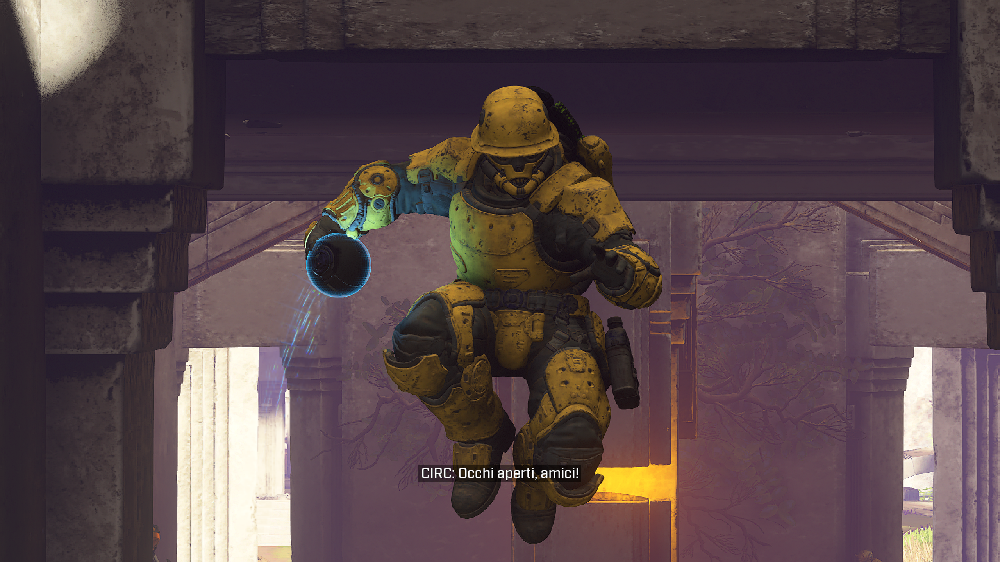
L’assalto per piazzare la bomba nel cuore della “Sala Nerd” di Colt effettivamente risulta più facile del previsto. Entrano senza alcun ostacolo in vista. In pochi passi, Tigrozzo e una squadra di Valore si ritrovano nel mezzo della sala. “Madonna che gusti di merda” esclama Tigrozzo. Altri di Valore però hanno una altra domanda “Ma non dovevi affrontare Pino?”. “Pin, Colt, Cobra, One Piece tutti la stessa merda per me" risponde Tigrozzo. Noble lo hanno lasciato fuori dalla villa, sulla torretta di warthog ad aspettare. Tigrozzo piazza la bomba proprio al centro “Ohhhh bella qui sai che botto”. Poi, incrocia le braccia e dice “bene signori, il nostro lavoro è concluso direi che si è vinto questa prima partita”. L’esercito di Valore è a questo punto assalito da una una unica certezza: Tigrozzo è un idiota. “Tigrozzo guarda che bisogna attivarla sta bomba” alcuni sussurrano, e Tigrozzo “e come si fa?” Patrifu e Spartan provano ad aiutare Tigrozzo. Khan e Penny hanno preso due fucili di precisione che vorrebbero usare sulla faccia di Tigrozzo ma si calmano perchè la bomba viene effettivamente attivata. Mentre l’intera Gilda Valore è nella sala in silenzio dal balcone interno si sente *clap *clap *clap. Colt esce allo scoperto come un villan di tutto rispetto così come Pino e l’intera Gilda Cobra. “Bene Bene, cosa abbiamo qui?”, “un gruppo di dislessici che piazzano una bomba senza sapere nemmeno come attivarla”. Pino “basta parlare uccidete Merdozzo!!!”. Una pioggia di proiettili cade sull’esercito di Valore. Ma anche sui poster di One Piece. Colt non ha fatto in tempo a fermare l’ordine di Pino che urla e si dispera “Pinooooo you fucking dog!! Che cazzo di ordine hai dato!! Ci sono i miei Poster!!!” La Gilda Valore batte in ritirata. Nel mentre, Copter pensando che Valore stesse scappando, prende un Warthog per inseguire il nemico. Sulla torretta si trova Noble che non ha la minima idea di quello che sta succedendo e si fa trasportare via “Vabbè abbiamo fatto così veloce che torniamo a casa per cena”. Copter si gira, vede Noble e decide di schiantarsi con il Warthog. Prende male le distanze e si incastra nelle rocce. “Vabbè tanto Valore è in fuga”. Lascia quindi Warthog e Noble incastrati fra le rocce. La bomba non è stata piazzata, Valore non è stata distrutta. Pareggio.
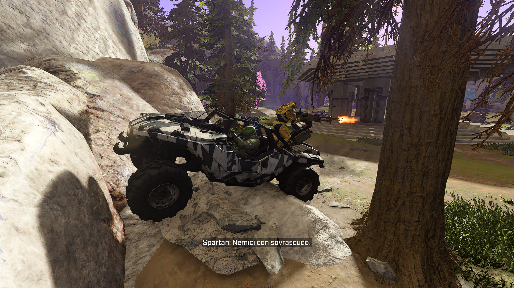
Tigrozzo tira fuori una cartina davanti a tutto l’esercito
“Ahhh Ah! Ecco il mio piano segreto”. Tutti cominciano
ad avere paura. “Ho rubato la mappa delle ville di Cobra
e penso proprio di sapere dove piazzare la prossima bomba”
“Basta con sta bomba”, alcuni non ne possono più,
altri “Ma non dovevi scontrarti con Pino? 1v1 e
fatela finita!”. Tigrozzo non ascolta, apre la mappa e comincia
a dare direttive. “C’è una residenza estiva che sta a cuore
a Cobra, è li che li colpiremo”. Puffo “Spostarsi da colpire
Pino a colpire Colt mi piace sempre di più”.
Seconda Partita. L’esercito di Valore arriva su una nave alla
“Colt Island” un luogo di riposo ma anche con
black jack e squillo di lusso. Non fanno in tempo a vedere
la riva che da tutt’altra parte dell’isola è arrivata la Gilda Cobra.
Alcuni di Valore “Come fanno a sapere che siamo qui??”.
Pino “ma non hanno ancora capito che
ci sono telecamere dappertutto…"
La Gilda Valore e la Gilda Cobra approdano sull’isola.
I pochi residenti, si armano fino ai denti per proteggere le
loro puntate di black jack (ma soprattutto le squillo di lusso appena pagate)
“non avrete le nostre puttane!!!”. Colt incita i residenti a difendersi
ma non ha specificato contro chi, quindi alcuni attaccano pure
la Gilda Cobra.

La battaglia si svolge non solo via terra ma, come in Batman Forever,
anche “via mare e via aerea”. Joe Moo è super eccitato,
oramai ha imparato a muoversi e saltare e pure a salire e scendere
dai veicoli in una sola partita (Joe Moo 1 - Gigatzu 0).
Tigrozzo non vuole piazzare una sola bomba, ma sfodera dalla
sua giacca a vento come un pedofilo ben 5 bombe “Muahahahah”.
Le distribuisce all’esercito Valore, prende Noble a braccetto e si
dirigono ai veicoli: di mare e di aria. La partita inizia e Valore comincia
a far saltare alcune zone dell’isola. I residenti sono super incazzati
vedendo le loro puttane esplodere in mille pezzi.
La Gilda Cobra si difende al meglio ma non c’è nulla da fare,
Valore sta avendo lentamente la meglio: l’isola è in fiamme.
Pino prende un aereo senza nessuno a bordo, cerca una fuga provvisoria:
abbattuto da Puffo. Copter decide di prendere un Warthog. Alla torretta
si ritrova residenti incazzati neri “cioè noi si paga pure l’affitto a Colt
e ci ritroviamo in sto casino.” Su un altro veicolo che sta andando
in fiamme, Noble e Tigrozzo scendono e si allontanano, ma si voltano
una ultima volta vedendo che Joe Moo è rimasto nel
sedile del passeggero. "Scendi Joe Moo!!"
"Sta per esplodereeee!!". Joe Moo (forse troppo emozionato dalla partita),
preme il pulsante sbagliato, pensa di essere sceso ma
invece cambia sedile e si ritrova alla guida
del veicolo. Quindi cerca di allontanarsi, ma invece sta solo spingendo l'acceleratore:
Tigrozzo e Noble vedono il veicolo accelerare ed esplodere,
e Joe Moo sparire fra le fiamme dell'esplosione (Joe Moo 1 - Gigatzu 1, palla al centro).
Scariche di proiettili e urla invadono l’isola. Tutto è in fiamme.
Tigrozzo è super soddisfatto e decide che basta così
“ahhh che soddisfazione, torniamo a casa”. Le navi abbandonano
l’isola. E Valore torna a riva, viaggia con tanti veicoli verso Sangiarno
per festeggiare. A pochi metri da abbandonare Levania, le ruote dei
veicoli cominciano a congelarsi, così come tutto il paesaggio
circostante. “Ma che cazzo succede” l’esercito di Valore è
impaurito. In lontananza, come a Mad Max (Pino alla chitarra),
la Gilda Cobra rincorre Valore con altrettanti veicoli.
La rabbia di Colt e Pino verso Tigrozzo si trasforma in pazzia
furiosa. “Merdozzoooo” le urla che inseguono Valore riecheggiano
nella valle che piano piano si sta congelando. Tigrozzo
vede in lontananza su una macchina Drius che flette un braccio verso
Valore e sta piano piano trasformando tutto in ghiaccio.
Un ghiaccio scivoloso che porta il prossimo scontro in una
semi goliardia da Paperissima con Warthogs (Mania) che slittano
fanno testacoda e si scontrano come gli autoscontri delle fiere.
Risate isteriche di Cobra e paura di Valore riempono il campo di
battaglia. In tutto questo c’è chi perde il veicolo, chi cerca
di recuperarlo, e poi c’è Gigatzu. Fermo, immobile.
Paralizzato come un codice rosso da PS, non si ricorda come si sale sul veicolo.
Alla guida del veicolo c’è Swine che sta urlando contro
Gigatzu “Gnamoooo saliiiii!!” alla torretta c’è Clavuss
“Daiiiii”. Gigatzu, chiude gli occhi, e ‘preme un pulsante a caso’.
Quel pulsante non gli permette di salire sul veicolo, al contrario
lancia una bomba. Non una bomba qualsiasi, ma una bomba appiccicosa.
Cala il silenzio, mentre Swine guarda Gigatzu, Gigatzu guarda Swine,
e Clavuss guarda la bomba innescata che si è appiccicata
fra gli occhi di Swine e con la stessa espressione di Switch
in Matrix 1 “Però ragazzi così no porcod…”.
Il Warthog, Swine, Clavuss, Gigatzu saltano in aria in mille pezzi in lontanza.
Nel cuore della valle di ghiaccio, lo scontro è aperto.
Pino e Tigrozzo sulle torrette si sparano a vicenda “Merdozzoooo!!”
“Scarsooooot!!”, i rispettivi guidatori si vorrebbero
fermare scendere e tornare a casa per l’ennesimo dissing da asilo nido.
Fra le varie esplosioni, Sootz alla guida del Warthog del Leader Cobra, Colt,
decide di prendere una scorciatoia e sbucare alle spalle del nemico.
Il Warthog prende il volo sopra una roccia oramai coperta di neve.
Copter che aveva perso il veicolo si ritrova sotto il salto del veicolo e come
Free Willy, porge il braccio verso l’alto urlando “Vai Sootz!!”.
Il Warthog atterra in mezzo a 3 veicoli di Valore e viene letteralmente polverizzato.
In tutto questo, Sootz prendendo quella scorciatoia aveva sentito Colt
urlargli qualcosa e realizzò, una volta crivellato, che non era
“Vai vaiii” ma era “Cazzo fai??”.
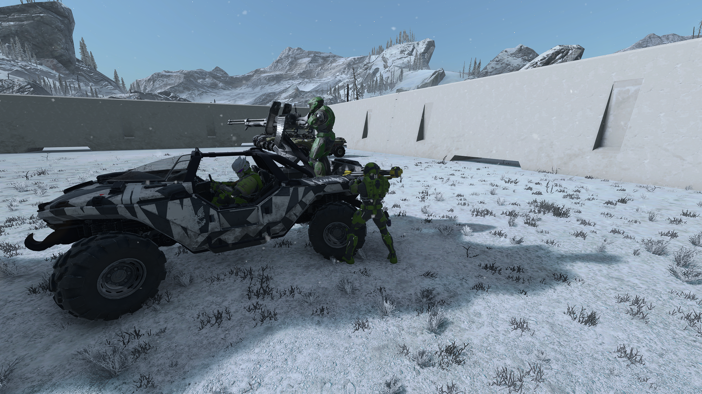
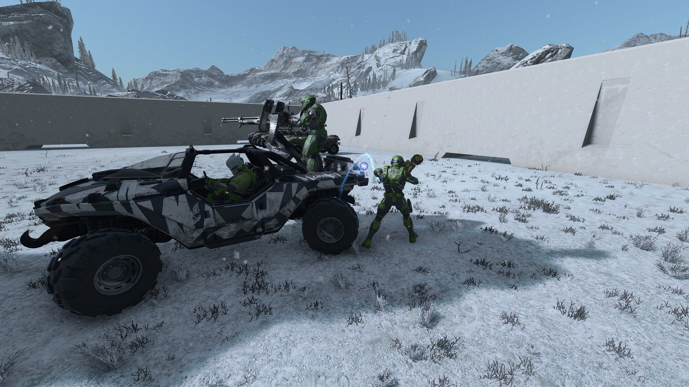
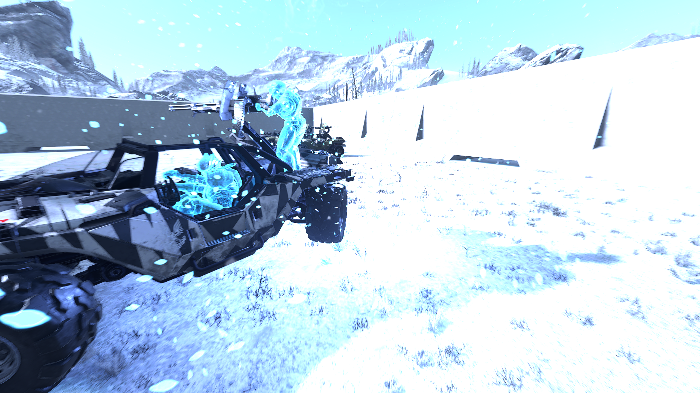
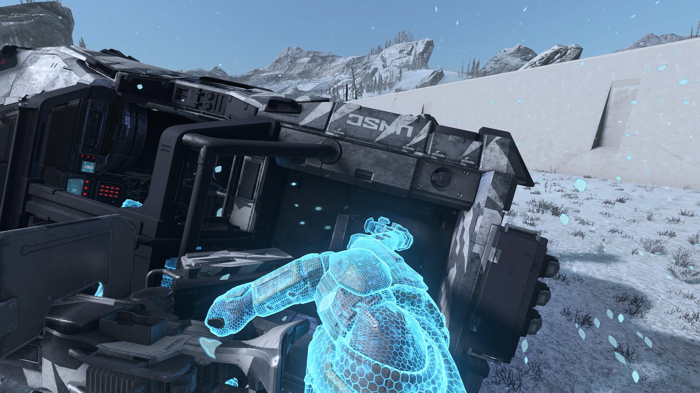
Il ghiaccio scompare, i veicoli si fermano e Tigrozzo portando Noble
in carrozzina incontra Colt e Pino al centro della mappa.
“Basta avete perso” inizia Tigrozzo. Pino “hai rotto il cazzo. Hai
solo attaccato Cobra, dove sta il nostro scontro?”
Ultima Partita. Showdown. “Allora lasciamo Koelttt in panca e sfidiamoci
noi due”. Pino “nessun problema”. Tigrozzo riporta Noble nell’esercito,
chiede ai leaders di riportarlo a Sangiarno. “Voglio solo voi mercenari
per fare il culo a Scarsot”. Pino torna da Cobra “bisogna aprire il culo
a Merdozzo, non mi servono leaders”. I leaders delle rispettive Gilde
si guardano fra di loro, tirano un sospiro di sollievo e invece di
abbandonare il campo di battaglia aprono sedie da campeggio e
tirano fuori i pop-corn “cazzo questa non me la perdo”.
Il paesaggio torna verdeggiante, labirintico e le squadre sono
in posizione su Sandbar. I due VIP, Pino e Tigrozzo a bordo mappa
incitano il loro esercito di mercenari a portare la testa del rispettivo nemico
“no scusate e voi che fate?” alcuni mercenari non capiscono.
Ad ogni modo, Ifrid è diventato una furia omicida, Spartan tira fuori
dal taschino una seconda arma direttamente dai parenti meridionali
Khan si apposta con un cecchino e si mette a sedere “senti c’ho una certa,
ora mi riposo un attimo”. Joe Moo invade la mappa saltellando
“Cazzo bellissimo” spara qua e là nel labirinto oramai
pieno di gioia indipendentemente dalla Guerra in corso.
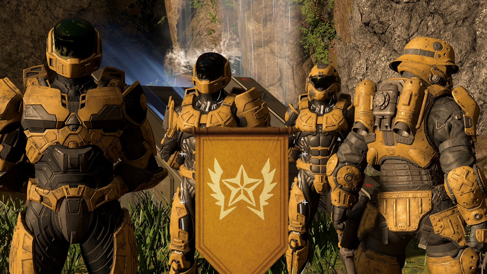
Pino, lascia la corona VIP ad un suo compagno che viene accerchiato e ucciso.
Tigrozzo, lascia la corona VIP ad un suo compagno che viene fucilato.
Si trovano in mezzo alla mappa, faccia a faccia e...
e niente ricomincia il dissing alla Mcgregor e Khabib.
Tutti guardano i due che si dissano e decidono di abbandonare le armi e lasciare
il campo di battaglia “Minchia che palle ragazzi..”.
I leader ripiegano le sedie da campeggio e tornano a casa “eppure fino al dissing
ci stava come partita”. Puffo, nel ripiegare la sedia, chiede a tutti
"ma a voi non vi fischiano le orecchie?" tutti scuotono la testa.
Puffo aveva ricevuto così tante infamate quella sera che non riuscì
a dormire da un rumore di sottofondo con parole (offese) a malapena comprensibili.
Ma Copter prima di abbandonare la postazione, prese i pop-corn,
glieli tirò in faccia e disse "Vai a letto puffo di merda".
E con Sootz (caricato in carovana come un prigioniero), tornarono a Malthor.
La Guerra dei Campioni iniziò con il dissing e finì con altrettanto dissing.
✍ Torna a Inizio Pagina.
5 Febbraio 2026. Posters. Dalla ultima Guerra, è chiara la
voglia di partecipare, di combattere e di vincere: cioè di
guadagnare dei soldi per andare in vacanza alle Maldive questa estate.
I mercenari chiedono una mano a Sootz, esperto di marketing, e utilizzano
PPT per stampare poster di loro stessi e affigerli per tutta l’Agorà.
Fra i quali vediamo i Campioni Tigrozzo e Patrifu, lo stesso Sootz (in cerca
di fuga dal burnout dalla Gilda Bastione) e ancora Flying WC, Clavuss e AeroStokes.
Fra i tanti, molti si fermano davanti a quello di Pino e vomitano per motivi
ignoti. Le loro quotes, le loro storie e i loro prezzi: quale mercenario
deciderete di pagare per la prossima Guerra? scopriteli tutti
su Agorà
9 Febbraio 2026. Prologo.
L’ultima Guerra fù molto intensa. Non solo vide tutti i leader schierarsi,
ma vide pure le prime Armate crearsi. Lunga fu l’attesa per una prima partita
multi-teams e intensa fu la sfida. La fine della Guerra porta sempre tante
celebrazioni ma pure tanto rancore che cresce nell’ombra pronto per trasformarsi
in nuove sfide e zizzagna (l’hobbie preferito di questo campionato).
Il Maestoso Hernicopter, rientrato tra le mura della sua dimora colossale
(il marketing paga), non del tutto soddisfatto dall'ultima side quest,
passa nella sala dei trofei di Bastione per rincuorarsi della sua maestosità.
“Ahhh il premio Noble Party Gran Paradiso. Contro 7 Gilde abbiamo fatto il culo a
tutti”. E poi, si avvicina alla teca di un premio tanto antico quanto importante.
Si gela. La teca è vuota.
“DOVE È IL PREMIO DEL MIGLIOR VIDEOGIOCO????” , “DOVE STAAAAA???”
Flying WC, mercenario di fiducia e custode dei trofei, si fionda nella sala dei
trofei e trova Copter in ginocchio davanti alla teca vuota.
“Signore cosa è successo??”. “È sparito, l’hanno rubato!!”.
“Cosa Signore??? Quale DVD di Steven Seagal?? Nico?? Trappola in Alto Mare??
Non mi dica Duro a Uccidere, non possono averlo pres..” . “No brutto idiota.
Il premio del miglior Videogioco”. “Ah”.
Quel premio, firma di Bastione del 2023 era una asta d’oro lunga 2m dove vi era appesa
la stampa in oro di tutti i nomi che votarono il videogioco di Bastione. Essa,
Aveva portato prosperità e credibilità alla conoscenza di Bastione
nel mondo dei videogiochi. Molti sponsor e danari arrivarono da allora. E adesso,
il premio, era stato trafugato. Non si trattava di un semplice furto, ma di un
affronto deliberato, capace di scuotere le fondamenta stesse della Gilda.
Flying WC si piega e sul lato della pietra dove poggiava il premio vi era inciso
un segno inequivocabile: una doppia lama ricurva incisa sulla pietra, inconfondibile
simbolo della Gilda Sciabola. Con scritto “finale 2023 totalmente pilotata. Non ti
meriti niente schifoso.”
Un messaggio chiaro, pensato per essere compreso.
Antiche offese della gilda Sciabola riaffiorano in Copter. Fra le quali: “Avatar
è una merda”, “Sempre sti giochi da tavolo troppo complicati per nerdoni”.
La rabbia stava solo crescendo e nessuna mediazione sarebbe stata fatta. Il furto
del premio non poteva restare impunito.
“Eh non voglio fare Guerre Side Quests, non voglio giocare….ora gliela do io una Guerra
Side Quest a quello lì”. Copter, stava quindi preparando l’armata di Bastione per
riconquistare il premio perduto. Nessuna mediazione sarebbe stata fatta.
Il trofeo doveva tornare al suo posto.
20 febbraio. Celebrazione.
Karmic che aveva trovato dimora nelle lande aspre e selvagge di Bucinor, dove sorgevano gli antichi
templi e i manufatti sacri della Gilda. La sua abilità e la sua disciplina lo avevano
reso il candidato ideale come erede e capo indiscusso di Sciabola.
Aiutato dallo “Sgravo Fiscale” applicato a tutti coloro che avessero preso dimora vicino a dei vulcani
attivi, Karmic aveva preso la dimora dell'antica Gilda Sciabola per il campionato. Unica scelta dopo
aver dato tutti i soldi a Stokes per l’Hyrox. Con le poche finanze che restano, Karmic aveva usato
la prudenza per questo campionato restando lontano da scontri, rifuggendo battaglie futili (o rischiose)
e conflitti privi di una reale necessità, come quello che stava inconsapevolmente imbastendo con
questo affronto a Bastione. Ma allora perchè questo affronto a Bastione?
Proprio qui, a Bucinor, lontano dai preparativi di Bastione, Karmic ha preso finalmente il titolo di
dottore. Diploma ottenuto con le scuole serali economiche ma comunque sia un diploma: l’unico nella
Gilda Sciabola. Con questo diploma, Karmic vide la luce in fondo al tunnel pronto per rimettere in
piedi la Gilda Sciabola. La Scroll Academy aveva avuto il suo piccolo successo invernale ma non
sufficiente per recuperare i buchi dei bilanci finanziari della Gilda. Ora, molti mercenari feriti
potranno venire da Sciabola a curarsi in cambio di favori per la Gilda. Una piccola festa fu imbastita
per questo evento contrariamente a Karmic che urlò “Basta Spendere!!!”
Accorsero molte Gilde alla festa a Bucinor, fra le quali, non Bastione. “Copter ha fatto il solito
El Classico vero?” disse Karmic, “Boh non lo vediamo da giorni” risposero alcuni. SlickColt con la
pattuglia improvvisata di mercenari di Cobra, arrivano alla festa e si fiondano a fare qualche domanda
scortese a Karmic per la scomparsa di alcuni mercenari in Agorà.
“Sai qualcosa dei mercenari uccisi?...sei te il colpevole?...dove eri la notte fra il 5 e il...” .
“Gori...volevo dire Colt hai rotto il cazzo. Non sono io brutto idiota!!” [cit. Serata Among Us 2022].
La festa continua fino a tarda notte, mentre Karmic raccoglie tutte le bottiglie di vetro per portarle
al mercato di Bucinor e rivenderle per qualche soldo: non si butta via nulla. P.S. Stokes non venne
perchè non era servito alcol alla festa.
9 Febbraio 2026. Trailer e Indagini.
Karmic aveva appena finito di pulire e accende la TV in contemporanea con le NobleNews.
Guardando il servizio, sputa il caffè tossendo “ACK- HAUGHK- AUCKH- ACAUGH...cosa??”.
Un annuncio di Bastione per una Guerra contro Sciabola. Karmic semplicemente, sviene.
Al suo risveglio, si ritrova davanti la faccia di Ifrid “che è successo...”.
“Ma niente signore ha soltanto bevuto troppo” . “Macchè dici! io non bevo...sto
parlando della Guerra!!” “Si, Bastione è in marcia.” “Ma perchè?? che ho fatto??”
“Ma che ne so Karmic, lo sai come è Copter: un coglione, sicuramente per
qualche futile scusa per prendere glorie immeritate” . “No ma qualcuno gli deve
dire qualcosa” “No Karmic, è il momento di tirare fuori il cazzo e sbatterglielo
in faccia a Bastione” “intanto modera i toni perchè qua ci leggono pure i bambini”
“Volvevo dire è il momento di difenderci e poi chiedere spiegazioni in caso”
“Non sono d’accordo ma meglio parlarne placando un pò quest attacco che sennò
Copter non mi darà ascolto” “Ben detto Signore, vado subito in Agorà a prendere reclute”
11 Febbraio 2026. Sondaggio. Ifrid arriva in Agorà, scopre che la campagna di
Bastione per il reclutamente era già iniziata. In più, dopo gli ultimi
omicidi, con le iscrizioni di Guerra aperte, in molti vogliono partecipare (sperando
di scampare alla morte).
Ifrid, prende una carriola e ci mette dentro Stokes ancora ubriaco, poi passa da una
altra locanda e vede Noble che legge un dizionario di italiano al contrario “vabbè
meglio di nulla” tira dentro pure lui. Intanto Bastione aveva già preso Puffo, Baudo
e Drius. Skate sapendo che Swine joinava Sciabola si è fiondato su Bastione. Mentre
Tigrozzo all’inizio dice "non lo so". Immaginatevi la carta Magic the Gathering Obliterate
(Obliterare, set Invasione) dove il Barrin, mago umano di Dominaria, incenerisce il paesaggio
davanti a lui distruggendo tutto. Un pò come Karmic che guarda il gruppo
Whatsup e il “non lo so” di Tigrozzo e vorrebbe fare lo stesso con i componenti
del gruppo Whatsup. Ma alla fine Tigrozzo si decide e sceglie Sciabola per amore
del passato. Glimpse esce dal centro scommesse, non si unisce ad Ifrid e punta tutto su Bastione.
22-23 febbraio. Un nuovo incontro.
Il reclutamenteo di Ifrid continua, e insieme a questo anche gli acquisti di armi e armature per
la prossima Guerra. Ma viene alla luce un problema. È tutto sold-out. Come è possibile?
Il gruppo di mercenari di Ifrid vaga per l’Agorà ma molti negozio sono chiusi per aver finito
le scorte. All’ennesimo negozio, che sta per chiudere, esce JaqueLuisDavid chiamato pure GigatzuMuiri,
un mercenario di lunga data, perse ogni sua traccia ben 20 anni fa. Noble apre il discorso
“Damo...volevo dire Jaque...volevo dire Gigatzu, ma da quando sei in Agorà?’” “Da tanto”
“ma che stai facendo?” “Sto comprando skins, basta cliccare compra ragazzi è facile”.
“Si ma costano soldi..” “Quali soldi” . “I soldi che…” . “Ho detto quali soldi..”.
Noble non ci prova e cambia discorso. “Comunque non ti serve spendere per partecipare
al campionato” Gigatzu riposa le armi sul carrello e chiede “Quale campionato?”.
“Giochiamo ad Halo Infinite in un Campionato” . “Ah ma si può pure giocare ad halo?
Io sono ancora alla sezione ‘Negozio’ ”. “Vabbè dai c’è una Guerra in corso vieni o no?”
. “Cosa è una guerra?”. “Te lo spieghiamo strada facendo dai...” .
“Se c’e da sparare posso bestemmiare vero?”. La campagna di reclutamento di Sciabola
giuse al termine e Ifrid portò la combriccola di leaders e mercenari a Bucinor.
5 Marzo 2026. Il Terzo Match.
Bastione è arrivato a Bucinor. Alla vista di quella armata, Karmic sta per svenire perché
ha letteralmente imbiancato il portico l’altro ieri e sa che verrà spazzato via. Alle sua
spalle, arriva Svezio. Già…entra così nel Campionato. “Ciao a tutti”. Conosciuto da
pochi, ha trovato tempo libero stasera e si ritrova in una Guerra di fuoco e fiamme “È qui
la festa?”. “Ma che cazzo dici Svezio!! Non vedi stanno per distruggere tutto??” tuona Karmic.
“Ma scusa e la tua laurea?” “Già fatta Svezio” suggeriscono alcuni mercenari li presenti “Ah”.
L’arrivo di Bastione viene preceduto dalle urla meridionali di Spartan, il mercenario di cristallo,
“Ueeeeueeeee bellu stu vulcanuuuu ce l’abbiamo uno pure noiii” Drius: “taci ti prego”.
A questo punto l’ultimatum di Copter “rendimi il mio trofeo”. Karmic non fa in tempo a
rispondere che Ifrid sbotta “Mai coglione!”. Karmic guarda Ifrid e non capisce “ma di
cosa sta parlando?” Ifrid: “tu lascia fare a me”.
Bastione prepara la carica. Prima partita, Invasione…..che finisce in meno di 3 minuti.
Bastione è un diesel. Lento a partire. Alcuni mercenari di Sciabola hanno pure smesso
di sparare che non serve. Karmic è confuso “eppure non è difficile sfondare un
portico di legno”. Nei ranghi di Bastione c’è confusione tanto che Puffo, fermo a guardare
Copter illustrare la sua strategia, viene ripetutivamente ucciso da Tigrozzo. La serata per
Tigrozzo è praticamente finita lì sentendosi Campione un’altra volta. Bastione si ferma,
non riesce ad entrare: inaspettata inespugnabile fortezza. Inespugnabile da Bastione…che beffa.
Allora Bastione prova ad aggirare la fortezza (che con le finanze di Sciabola non era nemmeno
finita). In questo momento di apparente pace, Karmic prende un sospiro di sollievo “va bene
adesso ci si riposa no?” Ifrid non ci sta “col cazzo Bocci…volevo dire Karmic. Adesso gli si
tende un imboscata!”
Copter e l’esercito di Bastione arrivano in una pianura di fuoco e fiamme “ma che cazzo
di posto è questo?”. Siamo letteralmente all’inferno, e non parlo del pronto soccorso,
ma bensì del luogo di riposo di Karmic. Avete capito bene: si riposa fra fuoco e
fiamme, immaginatevi il suo stress quotidiano. Aggirata la fortezza di Sciabola, Bastione arriva
sulla pianura di fuoco e fiamme (Valhalla Hollow), e al centro della mappa, c’è proprio
il trofeo rubato. Copter “Eccolo lì!!" mentre guarda quell’asta d’oro al centro della mappa.
Karmic non fa in tempo a guardare e rimane ancora una volta confuso “ma che è?” guarda
Ifrid che già comanda un piccolo plotone di Sciabola.
Colt finisce di vomitare dopo aver vinto una partita con Noble e Tigrozzo, esce dal bagno
e si unisce allo scontro. Proiettili dappertutto, rigenerazione istantanea, il respawn
diventa una virgola nei quindici minuti di gioco. Ad un certo punto, Sciabola si compatta
prendendo i veicoli per contrastare i carri di Bastione. Ma quest’ultima ha messo sul
campo di battaglia un piano più subdolo del previsto. Un Copter-Bot ha aggirato
l’esercito di Sciabola e si è inserito fra i loro ranghi, esattamente come mitragliere
di Warthog. Ifrid prende quindi il veicolo e chiede un mitragliere, Copter-Bot sale sulla
mitragliatrice e con una voce robotica urlà
“V-a-i !! T-i-r-i-a-m-o-g-l-i i-l c-a-z-z-o i-n f-a-c-c-i-a!” Ifrid conferma
“Ben detto mitragliere!! vieni anche tu dalle Valli?”. Il Warthog sfreccia sul campo
di battaglia, si ferma davanti al nemico e Ifrid grida “Vai sparaaaaa fagli sentire il
cazzooooo”. Niente, silenzio. Nessun proiettile, nessun grido. Ifrid si gira, guarda in
faccia il mitragliere: “Merda è un bot”. La disperazione invade Sciabola che cerca
tutti di togliere dalla mitragliatrice il bot ma invano: il fuoco amico era stato disattivato.
Bastione, si riprende il trofeo, e lascia la pianura di fuoco e fiamme.
Karmic “allora io non so perchè mi hanno attaccato, ma dato che non hanno
distrutto nulla e ho appena ripeto finito di pagare le bollette direi di finirla qui”.
Ifrid sale su una roccia, davanti a lui la pianura di mercenari di Sciabola,
Karmic sta ancora una volta per avere un attacco di panico. “Mercenari di Sciabola...
La merda 'Bastone' ha rotto i coglioni, non possono fare quello che vogliono dove vogliono”.
Il discorso incita i poveri cerebrolesi mercenari che non sanno troppo cosa significa andare
in guerra, ma il discorso infuoca gli animi “Noooo non possono!!!”.
“Marceremo verso Bastione e gliela faremo pagare!!!”. Ifrid ha con sé il rancore
di un assalto nel 2024 alla dimora di Bastione che non riuscì. L’inespugnabile
difesa. Le leggende erano vere? “Andremo a Malthor per testare questa leggenda”.
Copter rientrato nella dimora pulisce (e limona) il suo trofeo. WC un pò
disgustato si fa una camomilla rilassante guardando alla finestra la distesa pianeggiante.
Ma ad un certo punto sputa tutta la camomilla “Pffffffff…signore!! Sono gli Sciabola!!”.
Copter “Vedo che non hanno imparato la lezione, chiudete i portoni, prepararsi a ri-spedirli a casa”.
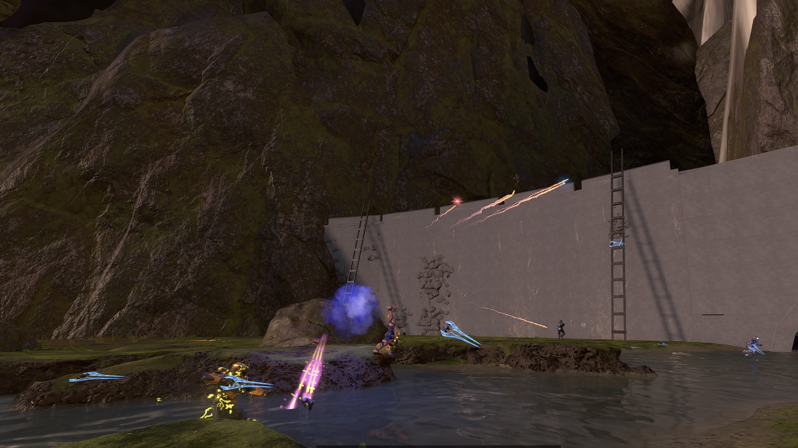
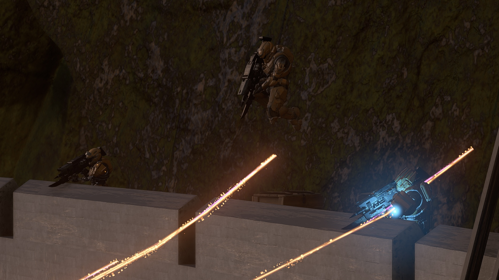
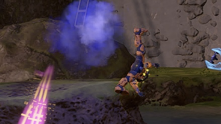
L’incursione di Sciabola comincia alle porte della dimora di Bastione (Il Fosso di Helm). Grandi proiettli piovono sulle facce dell’esercito di Sciabola, Glimpse si ritrova a non dover spostare l’obbiettivo che ha trovato il respwan di Noble che continua a rinascere e morire.

Con una lunga scivolata, Colt, riesce a piazzare la bomba nelle (prime) mura di
Bastione. Copter rimane di stucco ma si ricorda “vabbè fin li ce l'hanno fatta
tutti”. L’assalto continua. In meno di pochi secondi, viene fatta esplodere la porta
principale. Karmic, impossibilitato a scappare da questo assalto per ragioni ignote,
calcola il danno economico per Bastione e se ne rammarica. Bastione si rifugia nella
sala da ballo “chi entra gli piace il cazzo!!”. Sciabola si fermano un secondo,
guardano Ifrid, Ifrid li guarda ed esclama “tipica provocazione delle Valli, non
ha effetto su di me”. L’assalto continua. Noble trova degli enormi cubi che potrebbero
fare da scudo, non fa in tempo a finire la frase che una fucilata spazza via lui e questo
enorme cubo. Ai lati dell'ultima porta che divide l’esercito di Sciabola da quello di Bastione,
ci sono Stokes e Ifrid che si guardano “Dai dai dietro di noi!!”. Karmic viene
trasportato fra i ranghi “ragazzi ci facciamo male poi vi devo curare tutti gnamo”.
I vecchi ricordi di una LAN epica lanciano il morale alle stelle. Un ultimo assalto,
un'ultima carica. “Al mio 3” esclama Tigrozzo. “Uno…..Due…..TRE!!!”. L’esercito di
Sciabola irrompe nella sala. Bastione si sparpaglia, spara dappertutto “oh merda
oh merda oh merda” Sootz imbraccia una mitragliatrice e spara sia ai Bastione sia
agli Sciabola “non mi fido più di nessunoooooo”. Un grande polverone si alza,
Bastione ce l’ha fatta. Almeno per ora.
Così come i Bastione, gli Sciabola aggirano la fortezza e si ritrovano in un campo
aperto, secondo luogo di battaglia di Bastione. Luogo Chiamato Infinity CE, in memoria
di Halo CE, contenente tutti i veicoli più devastanti del multiverso. Karmic
è quasi arrivato allo stremo delle forze nella completa confusione di un
attacco a Bastione che non ha capito, guarda Ifrid che risponde sicuro “non si
preoccupi signore ce la faremo” “ma a fare cosa ifrid???”. Sciabola inizia l’avanzata
nella pianura guidando gran parte di veicoli aerei e da terra. Una avanzata solida
che trova Bastione in ritirata. La pianura è lunga e richiede molta pazienza
di movimento. Pazienza che Sciabola non trova. Ifrid viene tirato fuori come un pollo
dallo Scorpion, poi gli avvoltoi Glimpse e Puffo bruciano la poca pazienza rimasta a
Sciabola distruggendo uno dopo l’altro i veicoli che si avvicinano all’esercito Bastione.
Bastione prende il sopravvento terrestre e mette in fuga Sciabola. Finita così?
Karmic è stremato, confuso. Prende Ifrid per il collo “ma perchè
li stiamo attaccando???” Ifrid mezzo strozzato risponde “Penalità per
Copter” “Eh?” Karmic lascia il collo di Ifrid. “Signore, ho rubato io il
trofeo perchè Copter non se lo merita. Sebbene nel lontano 2023 ha
vinto il torneo dei videogiochi con il mio videogioco preferito, la sua
persona mi infastidisce troppo. Quindi ho rubato quel trofeo per fargli
un torto” (e quindi scatenando una Guerra). Karmic rimane in silenzio.
Sta per esplodere di rabbia. Una Guerra che è stata creata senza
la sua volontà, mette la Gilda Sciabola e le sue finanze in grave
pericolo nel mezzo di Malthor. Si narra che la rabbia di Karmic arrivò
a tal punto che il suo cervello fece un reset di sentimenti. Quindi la sua
faccia diventò di marmo, tirò fuori un piccolo trolley da viaggio,
mise dentro tutte le armi che aveva, guardò Ifrid “Io e te ci vediamo a
Bucinor”, si girò e se ne andò.
Ifrid “No aspetta non abbiamo finito!!”. Karmic si allontana agli occhi dell’esercito di
Sciabola che gira poi lo sguardo verso Ifrid. “Allora ragazzi si è vero l’ho tirata
su io questa Guerra”. Molti abbandonano le armi, altri rimangono “vabbè oramai siamo
a metà, soprattutto a quest’ora un Uber costa uno stonfo”. Quindi? Quindi...
“chiederemo uno scontro di soli mercenari”. A quel punto, altri mercenari lasciano il campo di battaglia.
Gigatzu e Svezio, la loro prima Guerra (una forse delle più complesse e dure del campionato
fino ad ora) si aprono una birra e fumano un cicchino “vabbè ragazzi fate come volete ci
capiamo il giusto”. Bastione si avvicina. Copter si guarda intorno e non vede Karmic
“dov’è?” “È in bagno coglione, prendo io le redini di Sciabola, porta in
campo i tuoi migliori mercenari sennò non ce ne andremo e in molti moriranno -
cioè prenderanno il cazzo in faccia”. Copter accetta la sfida a patto che si
tolgano dalle palle abbandonando Malthor che l’indomani arrivano le scuole elementari
per visitare la sala dei trofei.
Baudo alza le braccia al cielo e crea una arena di roccia fluttuante capovolta. La mappa
Disorientation. La gravità si ribalta e i mercenari di Sciabola e Bastione
si alzano in ciele finendo nel campo di battaglia. Gigatzu vede la sua birra cadere al suolo ancora
mezza piena: ha così inizio la sua rulla di madonne “ecco ragazzi così no però”.
La partita inizia, pure Svezio è incazzato che non ha potuto finire la birra, e trova
motivo di battaglia. Nella mappa c’è un orologio che segna le 23:01. Clavuss lo
guarda e si interrompe “Gnamo giochiamo che si fa….” è già tardi. A questo
punto non ci vede più dalla rabbia: indemoniato. La Guerra ha sforato di un minuto
le 23:00, un peccato imperdonabile. Prende il primo fucile d’assalto e crivella i mercenari
di Bastione riducendoli in ciottoli. Ifrid ha preso la partita seriamente e comincia a trucidare
il nemico senza pietà. Probabilmente ha cambiato gli FPS nello schermo, decisamente azioni
da Ufrid. Glimpse usa la sua tecnica peggiore: scompare per 5 minuti dei 15 con la sua
invisibilità e martella il nemico alle spalle. Solo Tigrozzo ad un certo punto usa
tutta la sua forza e colpisce un muro (casuale) della mappa – ignoti ancora i motivi,
spazzando via il muro e dietro Glimpse accucciato. In Bastione, Skate è alla massima
potenza ora che il sole è totalmente calato e prende forza dalla notte (boh non sapevo
che scrivere…). Per ultimo, vediamo Gigatzu, ma prima di vederlo, viene ascoltato da tutti.
La sua rulla di madonna riesce a sgretolare le mura della mappa e a riecheggiare in tutti gli
angoli. Punzecchia, si sposta, si accuccia, ma finisce sempre sotto il fuoco nemico e rimane
paralizzato “raga avevo bisogno di quel cicchino porcaccio il vostro…”.
Una rimonta di Sciabola non basta per vincere. A una manciata di punti, Bastione ha la
meglio. Copter “basta, levatevi dalle palle ho altro da fare!”. La mappa si dissolve,
gli eserciti prendono direzioni opposte. Ma Ifrid ha un ultimo piano. Riprendere quel
cazzo di trofeo in qualsiasi modo necessario. Tira fuori dalla tasca danari ottenuti
nei mesi passati con il centro scommesse e promette una ricompensa a Noble, Colt e Swine
se prenderanno il trofeo. “Vai va bene, dai forza carichi” dice Noble. Colt e Swine “vabbè, i soldi schifo non ci fanno”.
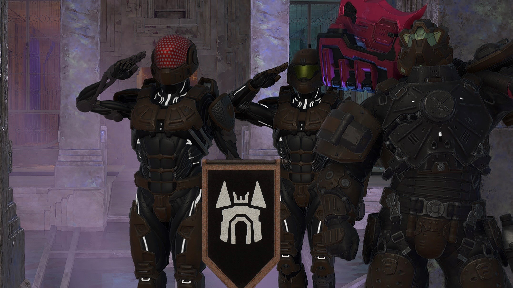
Ifrid aggira la fortezza di Bastione avvicinandosi alla sala trofei. Copter vede lui e quei
tre rimbambiti da lontano “basta ma icche fanno?”. Si gira verso Puffo e Drius “potete pensarci
voi”. “A gratis nulla mio ‘Bastone’ ”. Copter sfila dalla tasca una manciata di denaro e
getta in faccia a Drius e Puffo. Chiama pure Baudo che si unisce al trio per fermare la
banda bassotti Noble/Swine/Colt. Letteralmente guardie e ladri.
Alla sala dei trofei, Noble è bollente “dai dai si prende e si torna a Bucinor”.
Prende la rincorsa. Colt e Swine non fanno in tempo a fermarlo che una trappola viene attivata,
il suolo sotto Noble si apre e sparisce nel vuoto. “Eccoci” esclama Ifrid.
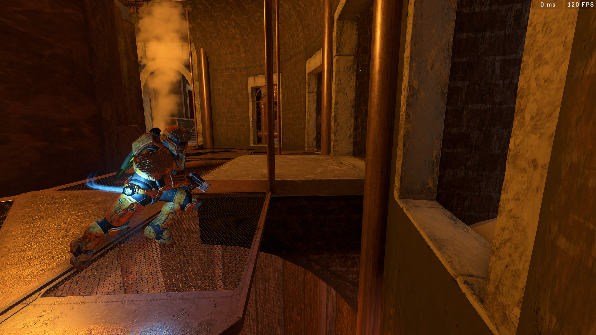
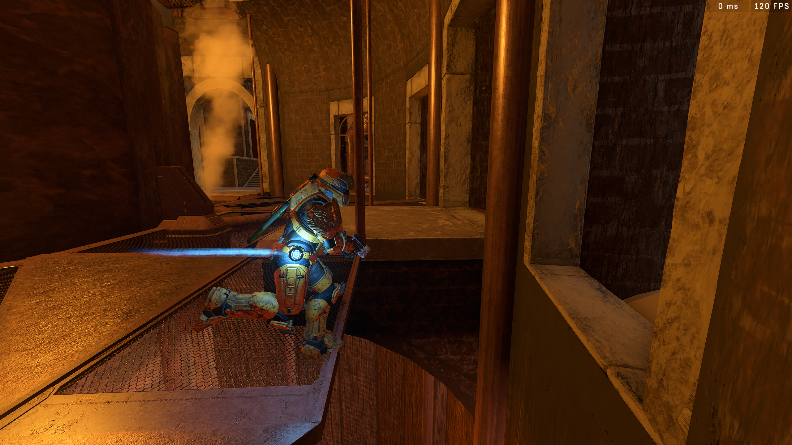
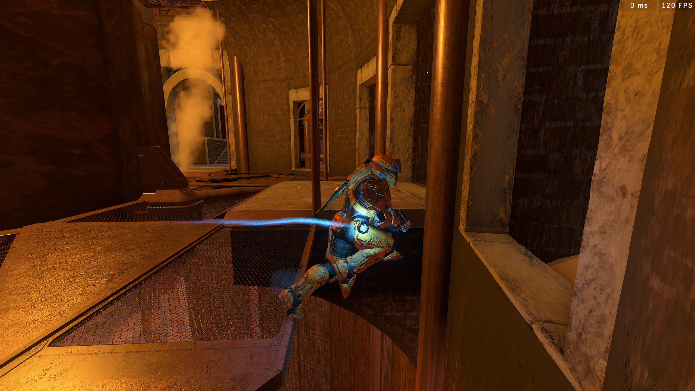
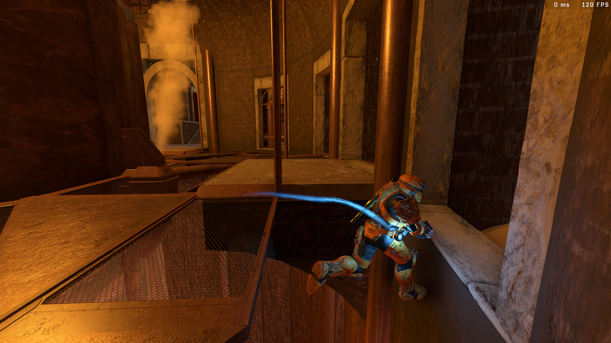
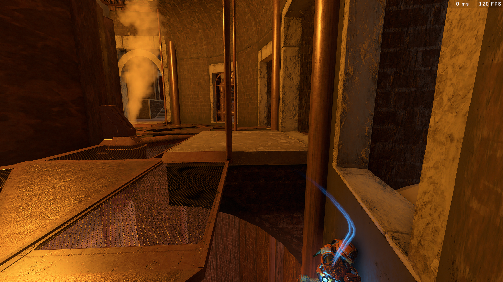
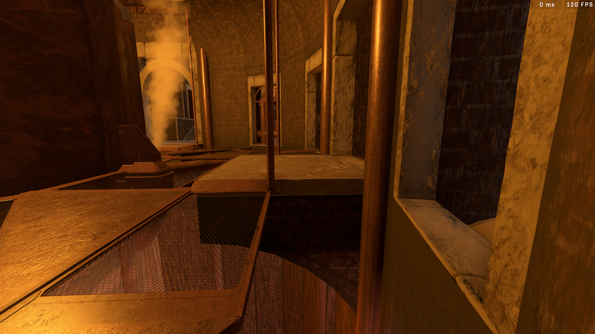
La partita ha inizio. I poliziotti inseguono i ladri che trovano qualsiasi scorciatoia
verticale e orizzontale. Ifrid ha pure fornito loro l’invisibilità, ma serve a poco quando
Colt si incastra in uno scalino e viene liquefatto dai proiettili nemici.
Noble torna in scena, trovando un passaggio sotterraneo, un passo, e finisce di nuovo in una altra trappola.
Una disfatta. “Eccomi ci sonooOOOOOOooooHhhhhhh” scompare di nuovo.
La partita è un 2 contro 3. Alla fine, Ifrid ‘si sda’,
“gnamo stacca basta siete incapaci”. La banda bassotti scappa in ritirata,
gli ultimi rimasti dell’esercito di Sciabola alle porte di Bastione.
Il giorno seguente, Copter accoglie le scuole elementari vantandosi di trofei conquistati
nel tempo. Mentre a Bucinor, al cospetto di Karmic, Ifrid prende una ripassata
“che cazzo fai sta Guerra dal nulla!!! Mi sono appena laureato!! ho appena finito
di pagare le bollette!!!” . Ifrid “Si ma Copter..” . “Si un cazzo!!”. La discussione
accesa viene interrotta da una figura che apre le porte della sala grande della dimora
di Sciabola. Karmic e Ifrid si girano di scatto. Riconoscono la figura alla soglia
della porta, e Karmic sbotta “Cosa c’è ancora?”. È Bibobio,
impegnato 72 su 24 nella sua nuova pizzeria in Agorà non ha ancora trovato il tempo di unirsi a questo evento.
Arrivato con qualche pizza appena fatta "Ho saputo della batosta AAAA...
dai scherzo son venuto a rincuorare gli animi con qualche pizza",
porta tranquillità nell'animo di Karmic che chiede mentre mangia.
"Non Potresti partecipare a questo dannato Campionato?? Giocare con noi qualche volta?"
"Si, Forse, un giorno".
✍ Torna a Inizio Pagina.
12 Gennaio 2026. Incontri.
L’ultima Guerra ha lasciato un silenzio tombale in Agorà.
Rammarico, frustazione e voglia di rivincita.
Tutto questo per una Guerra di una Side Quest...
immaginiamoci per una Guerra dalla Campagna Ufficiale!
Lontano, fra i monti di Lorath, precisamente sul monte MagnusPratum,
un escursionista impavido cerca di scalare la montagna.
Schiva trappole naturali di ogni genere: pozzanghere, stretti sentieri e alberi caduti sul percorso
(...ripensandoci non sono proprio trappole ma ognuno ha le sue sfide).
Alla velocità della luce, mettendoci meno di un rider di Deliveroo, schizza in cima alla vetta.
Arrivato in uno verde spiano, con la sua tuta mimetica aderente, si toglie gli occhiali sportivi stile steam punk.
È JoeMoo. Guarda il traguardo raggiunto, non tutti riescono ad arrivare così in alto e si sente soddisfatto.
Nella sua totale calma, si guarda intorno ma viene completamente spiazzato. C’è una altra persona all’orizzonte.
Questa persona guarda dall’alto l’Agora, decisamente arrivata prima di JoeMoo.
Ma come è possibile si domanda.
Questo posto è irraggiungibile da molti.
Soltanto grazie alle STMM è stato possibile raggiungerlo pensa fra se e se JoeMoo.
Dubbi e curiosità lo spingono ad avvicinarsi cauto alla figura sul ciglio del precipizio che contempla la valle.
“Heilà” , “Anche tu qui?”. Nessuna risposta. “Oh gnamo rispondi che problemi c’hai ha ha”.
JoeMoo si avvicina alla sinistra della figura avvolta in mantelli di pelle contro grandi nevicate.
“Oh tutto apposto?”. La figura si gira e JoeMoo fa un passo indietro.
“Oh” ci riprova ancora JoeMoo. “Ma come hai fatto a raggiungere questa vetta” continua
“vesti un nuovo modello STMM ? quelle gears non le ho mai viste.”
C’e un minuto di silenzio mentre JoeMoo osserva gli occhiali che coprono il volto del misterioso compagno esploratore.
Attrezzatura da montagna, si, ma sotto i mantelli ha una corazza da guerriero.
La figura si pronuncia: “Sapresti come ho fatto a raggiungere questa vetta senza
le STMM se solo partecipassi al Campionato di Halo Infinite” continua
“Un campionato che mette alla prova (la pazienza di) tutti” e ancora
“Io ho vinto quello che volevo. E ora mi domando cosa mi attende.”
JoeMoo prova a giustificarsi “No ma sto installando Finestra 12
cioè è crackato sia chiaro perchè non voglio spend...”
Mentre spiega una interminabile e inutile frase,
la figura mette una mano in tasca, poi allunga il braccio con il pugno chiuso a JoeMoo.
Ricarde il silenzio. Apre il pugno ed esclama “Tarallino?”
JoeMoo guarda il tarallo pugliese che poggia sul guanto di pelle dello sconosciuto
...ed è ancora più confuso di prima.
“Grazie”, prende il tarallo e lo sgranocchia.
La figura si gira e si incammina lasciandosi alle spalle il precipizio e il confuso JoeMoo.
JoeMoo si gira verso la valle “certo che se ne trova di gente strana in montagna eh”
Poi lo sguardo cade a terra verso qualcosa che luccica.
Evidente sia stato lasciato cadere a terra dalla figura misteriosa.
JoeMoo si abbassa spostando qualche filo d’erba.
È una medaglia d’oro.
Sulla medaglia c’è inciso: “Tigrozzo Campione”.
13-15 Gennaio 2026. Preparativi e Nuovi Delitti.
C’è chi si allena, chi contempla ma anche....chi ha lavori in corso.
A Maltorh si parla di ristrutturazione. La campagna di reclutamento è scappata di mano
e mercenari che abitano lontano vogliono fare uno stage a Bastione ma non hanno posti auto.
“Cioè io ho guidato per 2h e la devo lasciare per strada? Ma vaffanculo.”
Flying WC cerca di calmare gli animi “signori della guerra” (grande leccaculo) “forza suvvia state buoni,
abbiamo già pensato a tutto, faremo un parcheggio per tutte le vostre auto”.
I lavori sono costati una fortuna e non ha aiutato il fatto che c’è stato un rialzo delle temperature a Maltorh
provocando la combustione spontanea di asfalto (evento raro inspiegabile):
i lavori sono ricominciati da capo più volte.
WC è in grande ansia per gestire una mole così grande di lavoro
si guarda intorno ma lui non c’è. Copter non si vede da giorni. Dove minchia è finito?
In Agorà si fanno acquisti per le prossime Guerre.
Arsenali devastanti, armature spaziali, paperelle di metallo. Fra la folla che gira indaffarata,
SoCrem ha il carrello pieno di armi e pensa “finalmente sono pronto”.
Infatti, SoCrem pensa e non parla , perchè è muto.
Quando l’Agorà è invasa dal baccano in procinto di Guerre,
lui arriva sempre in ritardo e guarda passare molti eventi davanti ai suoi occhi.
Questo non lo giustifica dalla capacità di scrivere lettere (rispondere a messaggi)
agli organizzatori del Campionato, che non fa.
E questo fatto, purtroppo, non è passato in osservano,
facendo nascere alcune inasprità.
Svolta in una strada secondaria per raggiungere il suo ultimo negozio.
A qualche passo dallo sbucare in una strada principale, sente una strana presenza alle sue spalle.
Si ferma, e tremolante di paura, si gira lentamente.
Guarda una figura coperta da fiamme correre verso di lui.
SoCrem apre la bocca cadendo in pieno panico.
Ma, dato che è muto, alcun rumore “fu emesso”.
Il carrello pieno di armi cade a terra. Curiosità (e avidità)
spingono molti mercenari ad avvicinarsi al carrello e vedono il corpo di
SoCrem senza vita. Sopra di lui un bigliettino: “Dr.”
Altrove, nella sede di “Cazzo che Schippa”, la rivista che prende per il culo leaders e mercenari,
arriva un prodigioso stagista che bussa alla porta e viene assunto per 6 mesi. È Pino’s Carrot.
Non deve nemmeno pensare troppo al primo articolo. Per conquistare l’amore
della folla, attacca la faccia di Colt ad una sagoma di maiale e la intitola “Oink”.
Pino, dorme soddisfatto. Colt raccoglie questo articolo da un chiosco e pensa “Patetico”.
Lascia cadere a terra quello straccio di rivista perchè ha altro da fare.
Si rimette apposto il distintivo e si gira verso la pattuglia di polizia Cobra.
Dovete sapere che Colt fa tanti lavori,
molti come volontario (alcuni a caso, non sa quello che fa),
tutto al fine di riportare Cobra agli albori gloriosi, anche se ad oggi tutto abbastanza invano.
Da stand up comedian, a caldaista e ora si è spacciato investigatigatore della polizia di Agorà.
Tutte queste morti con la firma “Dr.” non sono passate inosservate.
Certo le persone scomparse mancheranno a pochi,
ma “giustizia deve essere fatta” Colt parla alla sua pattuglia improvvisata di mercenari di Cobra.
“Ma non bisognava andare in Guerra?”.
“La Guerra oggi è contro la criminalità organizzata in Agorà” risponde Colt.
“Che inculata” i mercenari di Cobra seguono l’investigatore Colt che raggiunge la strada dove è
accaduto l’ultimo omicidio.
19-22 Gennaio 2026. L'Intruso.
PuffoKiller compra 30 secondi di spot pubblicitario tagliando a metà
la trasmissione NobleNews e dichiara un impatto della Gilda Pericolo a Sangiarno.
La trasmissione di NobleNews riprende e il presentatore NobleBrassMan rimane
con gli occhi sgranati in silenzio davanti agli spettatori.
“Beh...questo era inaspettato”. “Lanciamo di nuovo la pubblicità”.
Dalla fortezza di Montarcos, PuffoKiller spegne lo schermo con il quale ha trasmesso la sua dichiarazione di Guerra.
Si gira verso SandyoKhan che è solito a fare la sua attività preferita:
(1) installare Halo Infinite,
(2) giocare,
(3) bestemmiare tutti i santi,
(4) disinstallare Halo Infinite,
(1) installare Halo Infinite e cosi via....
Puffo guarda Khan e domanda “Senti Bomber ma tu ci sarai?” Khan risponde
“Beh dipende se la Guerra cade sul (2)”. Una roulette russa che Puffo è disposto ad accettare.
Noble esce dagli studio in Agorà e corre a Sangiarno radunando i suoi mercenari.
Un attacco di forte dislessia prende tutti alla sprovvista.
“Allora PuffoScroll ci attacca dolcezze. Bisogna preparare ad andarci al peggio. Aprite gli ombrelloni.
Comprate qualche baguette al forno. Ci saranno panini per tutti alle 23 e 45. Non bisogna farci prendere alla
sprovvista dalla faretra di salame avariato.”
I mercenari di Valore sono letteralmente spiazzati.
Menomale che qualcuno ha un diploma in psicologia, e altri medicina
prima di diventare mercenari di guerra e aiutano Noble a spiegarsi meglio.
Alla fine, mettono Noble davanti a giocattoli di asilo nido e
gli chiedono di spiegarlo non a parole sue ma con gli oggetti.
Questo piano funziona.
PuffoKiller e Pericolo vogliono attaccare Valore e NobleBrassMan.
Ma come?
I mercenari pensano al posto di Noble.
“Dovremmo intrufolarci di nascosto a Montarcos per capire le vere intenzioni” pensano.
Poi si girano verso Noble “mandiamo il dislessico” .
“Con un certificato 104 sicuramente riuscirà a passare le guardie”.
Noble annuisce senza aver capito nulla “si, mandiamoci la nonna”.
“È perfetto” concludono i mercenari.
Un gruppo di mercenari sotto copertura accompagna Noble a Montarcos.
Il grande mercato circonda la fortezza industriale di PuffoKiller.
Una struttura inespugnabile, indecifrabile...cosi complicata che trovi
la porta di ingresso solo su alcune istruzioni sparse nei commenti di Google Maps.
“No raga l’ho trovata ma l’architetto si è fumato troppe canne per fare sto posto”
scrivono in molti. Noble viene scaricato all’ingresso travestito da mercenario di pericolo:
letteralmente cambiando la skin da giallo a rosso, irriconoscibile.
Entra presentando il documento della 104 e i suoi mercenari lo attendono nel mercato di Montarcos.
Alcuni si sono portati dietro un iPad sapendo che sarebbero stati li a lungo date le capacità
scarse di orientamento di Noble e si sintonizzano su canali di cartoni animati.
Ridono guardando una puntana di Mostri Tascabili, ma c’è una interruzione insolita. “Nooo”.
“Minchia basta queste interruzioni, che è??? ancora Puffo??”
Lo spot inizia mostrando una serie di Mostri Tascabili.
I mercenari si incollano allo schermo dell’iPad “Che è sta storia!!”
Ogni mostro è stato rinominato con un luogo a loro conosciuto.
“Oh ma li è dove si compra il pane!!”,
“Li ci ho comprato i miei primi pantaloni!!” Lo spot va avanti e poi l’annuncio:
Leader Copter e Mercenario Glimpse su Strappo con i Mostri Tascabili! 30 Gennaio alle ore 22:00, sintonizzatevi!!
I Mercenari esultano di gioia per la presenza del loro compare Glimpse “son sicuro che quella canaglia scommette soldi pure sui Mostri”.
Altrove, anche WC sta guardando la trasmissione nella dimora di Bastione mentre il parcheggio di Maltorh ha ripreso a bruciare da solo.
WC infuriato esclama “ecco dove era finito quel figlio di ...”
Dentro la fortezza di Pericolo, Noble, avendo seguito varie indicazioni (a caso), raggiunge la buia e tetra sala di controllo di PuffoKiller.
Una lunga tastiera prende Noble impreparato per inserire la password e scoprire i segreti di Pericolo.
Ma “ahah facile” . (*typing) C-o-l-t-M-e-r-d-i, ACCESS GRANTED.
Noble entra nel sistema e seleziona la cartella di interesse contro di lui e la sua Gilda.
Quello che lesse dopo fu puro terrore. Tutte le sfide più difficili erano state scelte da Pericolo.
Fuoco amico, niente armi sulla mappa, una sola granata a disposizione e
l’arsenale di Pericolo. Il temuto Bandit EVO e il Vendicator: morte a distanza + sciogliere il nemico con il piombo da vicino.
Un incubo. E ancora, nessun veicolo, niente radar. Noble è in preda alla pazzia
a fronte di una Guerra troppo difficile da vincere. Guarda infine lo schermo che mostra un conto alla rovescia.
Si deve affrettare, non c’è più tempo.
Si volta e corre verso l’uscita per unirsi ai mercenari ancora sparsi e nascosti nel mercato di Bucinor.
Nel labirinto della fortezza di Pericolo, Noble cerca disperatamente una uscita, incapace di orientarsi per uscirne.
Apre una ennesima porta, e scatta l’allarme! Hanno capito che un intruso è entrato nella Gilda Pericolo.
L’intero mercato si ferma e volge lo sguardo verso la fortezza dalla quale esce un rumore assordante. E poi, il caos:
tutti corrono ai ripari. Allarme scattato altre volte e l’esercito di Pericolo ha cominciato a fare strage casuale sulla folla.
Un ottico non si è ancora unito alla Gilda Pericolo.
“Via Viaaa” bancarelle capovolte, folla corre sopra altra folla. I mercenari di Valore si guardano intorno e cercano di tornare
all'entrata dove avevano lasciato Noble. Accorrono vicino alla fortezza e poi, un'esplosione gigante li atterra al suolo.
Si guardano in alto: un pezzo della fortezza di metallo industriale è squarciato e in fiamme.
Da quelle stesse fiamme, un corpo cade sulla folla. È Noble.
I mercenari di Valore si ricompattano velocemente “Gnamo gnamooo andiamo a prenderlo” ,
e ancora “Minchia oh.. Pericolo ha preso troppo seriamente sto gioco di merda su Xbox eh”.
Fra le macerie in fiamme, il corpo di Noble giace a terra smostrato e mezzo incenerito.
Preso in braccio, i mercenari di Valore rubano il primo mezzo e
sfrecciano fra il mercato di Bucinor verso Sangiarno.
“..ho fatto scattare una trappola, è saltato tutto” .
“Non mi sento più la mano destra..” Noble sviene.
I mercenari coprono Noble di stracci per bloccare perdite di sangue mentre guardano
con cupi sguardi il corpo mutilato. Noble ha perso la mano destra.
Alcuni mercenari si voltano verso la fortezza di Pericolo,
e guardano dalla terrazza Puffo soddisfatto
(mentre ricama a punto maglia): “Prova a giocare così coglione,
la prossima volta vedi di farti i cazzi tuoi”.
Poi si volta verso la sala principale: “Tode...volevo dire...Khan a che punto sei?” . “fisso sul (3)”.
1 Febbraio 2026. La Trasformazione. Notizia divampa in Agorà e nel Campionato.
“Pericolo , è pericolosa” (ma guarda un pò chi lo avrebbe mai detto), “Noble mutilato”.
Molti si chiedono cosa sia successo, ma rimangono nell’aria solo rumors, e grida di battaglia.
Ognuno si inventa le motivazioni proprie e le Gilde si preparano,
la sfida è nell’aria. Chi si unirà a chi?
Noble si doveva fare i cazzi sua? Pericolo è un rotto in culo?
Le fucine di Pericolo vanno a pieno ritmo e il fumo nell’aria si confonde con il fumo
...dal parcheggio di Malthor ancora in fiamme. Intanto a Sangiarno, l’esercito si unisce e si compatta.
Una strana figura che si spaccia per medico, varcando le porte della dimora di Valore,
porta consiglio per curare Noble. La figura incappucciata viene ascoltata e
le fucine di Valore si mettono in moto. Carichi di ottone vengono sciolti in fuoco ardente.
Sangiarno diventa un'industria temporanea: mercenari si spacciano per
operai. *Clang *clang , martellate su kili di ottone cercano di plasmare un materiale indomabile
(...non è vero, basta utilizzare le mani che si modella come l’olio ma
per far scena i mercenari hanno comprato dei martelli giganti).
Un oggetto prende forma. Scintilla alla luce del sole sopra la fortezza di roccia e sabbia.
È il “Brass Elite”. Un controller Elite di Xbox creato con
meccanismi infernali, in puro ottone.
Si narra che al solo oscillare poteva evocare i poteri più oscuri
del multiverso della forgia: come per esempio alzare gli sconti sui prodotti
nel reparto cucina alla COOP Firenze,
oppure far vincere una partita alla Fiorentina in serie A.
Questo artefatto viene limato dal mercenario più
sudicio di tutti sopra una roccia rotante curvilinea.
Una volta finito, viene posto sopra un cuscino di velluto rosso,
davanti agli occhi della figura misteriosa.
Con il Brass Elite sul cuscino, la figura misteriosa svela il suo volto.
È SensibleSwine, ora pronto a portare questa meraviglia a Noble.
“NobleBrassMan diventerà proprio come vuole il suo nome, di ottone.”
Sebbene la fiducia temporanea dei mercenari della Gilda Valore,
quale obiettivo oscuro si cela dietro al piano di Swine? Intanto, si fa largo fra l'esercito.
Molti incitano alla Guerra fra le grida “Give us the Brass” e
altri alzano le mani come all’asilo nido "Yeyyy".
Nubi in un cielo azzurro si formano intorno al Brass Elite: una strana magia oscura
ancora non del tutto compresa avvolge questo artefatto.
Conoscenza di questo artefatto che solo Swine e la Gilda Ade hanno ereditato.
Swine entra nella dimora di Valore. Gli ultimi mercenari sistemano
verticalmente il corpo di Noble e porgono l’arto spezzato a Swine.
Il Brass Elite viene agganciato a Noble: inizia così il primo passo per trasformarlo
in un uomo completamente di ottone. Fra scintille magiche e scariche elettriche,
il controller si aggancia perfettamente e gli occhi di Noble si aprono di scatto,
anch'essi di colore giallo ottone. La guerra stava finalmente per avere inizio.
2 Febbraio 2026, 21:00. Prepararsi all'Impatto.
Noble si sveglia e oscilla il Brass Elite. La Viola perde contro il Cagliari 2-1. Swine sbotta
“ma che cazzo fai??” “Uge...volevo dire Swine... non so usare sto coso ancora”.
“Si ma cazzo si narra che serviva per far Vincere partite alla Viola,
non per sprofondarla in Serie B”. Swine non ci sta, non capisce.
Si narrava che grandi poteri e grandi responsabilità sarebbero ricadute sul possessore
del Brass Elite, e invece primo colpo a vuoto. Swine non regge l’affronto
e se ne va lasciandosi il dubbio di aver riposto fiducia sul leader sbagliato
per il Brass Elite.
All’uscita da Valore, Swine incrocia Colt e Baudo “dove vai?”.
“Ha fatto perdere la Viola contro il Cagliari”
“Vabbè ma la Viola fa cagare dai lo sai”.
Swine accelera il passo e sparisce da Sangiarno senza rispondere.
Gilda Aquila si unisce a Valore e Colt si è svegliato con la voglia
di pisciare sopra il cadavere di Puffo e quindi eccolo qui.
Irrisolto ancora il caso dei corpi scomparsi: ma può aspettare, ha lasciato
il suo fidato mercenario Ifrid a continuare l’indagine.
(in verità Ifrid sta manomettendo le prove pisciandoci sopra -
pisciare sopra alle cose accomuna molto quelli che si uniscono a Cobra).
A Sangiarno vediamo anche arrivare Pino che con i soldi del suo nuovo
lavoro temporaneo si è comprato una divisa gialla di Valore
(...una minaccia?). Noble, alle prese con il Brass Elite, si volta
e vede due figure. Copter e WC entrano a Sangiarno.
Copter ha litigato con Glimpse perchè non sono riusciti a finire
la missione dei Mostri Tascabili e WC si è arreso alle fiamme di un
parcheggio che non vuole essere finito.
Noble sente un rumore in una botte appoggiata ad un muro della sua dimora.
La apre e trova Stokes. È rimasto lì dopo la vittoria con Ade ad ubriacarsi
a Sangiarno. Niente lo ha svegliato fino ad ora. "Ma tutti i rumori dei martelli per
creare il Brass Elite non ti hanno svegliato?". "No ero in India". È
evidente che è ancora ubriaco. Noble ribalta la botte e Stokes atterra con una capriola
al suolo. Intorno a Stokes disteso a pancia in sù si avvicinano gli ultimi arrivati.
Stokes apre gli occhi. Guarda Noble, poi Pino, poi WC, poi Copter poi riguarda Pino per essere sicuro...
e si volta verso Noble “stai scherzando vero?”. Noble con un sorriso a 36 denti
“Bisogna giocare con tutti in questo campionato”. "Vabbè siamo spacciati".
"Non essere così pessimista" (Spoiler Alert: Valore era spacciato).
Arriva anche un tipo misterioso con Aquila, spacciato per viandante mercenario. ma
è Sootz con occhiali con baffi finti ha cercato di sfuggire alla prossima
task di marketing di Copter, invano ora davanti a lui. "Io ti ho già visto da qualche parte"
dice Copter, "No signor -Popper-". Per ultimo, arriva Patrifu...carico a martello.
A Bucinor, Swine arriva da Pericolo, ma viene sorpreso alla vista di Drius.
"Noooo c'è pure quel cicciobrufolo...cosa ci fa lui qui?".
"Ti dovrei fare la stessa domanda" risponde Puffo "Ho sentito che eri a Sangiarno a fare cosa?"
Swine: "Ma alla fine non ho fatto niente perchè..." ma viene interrotto di nuovo da Puffo
"Non mi interessa finisci con Drius".
Drius "Ti rivolgerai a me come Padrone per tutta la Guerra".
Una sorte bizzarra per Swine.
Karmic arriva "Ahhhh ben arrivato !! allora ti unisci a noi vedo!!"
Puffo pieno di gioia. Karmic guarda il cellulare e ha messo su google Maps
"Bucinor" e non "Sangiarno". Oramai stanco che lavora al suo prossimo progetto
(...per rimettere apposto le finanze di Sciabola).
"Già...proprio così. Fanculo Noble!" esordisce Karmic timidamente.
E l'esercito di Pericolo "Fanculo il dislessico!!"
Khan esce dalla sala prove "sono tornato ad (2) possiamo andare"
Khan è diventato un automaton a 4 stati oramai.
Swine vede Skate "Quando tornerai in Ade?".
Skate secca Swine "Quando voglio".
Drius si porta dietro il suo mercenario di cristallo.
"Non è mio eh l'ho trovato in Agorà" (tutti oramai sanno che è una creazione di Drius).
Ha cercato di aggiustargli la mira ma ha aumentato il suo fattore urlo-sud-italia.
Spartan si rivolge allo scrittore delle chronicles "È discriminazione questa!!!"
Clavuss arriva a bruciapelo perchè stava spolverando la sua ultima compera:
Mario Kart in LEGO. Ma si era guardato bene dal portarlo come porta fortuna,
perchè se Karmic lo avesse visto lo avrebbe fatto esplodere per terra in mille pezzi.
2 Febbraio 2026, 22:00. Impatto.
Prima Partita. Si comincia. Scelta di Pericolo: con ricordi della classificata
The PIT, sceglie Factory, e Cattura la Bandiera.
Mappa molto semplice dove però servono veicoli per vincere.
Gli stessi veicoli che Pericolo ha tolto per portare tutti in uno stand off messicano.
Vi chiederete voi perchè? La risposta è semplice.
Questa partita nella testa di Puffo è puro riscaldamento per la prossima.
Puffo cerca solo di uccidere la gente con il suo Banit standard.
E freme per la seconda partita.
Il suo piano perverso viene aiutato da Drius che decide di sperimentare
cosa si prova a vivere in un appartamento parigino e, una volta raccolto
il fucile di precisione, non abbandona alcuni 10m2 della mappa per ben 15 minuti.
Solo lui possiede questa capacità: di fare cose a lui normali e far incazzare gli altri.
Ad ogni sparo un *quack. Ride di gioia per ben 12'.
In partita, un giocatore appare e scompare, appare e scompare.
"Minchia un fantasmaaaa". No è Glimpse, che con il suo ping a 900ms riesce a fare un passo
in partita e finire in 18 server diversi in altri videogiochi del GamePass.
"Non riesco a fermar...." sfrecciano i dati di Glimpse.
Non meglio per Tigrozzo che gioca ma parla e poi si muta e poi esce da Discord...
e poi esce di casa...e poi esce dal Valdarnooo...poi entra in tangenziale...poi rientra su
Discord...e poi continua a parlare. Intanto dall'altra parte,
Noble informa tutti dove stanno le armi potenziate.
Ovviamente manda in tilt tutti dando informazioni completamente sbagliate.
Tipico del dislessico.
Colt sta giocando una partita tutta sua alla ricerca di Puffo,
ed esulta ogni volta che lo uccide (pisciandoci sopra).
Fra le varie azioni di accerchiamento, passaggi nascosti alla fine
c'è 0 strategia e la partita finisce in pareggio: proprio come voleva Puffo.
Pericolo quindi procede con il suo piano. La sua sfida piu grande.
Gli occhi di Noble passano da giallo ottone a marrone merda.
Puffo rimuove il radar, permette il fuoco amico, brandisce bandit EVO
(Puffo se lo slinguazza ogni notte prima di dormire)
e da a tutti una misera granata. Prende la mappa di Valchiria
per una ragione strategica. Dare un boost a Karmic nei paesaggi di Halo 3.
Con queste configurazioni, manda a cagare Valchiria e richiede lo split in più
Gilde. Drius risponde con un *quack. Baudo guarda Patrifu e dice "molto bene".
Mentre Noble guarda Copter, Copter guarda Noble, Stokes guarda Pino, Noble guarda Stokes,
Copter guarda Pino, e Pino firma questo temporaneo silenzio con "io ragazzi faccio cagare".
È evidente che la Gilda Valore si sta per trasformare nella Gilda Materasso per questa partita.
Ad una prima organizzazione, viene tutto smontato quando Pino si affaccia "vedo il nemico"
e rimane immobile finendo sotto il piombo. Da li le sorti di Valore vanno di male in peggio.
Comincia pure un piccolo silenzio che viene rotto da un temporaneo Stokes e la sua doppia
su Colt e Puffo "OH SEGNA SEGNA" portando a casa un 2 punti su 20 scarsi di Valore, e Copter
che per un buon momento riesce ad impadronirsi del bazooka. Ad ogni modo tutto inutile.
Ti potevi trovare Karmic che sfrecciava in 3D con una lama girato un qualsiasi angolo della mappa.
Oppure una pioggia di proiettili di Swine e Drius.
Durante la partita Noble si guarda attorno, e nota Copter con il bazooka, Karmic con la spada
Drius con un pompa... "ma non avevi detto -no respawn di armi sulla mappa-?"
Puffo "ho mentito coglione!!" riducendo Noble in sabbia.
La Gilda Aquila è compatta ma sono Valchiria e Pericolo ad avere la meglio.
Negli ultimi minuti la Gilda Pericolo si trova sotto la Gilda Valchiria per una manciata di punti.
Qualche errore e qualche scambio di bara permettono a Pericolo di rimontare senza sosta.
In un finale epico, con queste due Gilde ad un punto dalla vittoria, Colt
gira l'angolo e trova Skate. Con un piccolo sorriso Colt pensa "addio scartina".
Ma gli anni di infermeristica di Skate hanno portato ad avere una precisione chirurgica nel
momento del bisogno, nelle emergenze, per i codici rossi. Sfodera la spada. Colt sbianca.
Trapassa perfettamente l'armatura di Colt.
Lontano dalla Scena, Swine guarda quel finale dall'alto.
Sebbene unito alla Gilda Valchiria Swine esulta "È il mio ragazzo!!" e
Skate sbotta "Ho detto che decido io quando mi unirò ad Ade!!".
Nonostante tutta l'organizzazione e le menzogne di Pericolo, questa Gilda porta a casa
la vittoria per un soffio: a 1 punto da Valchiria (a 10 punti da Aquila...e a "tutti i punti" da Valore).
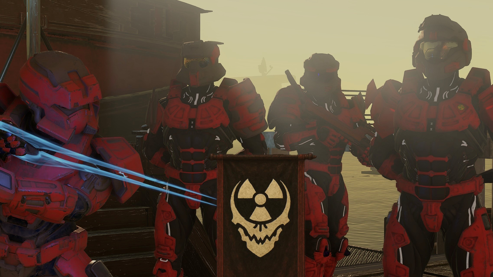
Noble cerca la ribalta di Valore. E sceglie il Mio Campione. Sfida Puffo con la sua stessa formula e applica l'arsenale della Gilda Valore. Guarda WC, poi guarda Pino, poi Guarda Stokes....poi riguarda WC e implora “ti prego vai tu” WC "vabbè ci provo". Una sfida che punta sui nuovi arrivati per portarli all'estremo delle loro prestazioni. Ma non saranno soli. Perchè dai bordi dell'arena, la panchina di ogni Gilda aiuta il proprio campione ad anticipare il nemico "Vai di laaaaaa" "Si sparano in piazzaaa" "cambia armaaaa". Fra i vari aiuti, Pino dal bordo dell’arena riesce a dare il primo e l’ultimo consiglio sbagliato a WC. Noble non riesce a tappargli la bocca che urla e consiglia “usa il BR vaiii” (mappa da combattimento ravvicinato, bruciatore della gilda valore: come un fucile a pompa...) WC ci crede, abbandona il bruciatore, impugna il BR, gira l’angolo e viene carbonizzato dallo stesso arsenale di Valore, il bruciatore, impugnato da Patrifu. Noble si chiede che ha fatto di male per meritarsi questo, guarda Swine e capisce “hai fatto perdere la Viola”. Pericolo sceglie Khan che passa da (2) a (3) e ci rimarrà per tutto il resto della serata. Una sfida impegnativa che vede Patrifu come nuova minaccia fra i mercenari. "No dai..è troppo forte viaaaa" . "Allenatevi schiappe". Valchiria punta tutto sul disorientmento comunicativo in partita mettendo Spartan (il mercenario di cristallo) "ueeeee ueeeee vuuuuuciiiiii dovestaiii". La partita finisce e Patrifu vince. Adesso a parimerito con Tigrozzo per questa modalità. Tigrozzo al bordo dell'arena, strizza gli occhi (all'apparenza per sfida ma in verità perchè non ha portato gli occhiali) "allora chi sta vincendo?". WC viene accolto a braccia aperte da Noble "dai dai non è andata male!" mentre Spartan viene letteralmente lasciato da Drius nella mappa a fine partita, perso in grida “ma è finita? Rega c’è nessuno?”.

Ultima partita, Baudo prende Noble per il Brass Elite e gli dice “mettilo via per favore”.
Viene riposto in un baule e spedito a Sangiarno: ancora ignota la capacita di domare tale artefatto.
A Noble viene attaccata una mano di LEGO.
"Adesso faccio io", Baudo si alza in cielo e plasma il terreno a suo piacimento.
Sorge una mappa del Reach. Una gloria lontana di Baudo, Pino e Copter tira gli animi dell'Armata Valore alle stelle.
È mezzanotte passata, qualcuno comincia a lavarsi i denti mentre
Tigrozzo ciclicamente (ancora) entra ed esce da Discord.
Musk con il joystick sul satellite di casa Tigrozzo si sta facendo grosse e grasse risate.
Veicoli, azioni combinate e tanta rotazione di territorio, i vecchi ricordi del Reach infiammano pure Pino,
e il tutto conclude la partita con la vittoria di Valore.
In una azione a metà partita, Noble prende il bazooka e urla verso una direzione scoprendo che il combattimento
è giocato in mezza mappa. Come quando vai alle feste e occupi la cucina minuscola
lasciando vuota la sala da pranzo enorme.
Il combattimento vede pure Puffo con il veicolo che si avvicina ai nemici, scende,
gli spara, e rientra nel veicolo. Lo utilizza come una testuggine senza saparare.
Puffo non ha ancora preso la patente di guida e questo campionato ha interrotto le sue lezioni, quindi
prova qua e la ad allenarsi in partita.
La Guerra si conclude così, a tarda notte. Dove tutte le Gilde rientrano nelle loro dimore.
Prendono atto della Pericolosità di Pericolo e delle sue sfide.
Gilda pericolosa tanto quanto pericolosa e azzardata la scelta delle squadre fatta da Noble per Valore.
Lontano, Swine rientra nella sua dimora, accende la tv e legge che la Viola ha perso contro il Como 3 a 1
"..forse la Viola fa veramente cagare".
✍ Torna a Inizio Pagina.
30 Dicembre 2025. Il Mercenario di Cristallo. L’ultima guerra vide protagonisti molti leaders,
ma fra gli assenti, uno che si pensò
si fosse addormentato senza “prendere pesci” o in questo caso “prendere side quests”. Alla cena di Natale,
poco disse sulla sua assenza mentre cercava invano di riconoscere il suo sushi ordinato.
Poi, ricevuto i regali di Copter (la sua filastrocca finiva con la parola “cicciobrufolo”)
lasciò il gruppo e si diresse verso la sua dimora. Lorath. Cancelli di ghiaccio si aprirono al suo arrivo.
Nella sua roccaforte bianca, lo attendeva il suo piano oramai cominciato da tempo.
Drius, scende i larghi gradini arrivando al sottosuolo del suo castello.
Lì, cova il suo piano, o meglio la sua creazione. Un mercenario tutto suo.
Qualcuno che avrebbe messo nella mischia dell’Agorà, lasciato alle varie estrazioni e
avrebbe lavorato segretamente per valchiria. Un Frankenstein di ghiaccio, o meglio di
cristallo e diamante pregiato. Mezzo uomo mezzo tirolese. Fermo sulla lastra di pietra aspetta di essere attivato.
Drius guarda i suoi sudditi “non abbiate paura” continua “lui ci porterà alla
gloria sabotando le altre gilde, ubbidirà solo a me”. Molti fiduciosi , ma altri preoccupati:
“Sire ma non poteva scegliere un qualsiasi altro materiale più resistente del cristallo? Non
ha paura che finisca in mille pezzi?”, Drius tirò fuori la paperella dalla sua tasca e la strizzò
*quack. 4 guardie portarono via 2 sudditi presi nella mischia per essere poi decapitati
(uno di questi sudditi era il contabile di valchiria: grande perdita). Nessuno contraddice
Drius che oramai si esprime con la paperella quando é stufo di rispondere e punisce in modo
casuale il suo esercito. Drius guarda ancora la sua creazione appoggiando tutte e due le mani
sulla lastra di pietra dove giace. “si..” sussurra “tu mi porterai alla gloria…creato dalle
più pregiate pietre di cristallo...belle...resistenti...forse.”
31 dicembre 2025. Capodanno a Malthor. Tradizione voleva che la dimora di Bastione fosse
usata per i festeggiamenti di fine anno. Copter contrario come ogni anno (servizi di pulizie
sono carissimi a Malthor) scaglia un vecchio DVD di Steven Seagal contro Flying WC “che cazzo
inviti la gente, siamo in guerra!!” . WC sul posto “bisogna tenersi stretti gli amici e ancora
più stretti i nemici signore”. Sootz non era stato lì a guardare perché sarebbe finito a
lavorare ad altre campagne marketing sotto tortura quindi aveva deciso di festeggiare altrove
in qualche taverna lontano da quel teatrino.
Copter prese le sue cose (…una racchetta da Ping pong, 3 pennarelli e 1 tovagliolo di stoffa)
e sparì in una delle 100 stanze della dimora per tutta la serata. Karmic rispose “el Classicoooo”
alla notizia dell’assenza di Copter. Mentre le gilde arrivavano ad una ad una, Drius e Valchiria
varcarono la soglia per ultimi. Infatti, Drius aveva scaricato dalla sua carovana in corsa,
la sua creatura in Agorà prima di arrivare alla festa. Il suo piano era cominciato.
La serata inizia con la tv accesa dove NobleNews conclude che “Cose Strane é bello” e invita
tutti a parlarne per capire se é piaciuto o no. I sudditi di Sciabola non fanno in tempo a
far indossare a Karmic delle cuffie di cemento armato che parte “mahhh!!! non proprio insomma..”
seguito da Stokes già ubriaco mette in play una registrazione di chatGPT, mentre da Cobra
partono altri colpi ampliati da Bastione. Il delirio. Da passarsi i piatti, gli eserciti
cominciano a tirarsi i coltelli. Glimpse e Swine sono gli unici a gustarsi la cena perché,
vedendo passare in tv Noble con un sorriso a 36 denti, sapevano che avrebbe portato solo follia.
P.S. Noble assente perché l’inverno ha ghiacciato il deserto di Sangiarno ed ha rinunciato a imbottigliarsi nel traffico.
La serata va avanti con dolci e leccornie di ogni tipo, all’apparente zuccherosa calma,
una ultima decisione fu la firma della guerra ad avvenire.
Tre parole. Giochi da Tavolo. Con canti melodici e medievali, il gioco di indovinare gli inni
nazionali delle Gilde, glimpse e stokes, aiutati da chatGPT riescono a vincere sempre. Mentre
alle domande su animali strani, Giacomo viene aggiudicato come miglior nome per un ippopotamo.
Ma al gioco con impostori in partita, due leader si ritrovano impostori senza saperlo. Swine e
Colt. Gli impostori cercando di nascondersi alle domande dei partecipanti. Al momento di dichiarare
un sinonimo di “Sci”, Colt spara “Schumacher”, Swine sbotta sul suo alleato impostore ma
inconsapevole che sia proprio un impostore “sei un coglione che cazzo diciii sei un impostoreeee”.
C’è scompiglio ma alla fine Colt si rivela un impostore. Swine é devastato: il suo alleato ha
sparato una puttanata, facendo saltare la sua copertura e con il senno di poi pure quella di Swine
(che alla fine fu scoperto lo stesso). La partita finisce e Swine é delirante su Colt
“ma come cazzo ti é venuto in mente ma percheee” Colt non ne vuole sapere “gnamo non era così
palese!! Basta!!” La discussione va avanti , e la serata si dissolve in chiacchiere.
Gilde tornano nei loro regni , due di loro, molto indignate.
6 Gennaio 2026. Strane Scomparse e Nuove Apparizioni. Mattinata gelida invernale in Agorà
che nel bel mezzo di qualche risata di un gruppo di mercenari si accorgono fra di loro
ce ne sta uno nuovo. Il mercenario di cristallo. Apparso dal nulla. "Oh te?".
Salve io sono "Spartan". E tutti "se vabbè". E continua "cosa fate di bello?".
Alcuni rispondono sempre dubbiosi "partecipiamo ad un campionato su halo infinite".
Cosa è halo infinite risponde Spartan. SUS. Molti mercenari strizzano gli occhi,
qualcosa non quadra. Chi è costui, perchè attaccata alla sua armatura c'è
scritto "proprietà di Drius"?. Molti non se la bevono "ecco, sto quà non
è un mercenario ma un leader. Le gilde ci fregano e mandano spie". Drius aveva calcolato tutto.
Tutto tranne insegnare a Spartan a giocare ad halo infinite. Pessima strategia di Valchiria.
Nella stessa Agorà arriva un mercenario di lunga data, odiato da tutti per la sua
interminabile assenza e per le sue offese per qualsiasi videogioco. Arriva Patrifu.
Dopo anni passati in Side Quests leggendarie (ma molto cicciobrufolose) con Drius, quindi esclama
“dove sta quella canaglia di Drius?” Noble: “non lo vediamo da tanto” Patrifu “ma come?”.
All'arrivo di Patrifu, molti lo riconoscono, tra i quali Karmic e alla sua presenza
lo mura con un secco: “ti devi riguadagnare il rispetto per la tua assenza ingiustificata.
Ah già e vaffanculo”.
Vicino a questo ritrovo, ci sono alcune madri che affiggono i loro volantini. Volantini di persone disperse.
Esattamente dei loro figli scomparsi. “DeadRick: Missing” , “Apocal: dove sei?”.
Si aggira forse un assassino in Agorà? Ad ogni scomparsa una firma: “Dr.”
Non si crea troppo scompiglio fra i mercenari e leaders perché sono persone che non
hanno minimamente partecipato ad un cazzo (ne detto un cazzo di niente), ma un
sottile velo di paura si posa sulle spalle di tutti i giocatori del campionato.
“Cioè adesso se non giochi, ti ammazzano?” Noble: “chissà, meglio continuare a giocare...”
e ancora “..bravo ragazzo DeadRick. Sebbene, la settimana scorsa ha deciso di
bruciare tutte le newsletter di questo campionato” e poi “fumo bianco dal suo camino di casa avrà
sicuramente fatto arrabbiare qualcuno, sappiamo tutti che le newsletter sono fatte
di una carta pregiata” (con la quale molti ci si puliscono il culo).
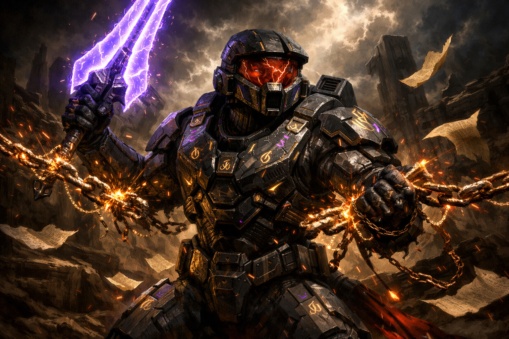
7 Gennaio 2026. Si va in scena.
A Maltorh, Copter si rompe il cazzo del bonismo di WC e decide di entrare in partita.
“Guerra cazzo, Fanculo Romo…..volevo dire Flying WC, e tutto sto bonismo di merda.”
WC "si calmi signore è solo un gioco".
Colt invece riesce a trovare uno slot di 15’ alla vecchia taverna de “Cazzo che Ridere” e
parte con i suoi fogli scritti all’ultimo secondo: prendendo per il culo tutte le Gilde.
La sua carriera da standup comedian é stata più volte interrotta dal riparare i
riscaldamenti per le varie dimore delle Gilde (questo lavoro è la sola entrata
economica della Gilda Cobra) e nel tempo libero prova a non abbandonare
il suo sogno (e a scrivere le sue quattro cagate). Sale sul palco, e dice apparentemente
[spiegato più avanti] due cazzate, molti applausi ma qualche pomodoro
tirato in faccia, si ritiene comunque soddisfatto
(ha preso più complimenti di quando gioca...ci voleva poco).
Mentre Colt è sul palco coperto di applausi, uno strano caldaista con
dei grossi baffi arriva alla dimora di Ade dove lo accoglie Swine con “dica”.
“C’è un problema al suo impianto idroelettrico” ,
“ma io non ho un impianto idroelettrico”,
“senta é lei il caldaista o sono io?”.
Swine “entri faccia pure”.
Swine si allontana poi ci pensa un attimo ”ma i caldaisti
non riparano gli impianti idroelettrici”
“Heyyyyy”, gira l’angolo corre verso la centralina di impianti e vicino al quadro elettrico
ritrova solo dei baffi finti. Chi era quel maledetto? Cosa avrà fatto alla
mia dimora? Swine si addormenta pieno di ansie.
8 gennaio 2026, 21:00. La bottega del Fato.
Oramai l'annuncio della Guerra è alle porte. Ma ancora nessun rumors nessuna notizia.
Fra i Mercenari che ronzano nell'Agorà, ce n'è uno che, pieno di soldi cerca di raggiungere
al più presto il centro scommesse. È Glimpse of Nature.
Nella sua corsa sfrenata, si ferma bruscamente incuriosito da un negozio che non aveva mai visto prima d'ora.
Legge "La Bottega Del Fato". Glimpse, assiduo scommettitore, ci va a nozze.
Entra in Bottega. Vari artefatti lo incantano. C'è la pizza Bibobio,
la sedia di JoeMoo e l'ostrica di Flying WC.
Fra tutte, il suo sguardo si posa su un mazzo di carte. Reduce dell'evento di BoxStone
dove la scampò per un soffio contro KarmicScroll, allunga la mano sussurrando "che bellooooo".
La sua mano viene bacchettata da una figura misteriosa apparentemente proprietario della Bottega.
"Giù le mani Mr. Glimpse". E continua "O forse lei...vuole sfidare il fato?".
Glimpse: "sò venuto apposta".
Le carte vengono messe sulla tavola, e viene chiesto a Glimpse di scegliere una ad una.
Vengono scoperte e le squadre della Guerra cominciano a formarsi.
Fra le tante, Glimpse nota che la carta di Copter non è presente "mmmh interessante".
Scoprimmo più tardi che Copter aveva pagato il proprietario della Bottega
per togliere la sua carta e diventare El Classico della serata (quindi non pervenuto senza dare spiegazione).
Glimpse nota una cosa guardando le carte. Tutte le puttanate sparate alla stand up comedy di Colt
si stanno avverando (Perchè? Il fato lo vuole?).
La disposizione è finita. Il proprietario guarda Glimpse e dice "Sei pronto Ciaba?".
Glimpse risponde: "si....hey aspetta come fai a sapere..."
Le carte fluttuano nell'aria, tutto diventa luce e le menti dei giocatori
finiscono sul campo di battaglia. Cobra contro Ade, side quest. La guerra ha finalmente inizio.

8 gennaio 2026, 22:00. Niente Vasellina per Cobra.
Partita 1: Re Della Collina, l'incubo di Ade.
Swine cade in follia, al "prendete i veicoli" prende quello senza torretta entrando
nella collina e morendo istantaneamente sotto i colpi di Cobra.
Stokes e Noble diventano la coppia dei ritardati.
Al comando "Vai!" di Noble alla torretta, Stokes (ubriaco) urla "Si vola diohane" e
accelera forzatamente investendo un inerme Patrifu.
Primo secondo di Patrifu nel Campionato: morto investito dal suo stesso team.
Alla velocità della luce, Cobra conquista la prima collina.
Fucili di precisione, Bazooka, invisibilità hanno tutto (perfino il cervello):
stanno letteralmente seppellendo Ade.
Spartan usa la sua tecnica peggiore, comincia a parlare in napoletano contro Ade.
Flying WC viene atterrito come Unidici in Stranger Things quando gli puntano addosso
i megafoni di suono. "Baaaasta fatelo tacereeee" "UeUeeeee WCCCC commaaaastaiii??".
Non meglio va per Swine. È in un angolo,
ormai perso nella follia, si chiama la "Collinafobia". Soltanto un paziente al mondo: SensibleSwine.
Allora Ade è costretto a ripiegare ed ascoltare un altro Leader (purtroppo) il dislessico Noble.
Stavolta Noble però riesce a mettere due parole in fila, esse portano velocemente alla sconfitta di Ade.
"Bisogna aspettare i veicoli sennò non si può vincere".
Noble si mette ad osservare la piattaforma del Warthog. Passa 1 minuto, 2 minuti.
A questo punto, Stokes, confuso e ubriaco, si mette a guardare anche lui la piattaforma
"oh ha detto di aspettare...si aspetta". A loro si uniscono 1 poi 2 poi 3 mercenari...
insomma tutto il team. Soltanto Patrifu e Puffo che corrono verso il nemico si ritrovano
subito sotto il piombo di Cobra. Puffo si accorge cadendo al suolo che l'intero team di Ade
sta letteralmente guardando una piattaforma da ore sotto la guida di Noble: "ancora qualche secondo e ci siamo..."
2 colline, 3 colline. 3 a 0. Partita perfetta di Cobra. Proprio Cobra che nella stessa
mappa perse da Pericolo di Puffo, ora si ritrova vincitore. In modo perfetto.
Colt immerge i suoi coglioni in acqua gelida, mentre guarda Puffo con goduria.
Partita 2. L'incubo della serata, una nuova mappa.
Lunga e larga come Terranuova Bracciolini, occupata non da 5 mila abitanti
ma da soli 16 giocatori. Inoltre, immaginatevi di avere cemento ai piedi.
Eh sì, Delta Massacro: nessuno scatto. Ade gioca la strategia più infame,
quella per far saltare i nervi alla gente. Un piano che solo Ade poteva avere.
"Ecco un veicolo lo vedo!!" i giocatori impiegano 5 minuti solo per fare pochi metri.
Le urla dai corridoi di Baudo si fanno sentire "ma che è sta merda di mappa!!!"
Karmic continua "milioni di modalità e si sceglie sto schifo!!!"
Inconfondibile: il piano di Ade ha funzionato.
La gente sta perdendo la testa. Non vuole aspettare, vuole azione, subito.
Vuole cose vicine "hic et nunc". Ma Swine gioca proprio su questo e il piano funziona:
"eh cazzi vostri oh, camminate coglioni!".
In questa lunga mappa, la connessione di Ifrid va a farsi benedire e
diventa osservatore per il resto della guerra.
Altro che Ultra Instinct, qui ci vuole un ultra network (e non della vodafone per carità del signore).
Colt dopo una marcia lunga 18km prende il bazooka e chiede aiuto ai suoi compagni.
"Dai ho il bazooka qualcuno mi porti in un veicolo"
Niente da fare, il team di Cobra ha iniziato il rituale che sa fare meglio:
infamare Colt (e anche la mappa stavolta).
"Cazzo vuoi te e il tuo bazooka di merda sta mappa fa schifo, fai schifo".
Le frasi vengono silenziate da Ade che arriva alla carica con 2-3 veicoli.
Swine si è ripreso e comanda la sua Gilda in "coppie di due dai!” dettando nome per nome.
Togliendo finalmente dalla leadership il dislessico Noble.
Partita 3. Smorzare gli animi (?).
Colt allora ci prova. Usa quello che ha messo in pratica nella stand up comedy.
Usa il "comportamento chill". "Dai amici facciamo una sketch per addolcire gli animi,
è solo un gioco. Va bene?" Nessuna risposta. "...vi va bene?". Nessuna risposta.
Si parte. Le Gilde si ritrovano sui Gungoose in blockfort e...niente, ripartono le offese.
"Colt di merda che hai messo??". "Dai con sta roba??". Colt pensa “eh allora porca mad...”.
Pure Clavuss, considerato molto spiccio "pena poco e gioca",
prende le parti di Karmic insieme a Tigrozzo sabotando la leadership di Colt.
Una disfatta del morale di Cobra.
Ifrid ritorna osservatore di Cobra e continua a farsi grasse e grosse risate
sentendo le offese su Colt. Questa modalità, inspiegabilmente,
porta ancora una volta ai ranghi più alti il buon vecchio Pino. Non c'è nulla da fare:
è la sua modalità. Sfreccia, si posiziona, sa dove andare. Una iena.
Swine "minchia facesse così pure nelle partite più serie". Fra vari mercenari e leader
che si cappottano da soli, la partita va avanti in modo disconnesso, proprio come una sketch.
Alla fine Ade ha la meglio ma senza sapere il perchè (ripeto) proprio come una vera partita Sketch,
sebbene Pino si sta scolando 3 bottiglie di champagne da solo per la vittoria
(secondo lui, e lui soltanto: grazie a lui).
Partita 4. E allora Massacro. "Basta ste robe", "Ma che si può passare a giocare
a ste modalità per 1h??". "Colt i’merda!!". Colt: "E ALLORA MASSACRO".
E Swine: "guarda che non sta a voi a decidere". Intera Gilda Cobra: "ah".
Swine continua: "comunque va bene dai massacro sia".
Si torna agli albori del Campionato. Jurassic Park. Rambaudo conosce a memoria
questa mappa dove strappò una vittoria a Valchiria. Colt riprende le redini della Gilda e
compatti affrontano Ade per l'ultima volta. Fucili di precisione , scambio di veicoli.
Non c'è pace. Non c'è attesa in nulla. Proprio come voleva Cobra. Noble prende il warthog e
nota subito il suo abile guidatore, WC. "Eh sì è proprio della Gilda Bastione"
(non come Stokes che investe gente del suo stesso team)
Colt incita gli animi "dai forza si sono accerchiatiiii".
Colt corre, poi si ferma. Non sente nessuno. La gente è letteralmente sparpagliata,
stanca, offesa. Insomma di tutto. Sul finale della partita,
mentre Cobra marcia su Ade, Swine usa la stessa frase di Noble
“bisogna prendere i veicoli e si é vinto!” Noble
“quando lo dicevo io i veicoli arrivavano in orario”
Swine “taci”. Per Swine infatti i veicoli apparirono istantaneamente.
Allora prende la rincorsa alla guida di un warthog con Noble alla torretta:
trasformano l’esercito di Cobra in birilli. Strike. Fine partita.
Glimpse torna in se e si ricorda che questa partita è stata decisa alla Bottega del Fato.
"Che Fregatura!!!" quindi torna sul posto per chiedere il rimborso, ma la Bottega non c'era più.
Sarà stato proprio il fato o la decisione di Copter di fare El Classico all’ultimo momento ad aver
portato gli animi a questi estremi rugginosi? Mercenari e Leaders di Cobra si sparpagliano
infuriati "madonna che merda di Guerra".
Karmic esce di scena portandosi via 3 sanpietrini dell’Agora.
Tigrozzo e Ifrid si allontanano ridendo perché alla fine trovano piacere nell'offendere Colt
(li accomuna molto questa cosa).
Stokes, perennemente ubriaco prova a dare un bacio a Glimpse che schiva dicendo "heyyy sta bono"
e viene riportato al QuiviQuivi.
Noble guarda WC allontanarsi "non male quel guidatore.."
Colt-Bane torna a casa intatto ma scocciato, pensieroso di trovare un modo al fine di prendere
meno offese e rafforzare gli animi. Alla sua uscita d'Agorà, cade dalla sua tasca
qualcosa che viene raccolto da Sootz. Una carta della Bottega. "ah ma allora...."
Altrove, Skate guarda Swine che si allontana e pensa al suo ritorno in Ade, da definirsi il quando.
Swine torna a casa felice, e trova un bigliettino alla porta
"questa volta non ti ho fatto saltare la corrente", firmato "PK".
"...Ma c'è pure Paperinik in sto campionato?"
✍ Torna a Inizio Pagina.
20 Dicembre 2025. Nebbia... Nebbia .... e Guazza. L’Agorà ne è invasa. Viaggiatori,
Mercanti e Mercenari a zonzo camminano in cerca di arsenale e motivo di battaglia.
Perfino i ricordi della Notte Pericolosa, sembrano oramai un ricordo lontano perso anch’esso nel banco di nebbia.
Volantini, scommesse di quella notte se ne è perso completamente traccia.
Un monito a dimenticare il passato e guardare al futuro. Questo pensiero viene interrotto
da un grande trambusto che scuote mercanti e mercenari e impugnano armi -- completamente
ignari di quello che sta per accadere. Si sentono passi che piano piano “scompaiono” nel buio.
“Hey!!!” dalla nebbia “Qualcuno ha affisso qualcosa”. Accorrono al muro degli annunci,
“Domani: Risultati Provvisori” scrive una pergamena giallo sbiadito mezza strappata.
Mercenari sono in sobbuglio, alcuni preoccupati, altri curiosi,
mentre i vari messaggeri delle Gilde accorrono dai loro Leaders per portare questa insolita notizia.
21 Dicembre 2025. Santa in Town. Un grande chiasso fra le strade sveglia
l’Agorà che vede una mandra di Mercenari correre al muro degli annunci.
“Eccoli!”, qualcuno eclama. Risultati appesi vennero affissi nella notte, ma da chi?
Per ogni risultato pure una nota. Molti, ancora non classificati vedono grossi e rossi
“NA” quasi d’appertutto. Ad uno ad uno i mercenari prendono i loro risultati provssisori
e li custodiscono gelosamente. Tranne alcuni. Pino’s Carrot, sale su un palco ed esclama
“Allora gente guardate qua”. Risultati di tutto rispetto per Pino che si vede classificato
praticamente dappertutto con voti altissimi. A nulla è servita la nota che spiega a
Pino che le classifiche provvisorie sono composte da poche anime, facile quindi prendere
voti alti, ma lui è già al settimo cielo, meritato per aver partecipato tanto
fino ad oggi a questo campionato. Tigrozzo invece, incontrastato il titolo di Campione con
una vittoria (contro “Pino il cecchino” in 2m2) ed chiede con un inglese tutto suo “Dov’è
il signor Colt in questi Auardes eh? Non lo vedo e voi?”. Il richiamo di sfida da parte di
un Mercenario verso un Leader è molto sfrontata quanto divertente fra i Mercenari (che offendono sempre Colt).

In Agorà tutti questi annunci sono finiti in tarallucci e vino. Ifrid silenzioso
ha speso 20 mele per fotocopiare i suoi risultati e affiggerli per tutte le strade,
insieme alla distribuzione di un altro insolito annuncio [continua più avanti]. Per
questi risultati provvisori, corre una aria diversa fra i Leaders. Ai cancelli delle
dimore di Sangiarno, Lorath, Bucinor, Montarcos, Levania, Malthor, Pennarya, Gicontra
vengono affissi i risultati dei Leaders. Messaggeri portano i risultati ai loro padroni.
Sileziosi consultato i risultati. Bastione, Pericolo, Aquila e Valore vengono classificate.
“Ci rifaremo” esclama Copter guardando i risultati e i suoi fedelissimi Sootz and Flying WC.
A Montarcos e a Pennarya si valuta nuove strategie per riuscire a distaccare l’una dall’altra.
A Sangiarno, gran festa con Valore che vede provvisoriamente la prima posizione.
Noble imbastisce una festa improvvisata: birra a volontà. Stokes riesce ad unirsi
(non avendo mai giocato con Valore) solo per ubriacarsi a merda. Alla festa si uniscono
pure Karmic che ha partecipato a molte partite di Valore, e Colt per congratularsi (falsamente)
che al suo arrivo viene ancora una volta offeso da tutti per la sua Gilda immeritata....
sebbene Cobra non si sia nemmeno classificata. Karmic si avvicina al bancone dove trova
Stokes completamente andato dall’alcool (la serata è soltanto iniziata da 15 minuti)
che cerca con il suo sguardo il barista per una nuova bevuta. La sua faccia è stampata
sul bancone, il barista non arriverà mai. Karmic guarda Stokes in condizioni pietose ma
ha il ricordo delle loro partite epiche passate. “Guarda che adesso il campionato si fa serio
ci sarai al mio fianco?”. Stokes riesce solo a rispondere parole senza senso fra le quali
“Hyrox 2026?” e Karmic è costretto a lasciare la festa innervosito prima di riempirlo
di botte. Colt si avvicina a Noble e fra le chiacchere viene mostrato la campagna marketing
di Cobra mai avviata. Parliamoci chiaro, Cobra non aveva gli stessi danari di Bastione per il
marketing. La campagna fatta con Windows 95 non poteva compete con quella Gen-AI di Bastione,
ma aveva un suo appeal retro. Sfogliando le slides, Colt raccontava che aveva pagato un mercenario
amico di lunga data, fuori dal tempo, che sarebbe dovuto unirsi a Cobra. Ma all’ultimo,
questo mercenario fu inseguito da una banda di cinesi incazzati per un inglese mal scritto
e non riuscì a presentarsi allo scontro. Mentre Colt sfogliava le slides, prometteva
a Noble e a se stesso il ritorno di questo mercenario un giorno (anche perchè aveva
speso delle mele che non sarebbero più tornate). E questo mercenario avrebbe portato
gloria a Cobra. Noble era brillo e ascoltando mezze parole di Colt. Lo lascia fantasticare
sul mercenario e si reca dall’ennesimo carico di birra in arrivo. “Vai vai lasciatelo qui
che Stokes ha finito altri 5L da solo”. Mentre Noble paga il viandante che ha portato il
carico di birra si accorge di conoscerlo. Anche lui una volta era un mercenario di guerra
ma giocava su altre piattaforme (come la Playstation di merda). Ad ogni modo porge i saluti
invitandolo ad unirsi al Campionato. Noble lo invita “Guarda che ci si diverte, basta un Xbox
o un PC poi il gioco è pure gratis... Xbox penso con 100 mele te la puoi cav...” ma
viene interrotto “Ma che Xbox!! Ho un PC pagato trilioni di mele cazzo uso quello...”
Conversazione viene lasciata a metà perchè Noble non può fare a meno
di notare Stokes con altre 5 bottiglie in mano sfilate dall’ultimo carico appena arrivato “Bastaaaa”.
Preso Stokes per un orecchio, si rigira verso il viandante ma aveva appena lasciato
le porte della dimora di Valore scomparendo nel deserto di Sangiarno.
Altrove, le altre Gilde leggono ancora attentamente i motivi per non essere state
classificate mentre a Gicontra.....arriva un secondo messaggero... con un altro annuncio.
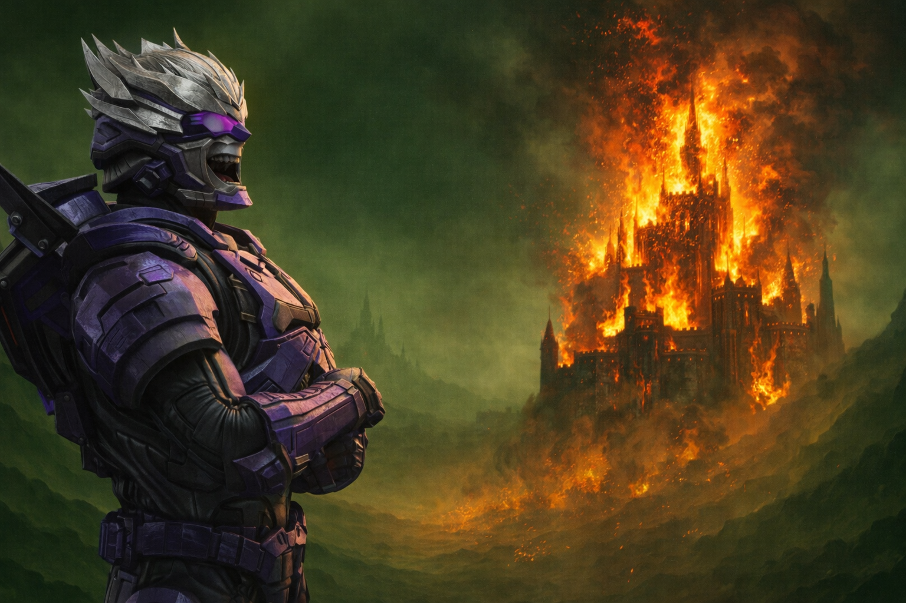
23 Dicembre 2025, Giorno. Una Fake News. A Gicontra il messaggero “Padrone guardaaaa”,
SensibleSwine osserva pietrificato il secondo annuncio. Una fake news creata da Ifrid
e stampata per le strade, distribuita a tutte le Gilde per piazzare un pò di caos
qua e là. L’annuncio dice “Swine è finalmente rientrato nella sua dimora e
invita” in caratteri cubitali “a sue spese” continua “mercenari e leaders di ogni Gilda
per un ritrovo a Gicontra, pizza fatta in casa. Dimenticatevi di Bastione e della proposta
del ritrovo natalizio a Gingéria”. Swine non sa che fare, a parte uccidere Ifrid.
Non è sicuro che sia la cosa migliore sia dire a tutti “uno scherzo di Ifrid”.
Qualcuno potrebbe prenderla come debolezza di Ade e portarla a diventare lo scherno di tutti.
Mentre pensa, arriva una lettera di Tigrozzo con scritto “margherita per me se non è
troppo tardi”. E poi una altra di Karmic “salamino, porcini e insalata iceberg”.
E ancora una di Glimpse “aglione come la fa Bibobio” (ancora non pervenuto al campionato).
La voce si è sparsa. La giornata scorre. Swine riceve una lettera dopo l’altra.
È alle strette con tempo e idee. In un momento temporaneo di follia arriva ad una
conclusione.
“Non possono fare una cena qui, se ‘qui’ non esiste”. Afferra un mercenario
e lo scaraventa nella foresta vicina “portami della legna per il forno”. La sera arriva.
La legna è stata raccolta, ma Swine la ha distribuita tutta intorno alla sua dimora.
I mercenari sono confusi ma non preoccupati, non ancora. Non è la prima volta che Swine
fa azioni letteralmente strane e pensavano che volesse cucinare le pizze all’aperto. Insieme
alla legna, tanta paglia. Swine impugna una torcia di fuoco e i mercenari non fanno in tempo
a chiedere “Signore a cosa serve la paglia insieme alla legna..” che Swine getta la torcia
nella paglia dando fuoco letteralmente a tutto. Alla legna, alla paglia, alla dimora di Ade.
I mercenari sono pietrificati, increduli. Alcuni svengono, altri vomitano. Mercenari
terrorizzati non riescono a parlare, non capiscono e non riescono a domandare niente a Swine,
preoccupati di una possibile altra azione “smodata”. Dietro la fila di mercenari che guarda
letteralmente andare a fuoco la loro dimora, di Ade. In lontananza arrivano tutte le Gilde per
la cena a base di pizza. Guardando le fiamme che divampano alcuni mercenari con l’acquolina in bocca
“si fa all’aperto, romantico!” ma man mano che tutti si avvicinano, si ritrovano l’intero esercito
di Ade fuori dalla dimora in fiamme. “Che è successo???” fra le grida “E le pizze????”
nessuna risposta, ma Swine in false lacrime si avvicina agli invitati e dice “purtroppo un
incendio a distrutto la dimora, siamo dispiaciuti”. Accorrono tutti ad aiutare a spegnere
l’incendio, fino a spegnere l’ultima fiamma. Bastione non avendo cancellato la prenotazione
a Gingéria propone di spostare la cena come da programma al ristorante di pesce.
A Swine e ad Ade come consolazione, la cena verrà pagate – posticipati i lavori per
rimettere in piedi la dimora di Ade. Mentre tutti si rimettono in marcia verso il ristorante,
fra i mercenari di Ade sorgono i primi dubbi sulla leadership a caso di Swine e sulle sue azioni
completamente sprovvedute. Swine invece, nelle ultime file, posa il suo sguardo di un attento
ma confuso Ifrid. La faccia di Swine scopre un piccolo sorriso e sussurra “non ce l’hai fatta
coglione”. Mentre Ifrid pensò “questo è pazzo”.
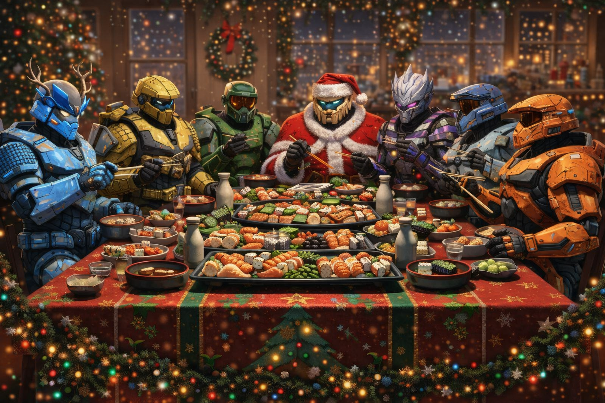
23 Dicembre 2025, Notte. La Cena (non a base di pizza). A Gingéria, una grande tavolata
accoglie le Gilde che siedono le une di fronte alle altre senza (apparente) sfida. Come usanza,
l’intero menù viene ordinato 2 volte. E come usanza, Drius non avrà idea di cosa ha ordinato,
saranno ancora una volta gli altri a indicarglielo all’arrivo del cibo (e lui a negare di averlo ordinato).
Mercenari e leaders si narrano a vicenda storie passate e viaggi nel multiverso della forgia.
In particolare, ad un lato della tavolata, la conversazione si è incentrata su un argomento bizzarro.
Appena Stokes concluse il suo racconto riguardo al fallimento nell’’ottenere una carta verde
(oggetto prezioso nel multiverso), la conversazione si incentra su un rituale particolare.
Esistono luoghi nel multiverso della forgia dove sconti al supermercato venivano anticipati
con..l’ecografia scrotale. Un rituale che poteva pure avere grande vantaggio nel prevedere
meteo, febbre e tanto altro. Per esempio usato pure da guerrieri per predire esiti di battaglie
non ancora avvenute. Un pò come la time stone di Avengers, solo che stavolta le stone erano due
e dovevano essere palpeggiate bene. Mercenari si avvicinano al lato del tavolo per ascoltare
meglio questo rituale. “…e me le ha prese come due sfere di cristallo” continua Stokes “faceva
male, ma ho capito i punti deboli di Puffo in quella partita, solo così gli sono spuntato alle
sue spalle”. Glimpse e Ifrid sono letteralmente assuefatti da questa storia incredibile.
Prendono appunti come studenti e altri si uniscono a loro. Più avanti al tavolo un Karmic sta
raccontando la storia della nascita di Sciabola a Clavuss che in silenzio ascolta attentamente.
Questa interazione passiva di Clavuss confonde Karmic che conclude la depressione di Clavuss e
una sua infinita tristezza Leopardiana.
Non bastò il “Ma ti sto ascoltando dio santo” di Clavuss
a far cambiare idea a Karmic che si volta di spalle e si unisce alla conversazione del campionato
con Noble, Swine, Tigrozzo e Colt in piena discussione. Si parla di alcuni momenti epici passati
insieme e del futuro del Campionato. Le partite si faranno avvincenti e molto più dure da ora in
poi. Molti si voglio accaparrare i mercenari migliori, allo stesso tempo alcuni mercenari
cominciano a dichiarare le loro preferenze. Tigrozzo “io oramai gioco per Pericolo!!”, a Swine
scende una lacrimuccia, poi “Io con Ade non ci gioco più” esordisce Pino, a Swine scende una...
aspetta un secondo. Pino non ha mai giocato per Ade, e non ci vorrà mai giocare. Notizia fantastica,
2 bottiglie di champagne vengono ordinate. Mentre Karmic ha un piano tutto suo per prendersi i
mercenari migliori. La Scroll (non Rocco) Academy. Un piccolo avamposto nelle terre di Bucinor
dove Mercenari potranno apprendere skills da leaders per avere “una marcia in più”. C’è una
clausola in questo addestramento. L’iscrizione comporta l’obbligatoria partecipazione ad un
numero non troppo definito di partite con Sciabola (il notaio di sciabola non è mai stato il
loro pezzo forte). Karmic si strofina le mani slinguazzando perché le iscrizioni sono andate
a ruba proprio 24h fa. La combo delle pagelle di risultati provvisori e il confronto in agorà
di molti mercenari ha permesso a Karmic di navigare questo sentimento di incertezza e far firmare
almeno ad Ifrid qualche allenamento. “Boh senti io mi so iscritto poi si vedrà...
lo sapevi c'era la scivolata in sto gioco?” disse Ifrid.
Parlando di partite impegnative, si guarda ad una guerra futura dove Puffo e Drius dovranno
affrontare Swine e Karmic. Mentre Swine in silenzio mangia la cena offerta (e degusta lo champagne),
Tigrozzo, oramai amante “del Pericolo”, entra a gamba tesa nella conversazione indicando Puffo come
“best Spartan ever”. Gli animi si incendiano, “é solo un camper!!”, altri deviano il discorso
“no quello é Colt”, altri prendono tutt’altra direzione offendendo Drius “torna a giocare a
contrattacco 2 pivello”, ma Drius é ipnotizzato dal suo piatto del quale non ne ha idea di
cosa sia e se sia stato lui a ordinarlo. Volano sedie, pugnali, giavellotti e qualche gallina.
Folla intorno al tavolo viene divisa a stento fino a che altro cibo arriva, e tornato tutti a mangiare beatamente.
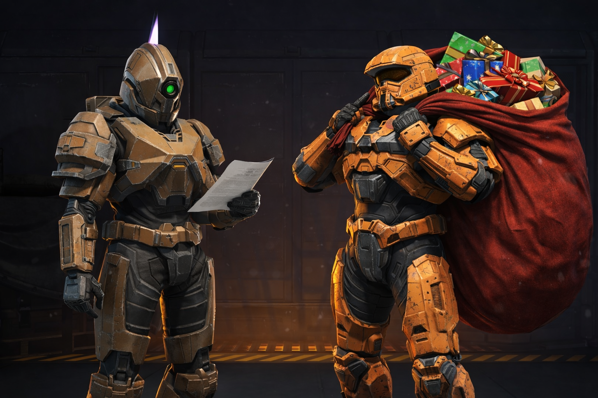
Una cena difficile. Non é sempre stato facile mettere tutte le Gilde allo stesso tavolo,
tantomeno questa volta. Sebbene ci sia pure Bastione al tavolo, manca il suo leader principale:
Hernicopter. Il quale invia una lettera al ristorante chiedendo di dire al tavolo delle Gilde
di attenderlo fuori nel parcheggio. Finita la cena, le Gilde si avviano al luogo prestabilito,
perfino Flying WC di Bastione non ha capito le intenzioni di Copter (ma almeno WC si era presentato alla cena).
Una volta che tutti gli arrivarono al parcheggio, Copter spunta da dietro un cespuglio come
se avesse passato tutta la sera li. “Allora adesso faremo un gioco” prende alla sprovvista un
pò tutti. “Prenderete un premio se indovinerete le filastrocche riadattate da me”.
Le Gilde si mettono a cerchio e molti si accorgono che c’è pure JoeMoo “oh e te?”. Non è ancora
entrato a far parte del campionato tantomeno di alcuna Gilda, ma ha sfruttato la massa di giocatori
per sedersi pure lui al tavolo e mangiare qualcosa. Il gioco inizia e Copter comincia “se ni mondo ci
fosse….” Facile questa, Tigrozzo prende il primo premio. E poi “Aaaaaeeeeeaaaaaaaooooeeeee”,
“ah ma é il Niccolò Calvi” interrompe Clavuss, premio pure per lui. Poi ancora “2 milioni di
euro cash mi devi dare….”, Karmic “Alessandro Orlando!!”. Insomma tutti riescono a prendere un
premio, tranne uno. Tranne JoeMoo. Copter sfodera filastrocche di riserva, ma alla trentesima
filastrocca (avendo finito la distribuzione dei premi per tutti alla undicesima)
si avvicina a JoeMoo e gli scaraventa il suo premio “Toh!!”.
Tutti questi premi perché? É una altra strategia di Marketing di Bastione ? Quale scopo
secondario voleva ottenere bastione? …tutte domande dello stesso Bastione Flying WC che non
ha capito le gesta del suo leader.
La serata finisce esattamente come deve finire. Le Gilde si ritirano nei loro territori.
Stokes torna dal QuiviQuivi, seguito da alcuni mentre racconta a Ifrid di come portare le
scommesse ad un livello digitale chiamato “investimenti”. Karmic, Noble e Clavuss fanno visita
a Bibobio per consegnarli il premio di Bastione, e poi tutti a nanna. Finisce così, Il ritrovo Natalizio.
✍ Torna a Inizio Pagina.
9 Dicembre 2025. Preambolo: la chiamata di Pericolo.
L’inverno si è espanso da Lorath, dimora di Valchiria,
ed ha invaso il multiverso e L’Agorà. Innevata, nasconde sul bianco
suolo gli ultimi volantini della campagna di marketing Bastione oramai mezzi consumati
dal tempo e dal gelo. Ci sono anche qualche biglietto del centro scommesse puntando sulla
vittoria di Bastione. Strappati, portano con sé rancore di molti.
Viandanti passeggiano ad una ora tarda del giorno, fra i quali, uno in particolare
venuto da Montarcos si ferma e raccoglie un volantino di bastione. Lo legge, sorride;
poi, lo lascia cadere a terra. Fu un gran giorno quello. Le suole piene di sangue nemico
lasciano sagome rosse in una distesa innevata bianco latte.
A passi decisi, si avvicina ad un muro di annunci. Sbiadito,
il grande poster di Bastione, affisso con la scritta “la migliore difesa è
l’attacco” occupa ancora gran parte del muro. La strana figura mette la mano
destra in tasca, estrae il suo annuncio. Nel gesto, il gomitolo di lana rossa
gli cade a terra. Con la mano sinistra invece estrae un lungo pugnale,
e con un colpo deciso, affigge il suo annuncio (decisamente di dimensioni più piccole
di quelle dell’annuncio di Bastione). L’annuncio dice “Side Quest di Percolo.
Unitevi per la Gloria.” Il tonfo del pugnale sul muro gela per qualche secondo i pochi
personaggi nell’Agorà che si girano verso il muro e riconoscono il viandante venuto da
Montarcor. È PuffoKiller. Comincia a nevicare, e PuffoKiller si avvia verso una locanda
in direzione di Gran Paradiso, per scaldarsi ed aspettare un mercenario che non rivedeva
da tanto tempo.
Vicino all’Agorà, le porte di una locanda famosa chiamata QuiviQuivi
(deriva dal latino “lì”, quindi “LìLì”) si spalancano.
Esce post sbronza un mercenario del quale si era perso traccia da più di 255 giorni.
È Aerostokes. Voci d’Agorà narrano la sua presenza ininterrotta nella locanda per ben 255
giorni consecutivi...ma rimangono solo voci. Al collo ha le sue 20 medaglie di varie
competizioni miste fra prove di forza fisica e prove di alcolismo estremo nel tracannare
barili di birra. Un equilibrio che solo lui ha potuto raggiungere nel Multiverso.
L’ultima volta che apparve nell’Agorà fu quando affisse il suo solo ed unico annuncio
ad oggi che diceva: “Hyrox”. Solo una persona, tornando dal mercato del pesce pieno di
borse di cibo, si avvicinò per chiedere spiegazioni. Era KarmicScroll. E alla domanda
“cosa è Hyrox?”, Aerostokes rispose con una altra domanda “ci stai si o no?” . “Boh, si”
risposte Karmic, “apposto” sentenziò Stokes. Poi, sfilò dal portafoglio di
Karmic 120 mele, gli consegnò un plico di allenamento e scomparve. Karmic era stato
appena iscritto ad una competizione fisica. Fu proprio da quel giorno che Sciabola andò
in negativo con i bilanci della Gilda e divenne povera come la merda.
Nulla servì vincere Hyrox, in quanto fu Stokes a ritirare il premio di danaro
(gran parte sperperato al QuiviQuivi) senza condividerlo con Karmic. Ad oggi, da questo
Campionato, Karmic non sta recuperando le cifre perse di Sciabola.
Stokes quindi era diventato famoso nelle peggiori locande del multiverso con le sue
20 medaglie e si fa largo nell’Agorà con la sua solita camminata barcollante
(da post sbornia) fino ad arrivare all’annuncio di Pericolo. “Mmmm” sospira.
“È un mercoledì quindi..” ma non riesce a finire la frase che grosse e grasse risate
invadono la piazza e molti distolgono l’attenzione da Stokes, girandosi verso quel suono
raccapricciante. È Swine. Ultimamente non risiede molto a Gicontra, passa molto tempo
intorno all’Agorà alla ricerca di gossip ancora caldo per deridere e far soffrire
mercenari e leaders di passaggio, all’apparenza un modo tutto suo per passare il tempo
ma perchè non risiede a Gicontra ultimamente? [risposta più avanti nel
racconto nell’Intermezzo] “Allora Stokes, che facciamo?? Saltiamo pure questo scontro??”
Rantola di risate. Stokes non lo ascolta, forse per la perdita d’udito dall’orecchio
destro a causa di gran quantità di alcool, si gira in una direzione non definita,
e si incammina allontanandosi. Swine si riempie di orgoglio per aver deriso l’ennesima persona
(che ancora una volta, non lo ha cagato di striscio) e si avvicina all’annuncio. Tira fuori
la sua penna d’avorio rubata, e comincia a scarabocchiare. “PuffoKiller” diventa “FuffaKiller”
e aggiunge “si ma contro chi???”. Se la ride una altra volta e si allontana pure lui.
Qualche minuto dopo, vediamo Tigrozzo affrettarsi all’annuncio super incuriosito,
riconosce gli scarabocchi di Swine, e leggendo l’annuncio esclama “Nooooooo”.
Quel mercoledì, aveva già un impegno con il ministro dei trasporti del multiverso.
Nel muro degli annunci, si avvicina pure Sootz di Bastione e Deferent Skate. Guardano
sconsolati l’annuncio di Pericolo “ehh questo lo saltiamo purtroppo”.. ma Skate affigge
pure il suo. “Da 1 al 12 Gennaio 2026” scrive “porte aperte a casa Skate per festa non
stop con fiumi di birra” continua con ”Inoltre dispo per qualsiasi Guerra. DM for info”,
e conclude “P.S. Ovviamente tutto sempre di notte a partire dalle 23:54”.
Aveva già incontrato Stokes pochi minuti prima che alla notizia di fiumi di birra ha preso
ben due volantini di Skate dalla gioia. Sootz, torna a Malthor, dimora di Bastione,
dove lo attendono Hernicopter e Flying WC davanti a enormi mappe cartografiche del multiverso
(e nuove slides PPT in preparazione alla prossima campagna marketing). Mandano un messaggero
che confermerà l’assenza di Bastione per la Side Quest.
Lontano dall’Agorà, un messaggero di Aquila, raggiunge Pennarya dove si trova fluttuante
nell’aria il leader Rambaudo. Intorno a lui, il paesaggio si plasma al suo volere,
strutture futuristiche si ergono dal suolo creando quello che potrebbe essere un nuovo
luogo di scontro . “Architetto!!” Esclama il messaggero “Pericolo ha annunciato una Side
Quest!!”. Ancora in silenzio e a occhi chiusi, Rambaudo, a 20m da terra, circondato da
oggetti metallici, sorride “Bene, finalmente si spara.”
15 Dicembre 2025. Ultimi giorni. Tigrozzo viene chiamato dal ministro dei trasporti
“ho visto l’annuncio di Pericolo in Agorà” e continua “chi sono io per impedirti di
puntare alla gloria” conclude “vai e spacca i culi”. Tigrozzo, prende il primo treno
per Montarcos e spera di arrivare in orario, per le sfide di Pericolo.
Lontano dall’Agorà, a Bucinor, in TV passa un notiziario di Noble(BrassMan)News gasato
per la seconda stagione di Cose Strane e invita tutti a guardare il nuovo trailer.
Karmic, guardando la tv, vede una immagine che non voleva vedere e considera completamente
spoilerata l’intero finale di stagione...incluse automaticamente tutte le possibili
serie TV del 2026. Quindi, con aria sconfitta, tira fuori dalla sua tasca una fialetta
di vetro, si versa addosso del liquido, guardando i suoi mercenari esclama “questa é
benzina..” fanno a tempo a bloccargli le braccia prima che si dia fuoco. É già la terza
volta questo mese che tenta una azione di autodistruzione disperata. I giorni passano e
Sciabola deve trovare il modo per pagare le bollette di gas e acqua con il denaro che
non ha. Il dolore non finisce quando all’annuncio di NobleNews si sussegue (Ram)Baudo
Spotlight alzando i toni su NobleNews “Inutili come News, non spoilera nulla se guardate
le cose subito e non aspettate ogni morte di Papa”. A quel punto Karmic erutta di rabbia
e squarcia in due un suo mercenario "Ma che cazzo sta a di????".
Una altra ennesima perdita in bilancio per Sciabola.
Al seguire del giorno successivo, in Agorà nascono i primi rumors della Side Quest di
Pericolo dove mettono Ade al centro dei possibili nemici. Swine se la ride, come sempre.
Rumors che vengono silenziati da Puffo che viene visto camminare verso l’Agorà.
Al suo fianco, una figura che aveva lasciato il multiverso per ben 100 giorni. Tornato
da una lunga campagna di guerre moderne militari e di guerre con strani personaggi
danzanti caduti da un autobus alato. È Pennywise. Si avvicina, insieme a Puffo,
a passo lento con il suo nuovo telefono da millanta mele: “Heila” (telefono che gli ha
fatto perdere gli annunci ed è stato proprio Puffo a chiamarlo di persona
aspettandolo nella locanda vicino a Gran Paradiso). Quale Guerra sarà dichiarata?
Quale è la strategia di Pericolo? Quale ricompensa può dare Pericolo?
Preambolo Natalizio [Opzionale]: il ritrovo(?) tanto atteso. In quei giorni, in una taverna
vicino all’Agorà, si sono riuniti molti leaders principali e mercenari per
decidere le sorti del ritrovo natalizio. Guerre si ma anche caciara in compagnia.
Fra le varie Gilde, Bastione prende la parola sulla votazione del luogo. Nessuno dei
fedelissimi Bastione si presenterà per tempo alla Side Quest di Pericolo e aveva
dedicato più tempo ad scrutinare luoghi per la cena. A votazione, i luoghi
più osceni del Multiverso della Forgia erano stati proposti. A Montarcos, era
stato proposto “Londinium”. Accesa la discussione contro i proprietari orgogliosi del
cibo più buono della Forgia, vantandosi dei loro titoli medici e dietetici
(non riconosciuti letteralmente da nessuno). A Sangiarno, era stato proposto il
“Menchettorum”. Luogo dove la perdita di udito era garantita al valcare della soglia,
considerato “trendy” dai proprietari stessi (ma da nessun altro). Accanto a Gran Paradiso,
era stato proposto un luogo inalberato chiamato “Tassum”. Una locanda che avrebbe
improvvisato il cibo come sempre, famosi per aver cambiato il cuoco 8 volte in una
settimana. Grati furono i proprietari alla notizia che non sarebbero stati scelti per
il ritrovo. Fra le proposte, fu messa in tavola la possibilità di ospitare il
ritrovo nella dimora di una Gilda prescelta. A questo punto, il sangue di Swine si
gelò e cominciò a sudare freddo. La sua dimora a Gicontra, villa estesa
con giardini e piante tropicali, avrebbe potuto ospitatare tutti. C’era solo un problema.
Swine, da una settimana, si era chiuso fuori dalla sua dimora, lasciando le chiavi al
suo interno. Da giorni oramai quindi stava a zonzo in Agorà a pedinare mercenari
e leaders per passare il tempo, mentre i suo mercenari cercavano un modo per far
irruzione nella dimora a Gicontra e finalmente rientrare in casa. Con qualche bluff
Swine riesce a deviare la conversazione e puntare l’attenzione sugli ultimi due luoghi
rimasti per la decisione del ritrovo. Il famoso QuiviQuivi e Gingéria. Mentre il
primo avrebbe servito aclool a volontà (Stokes:“ Ahmen”) ma burger della dimensione
di una unghia (Ifrid:”Io voglio mangiare sia chiaro”), quest’ultimo, Gingéria,
era una locanda a mezza strada fra Montarcos e Sangiarno che offriva una varietà
di pesce fresco. Sebbene il dibattito ancora acceso, ogni Gilda aveva votato e Bastione
chiuse la votazione decretando il vincitore: Gingéria. Polemiche e risse si
riaccesero alla comunicazione di Bastione.....Sarà questo il luogo del ritrovo?
La votazione verrà riaperta?....
Intanto, il proprietario di Gingéria guarda dalla vetrina del suo ristorante in
direzione Agorà dove sente le grida e percepisce di essere stato scelto per il
ritrovo (forse). Ma si ricorda lucidamente l’ultima volta che le Gilde vennero a mangiare
da lui e una persona in particolare fu bannata a vita per la quantità di cibo che
riuscì a ingurgitare. Quella persona era KarmicScroll. Il proprietario, con occhi
socchiusi di rabbia, guardando il vuoto sussurra pensando a Karmic “fanculo panzone non
questa volta”, e di colpo un tuono fece saltare la corrente a Gingéria lasciandola
nel buio.
17 Dicembre 2025. Una Notte Pericolosa. Il giorno tanto atteso, Puffo con un grido di battaglia
"Baudo, io ti sfido". Una volta compagni, ora messi a confronto. Baudo, padrone di Aquila,
accetta la sfida. Il duello inizierà a Notte fonda, in memoria di Skate.
I mercenari e altri leaders passano il tempo a scaraventarsi in aria su Rocket Race aspettando la notte
(btw Rocket Race sketch mode bellissimo!), ma a Malthor, qualcuno non riesce a stare tranquillo fra le mura.
È Hernicopter, che non riesce a prendere sonno. Capisce che la serata sarà epica,
e non riesce proprio a dormire con l'idea che non sarà presente. Una volontà,
un colpo di reni, si alza di scatto dal letto. In punta dei piedi passa dalla sala grande
alle spalle di Flying WC che, accanto al grande camino, davanti alla TV, sta ipnotizzato con un ennesimo
film di Steven Seagal. Copter tutt'oggi non si spiega come WC sia innamorato di quei film spazzatura.
Sootz dormiva beato che il giorno dopo c'è da lavorare (...al PPT marketing di Bastione).
Copter si unisce a Rocket Race con gli altri "Hey Amiciii". In lontanza invece, riappare Aerostokes:
ha deciso finalmente di combattere. Ma c'é un problema. Non ha mai riempito i moduli di iscrizione
del Campionato. Scartoffie che lo bloccato per un bel quarto d'ora (= l'aggiornamento di Halo). A rallentarlo,
la sua conoscenza del Tedesco (poca) che lo confonde leggendo parole in italiano. Ci sono tutti, tranne il leader
di Pericolo e di Aquila. Riempite le scartoffie, Stokes si unisce esordendo "Sono venuto a fare il culo a Swine".
Swine, sorride "E sia". Evidente che le battute di Swine su Stokes in Agorà non sono state dimenticate.
Allo scoccare della mezzanotte, Puffo e Baudo con entrata trionfale, si uniscono allo scontro di Rocket Race.
"Eccomi", esclama Baudo, ma Puffo ha un altro tipo di entrata. Recita a memoria in Giapponese il discorso di Pain di Naruto
prima che spazzi via il Villaggio della Foglia. Cristallino il suo desiderio di vedere Aquila annichilito.
Alla fine della sua recita, mezzi mercenari si ritrovano con un occhio verso est
e uno verso ovest totalmente confusi "eh?". Altri che hanno capito la reference sono gasati. Il duello ha finalmente inizio.
Puffo e Baudo scelgono come a calcetto i componenti della propria squadra. Stokes viene preso da Aquila, lasciando
Swine una unica scelta, unirsi a colui che ha deriso: FuffaKiller. Puffo gli da un calcio nel culo e lo mette in squadra.
Penny si unisce a Pericolo e Copter si unisce al fratello. Pino, che vede Copter in Aquila, riesce a farsi scegliere da Pericolo
perchè vuole dimostrare a Copter che non è più un cadetto. Tigrozzo con suo grande rammarico, giocherà
solo con Aquila ma userà questa occasione per far colpo su Puffo. Fra i tanti scelti, Ifrid, con tanto di schedine di
scommesse in mano, mentre sta cercando di fare gli ultimi calcoli, sente qualcosa. Un risveglio. Carta e penna cadono dalle sue mani,
ma non riesce a capire cosa sia perchè viene scelto prontamente da Pericolo. Nella rush del momento, Ifrid, si dimentica di indossare
il colore della Gilda, tipico mercenario sbadato.
Prima Partita, un remake di BlockFort su Halo: gungoose e gas a martello. Quad armati sfrecciano per la mappa disintegrandosi a vicenda.
Sembra una partita abbastanza leggera per Aquila e Pericolo, ma c'è un giocatore che la ha presa in modo hyper competitivo.
Pino's Carrot sfreccia con il suo Quad, accerchia qualsiasi nemico in angoli ciechi e letteralmente sfrutta la terza dimensione Z
per fare imboscate su Aquila. Pericolo sopreso, vince grazie a lui, Aquila viene sconfitta, e Copter guarda Pino: "Interessante".
Seconda Partita, la modalità social di Pericolo: Cattura la Bandiera, doppia.
Puffo guarda SlickColt, arruolato in Pericolo, "mi raccomando Colt", risposta "cazzo vuoi scartina".
In questa partita, gli animi sono caldissimi. Così caldi, che l'eco della scorsa partita di Cobra si fa sentire.
Infatti, ricominciano a piovere offese contro Colt da dentro Pericolo "niente kills qui eh". La partita inizia con un susseguirsi di
presa di veicoli e armi potenziate. KarmicScroll (in Aquila) decide letteralmente di diventare invisibile per l'intera partita.
Non solo vocalmente, ma pure fisicamente. In venti minuti, farà esplodere cose, uccisioni a distanza, e altro ma verrà visto
soltanto qualche minuto. La partita evolve fino a che Ifrid sente di nuovo quel brivido. Qualcosa che percorre il suo corpo.
Non aveva mai sentito questa cosa su Halo prima d'ora. Si narra che fu proprio abilitare i 120fps a permettere questo evento.
Impugna il suo fucile d'assalto e sfreccia sulla mappa. Recupera la bandiera appena catturata e corre. Corre verso la base di Pericolo.
A quel punto, arriva tutto insieme. Uno shock elettrico in tutto il corpo trasforma il fisico di Ifrid che scatta verso la meta con la bandiera.
Alcuni di Pericolo si fermano a guardarlo. Sta succedendo, ha sbloccato l'ultra instinct. Quello che su Halo significa essere uno Spartan.
Ultra-Instinct Ifrid (o Ufrid) scivola con la bandiera in mano e piazza il primo punto per Pericolo. Continua la corsa mentre urla furioso e impugna
il suo fucile d'assalto. È letteralmente inarrestabile, la sua precisione passa dal solito 15% dove saparava al pavimento al 60%.
Stokes si piazza davanti a Ufrid, polverizzato. Karmic, decide di apparire per tredare la morte di Stokes. Polverizzato pure lui.
Ufrid ha fatto punto e una doppia. Le urla di gloria non potevano che concentrarsi sull'offendere Colt "vedi come si faaaa alloraaaa daiiii".
La partita continua. Aquila non si da per vinto, ma Colt sfodera una sua vecchia guardia: comincia a saltare come un ranocchio mentre spara. Paralizza
il morale di Clavuss che alla fine sbotta “madonna la smetti di saltare come una ranaaaa”.
Questo non scalfisce Stokes che, da tutta altra parte, senza scatto, sta percorrendo la distanza più lunga della mappa con la bandiera nemica in mano.
Ha letteralmente il tempo, mentre cammina, di mandare qualche selfie con la bandiera in mano a Swine. Il cellulare di Swine vibra ma non può risponde
impegnato in un bagno di sangue. Arrivato in base, Stokes fa punto, letteralmente senza aver subito danno per ben due minuti (tantissimo).
In Pericolo, intanto, Colt decide di rimettere in riga Ifrid e, lasciando perdere le kills per un secondo, con uno scatto prende la bandiera di Aquila
portata vicino in base e fa punto. Colt sorride a Ifrid. Alla fine, Pericolo vince per un punto.
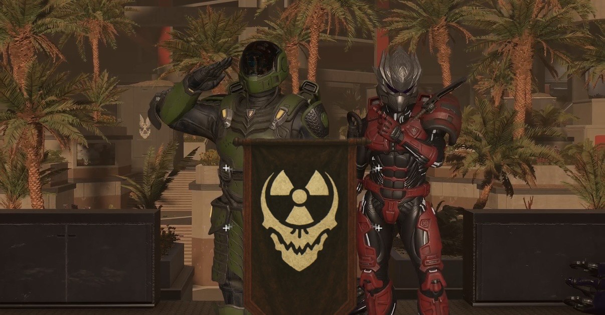
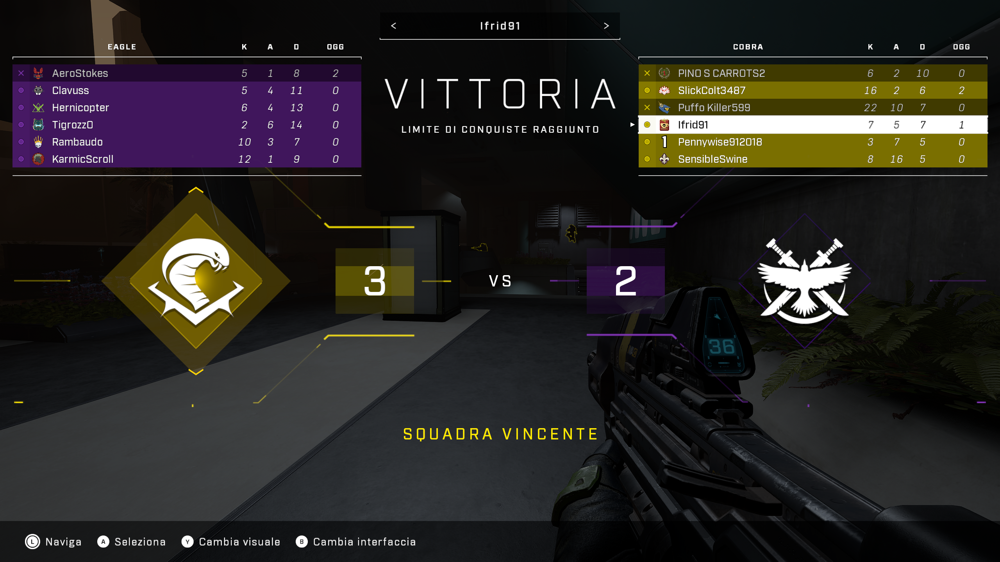
Tocca a Aquila. Mappa Halo 3, Valhalla e Massacro. Vuole vedere Pericolo perire sotto il piombo caldo. È il momento della riscossa. La mappa si riempe di Wraith e dolore. Wartogh ronzano intorno a blindati pesanti in cerca di trovare punti deboli. Copter non lascia il grilletto e comincia pian piano a bucare il Wraith di fronte a lui. Il guidatore del suo Warthog è stato decimato e quindi si ritrova fermo davanti a questo grosso mostro rosso metallico. Guardando la morte in faccia, Copter salta dal Warthog oramai fermo che esplode in mille pezzi. Impugna il fucile da cecchino e termina il lavoro. Copter VS Wraith: 1-0. Pessima la prestazione di Noble che in volo per ore conclude poco e viene spazzato via da Karmic con lo Schidione. La partita viene dominata da Pericolo, ma Aquila non si da per vinta e si lancia verso la vittoria con gli ultimi minuti mancancti. Sul finire della partita Clavuss che cerca di imitare Glimpse, è accucciato dietro una roccia aspettando il momento giusto, ma viene solleticato da Noble con lo Shock Rifle. "Ma che è sto Frizzino??" esclama. Sta letteralmente rinominando tutte le armi del gioco da Schidione l'Africano a ora il Frizzino.

Ultima Partita. Aquila non gli resta che puntare al Pareggio. Copter deve abbandonare la sfida che il giorno seguente deve aiutare Sootz con il PPT per la prossima guerra
di Bastione. Baudo sbotta "eh vabbè domani mi sveglio prima io", e seguono altre voci "io mi sveglio fra 3h" e ancora "io non dormo mai". Copter
manda a fanculo tutti e lascia il duello. La scelta della partita ricade su Gran Paradiso: Total Control senza veicoli. Glimpse ci pensa un attimo:
"Copter sapeva della scelta e per paura di trovarmi con il martello ha lasciato la partita?" (Leggere Guerra: Fondatori).
Non è il solo ad abbandonare la partita, ma pure Swine riceve una bella notizia e lascia l'incontro. I suoi mercenari hanno finalmente
trovato il modo di rientrare nella dimora di Gicontra. Stasera Swine non dormirà sotto un ponte. Stokes ride vedendo la sua nemesi abbandonare la partita.
Puffo si prepara alla partita cominciando a cenare....con una pizza (sono le 23:00). Tipico atteggiamento da cicciobrufolo, che crea qualche dubbio sulla integrità
videoludica di Puffo. Ma non tutti ci fanno caso, atteggiamento insolito di Puffo, sarebbe sicuramente passato non inosservato se fosse stato Drius a fare lo stesso.
La partita non fa in tempo ad iniziare che Silente invisibile Noble con il bazooka si avvicina a centro mappa trovando Tom cecchino Baudo sulla Zona A puntando altrove.
“Sciocco da parte tua Baudo venire subito in centro mappa con il fucile di precisione sapendo che a due passi dall’altra parte hai forgiato bazooka e invisibilità”.
Baudo viene spazzato via. Poi, proprio come l'ultima volta, il primo punto viene fatto da una squadra quasi istantaneamente. Curioso.
Stavolta però, per una piccolissima manciata di secondi. Il punto di Pericolo lascia Aquila subito in svantaggio.
La partita continua molto bilanciata, zone vengono catturare di continuo. Glimpse, oramai, si è affezionato alla Zona B, in memoria di Copter.
È proprio lì che rievoca i ricordi di una scena epica mentre attende ancora una volta accucciato dietro un albero.
Ma sono solo ricordi, passa all'azione e mette a segno una tripla assicurandosi, ancora una volta, la Zona B.
Dall'altra parte, le grida di Baudo, oramai cirdonadato nella sua Zona A sul ponte dei forerunner, fanno sentire il cedimento del morale Aquila.
Tripla con spada di Noble su Aquila, Colt che utilizza il Martello Pneumatico su Pericolo, Pennywise trova ancora una volta l'arma più potente del gioco e spazza via
gli ultimi rimasti. Pericolo vince. Una amara sconfitta per Aquila.
La Guerra finisce. Una altra Side Quest mette alla prova Gilde con nuove composizioni di squadre, allena gli animi per le Guerre della Campagna Ufficiale.
✍ Torna a Inizio Pagina.
1 Dicembre 2025. Preambolo: un annuncio importante.
Ore 8:00 di mattina, la forgia è invasa da volantini
"ore 14:00, annnuncio Bastione. Bastione Riemerge".
Mercenari speranzosi di enorme ricompensa, Leaders incuriositi, Valore Preoccupato.
Sembra che questo annuncio non sia stato proprio comunicato a i membri di Bastione, che costringono
Sootz a spostare una call aziendale dalle 14:00 alle 14:30, sfiora il licenziamento,
"Speriamo ne valga la pena" pensò. Ifrid invece comincia a stropicciarsi le mani.
Sono proprio queste le notizie che fanno oscillare le scommesse: emozioni, incertezze, annunci.
E questo brio porta Ifrid a fiondarsi ancora in pigiama al centro scommesse e ad aumentare la sua quota
"sul tonfo di Bastione".
Nella corsa sfrenata di Ifrid verso il centro scommesse, Glimpse incuriosito dalla possibilità
di vincere grosse somme di denaro, uscito da uno dei tanti Dangeon notturni allenandosi per la prossima sfida,
si mette a correre insieme ad Ifrid e alle sue risate isteriche di gioia:
diventano due bambini delle elementari che corrono per prendere il gelato.
I Due sfrecciano attraverso il Mercato di Bucinor per raggiungere il centro, lasciandosi alle spalle
una figura avvolta con un mantello che cammina in direzione opposta...
Ore 14:00. Bastione droppa quello che sarà la sua prima grande genialata di marketing
per il recruitamento di massa. Bastione, come i militari e i poliziotti,
regala il suo set di slides della campagna "Bastione Ti Aspetta"
(che include 10 goleador e 2 hotwheels per i nostalgici).
In questo plico viene descritta la gloria di Bastione negli anni (non ben definiti).
Il rate altissimo di vittorie, testimonianze dei fedelissimi come Flying WC e Sootz.
Accoglienza, Fratellanza, Difesa Inespugnabile e tante belle parole che ricevono un mix di reazioni.
Glimpse non se la beve, ride e raddopppia la sua scommessa seguendo Ifrid. Baudo è estasiato.
Swine è incuriosito, potrebbe trovare un carismatico alleato con grandi doti comunicative.
Sootz viene subito interrogato sulla veridicità della sua testimonianza, un rotto "Che ha scr..."
viene seguito da un fragrante "Tutto Vero!".
Mentre il messaggio di Colt non definisce bene quale sia il suo piano:
"sempre pronto a tradire", ma quale Gilda?
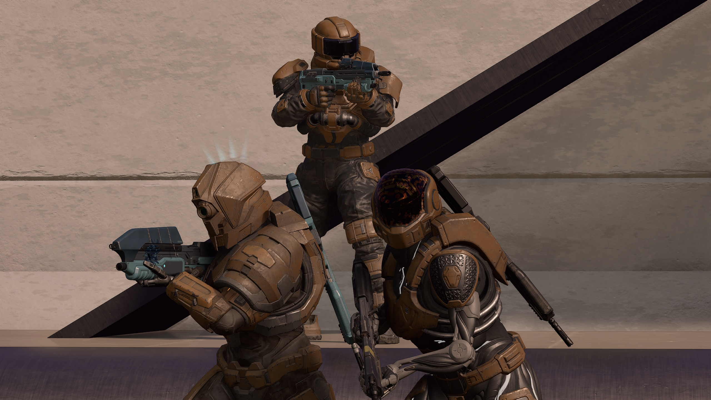
2 Dicembre 2025. Bastione di Copter contro Valore di Noble, una lunga intensa giornata.
L'inverno alle porte, un martedì che firma la fine del Primo Capitolo del Campionato.
Ore 10:00, il ritiro ufficiale di Ifrid dallo scontro, ma con l'augurio del tonfo di Bastione strappando in piazza
il plico della campagna marketing di Bastione.
Esplicita pure la scelta piazzata nel centro scommesse (chiama mele i succosi bigliettoni da 100 euro),
e sorge il dubbio fra i presenti che sia Ifrid stesso il proprietario di questo centro: un mistero.
Certezza invece la sua voglia di mettere zizzagna, come sempre.
A questo affronto, la pronta risposta di Copter che gli augura di prendersi un pene sul retro.
Forse quello di Aero, droppato più tardi nella chat, dalla lunghezza elefantesca.
Il marketing di Bastione è arrivato fra le mani di Pino che squarcia l'Agora con il suo grido
di portare i suoi servigi a Copter. Segue un attento silenzio che non durò troppo.
Perchè Swine sfodera ancora caldo dalle sue tasche l'ultima edizione di "Cazzo che Schiappa",
una ingnobile rivista di paparazzi e gente poco raccomandabile che getta fango su Mercenari e Leaders
puntando il riflettore sulle loro partite peggiori. In prima pagina, a caratteri cubitali la rivista scrive
"Pino, il Reverse Champion" parla di una partita passata dove Pino è arrivato ultimo per ben 5 turni, aggiudicandosi
l'ultimo posto in classifica non solo finale ma pure cumulativo. Swine se la ride, e cerca complicità
nel suo seguace Skate che prende larghe distanze.
Questo crea scompiglio nell'Agora, ma non influenza la decisione di Copter di dare a Pino
il titolo di "Cadetto" Bastione (..non ci allarghiamo troppo). Un leggero dissing fra Colt e Puffo
definisce la loro separazione per lo scontro.
Puffo si rende conto che dovrà unirsi a Noble. Estrae un fucile a canna mozza,
e si spara su un piede per sentire meno dolore,
"Ok, sono pronto" dice a denti stretti.
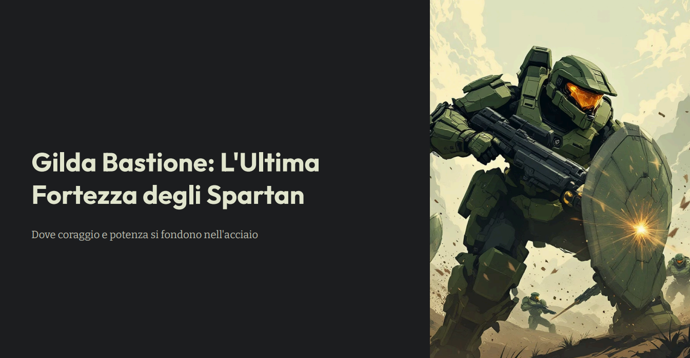
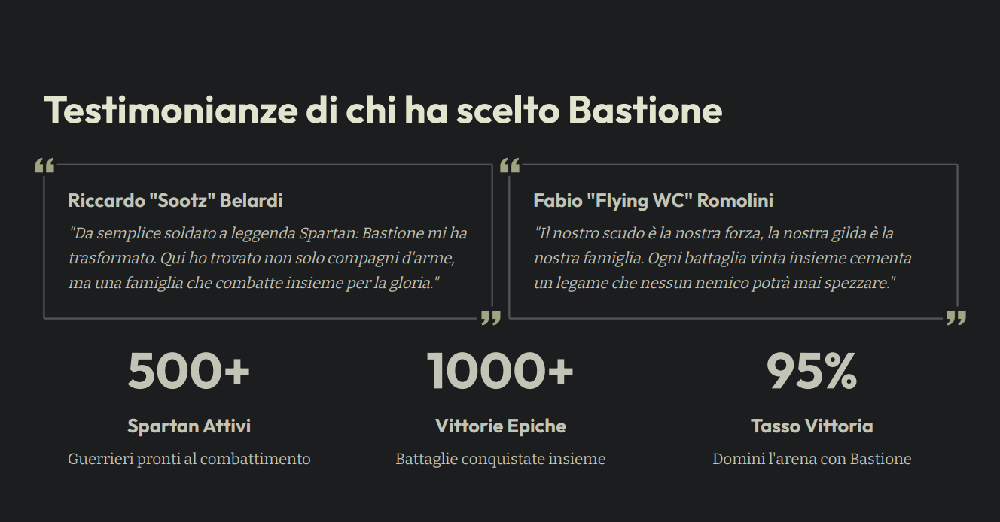
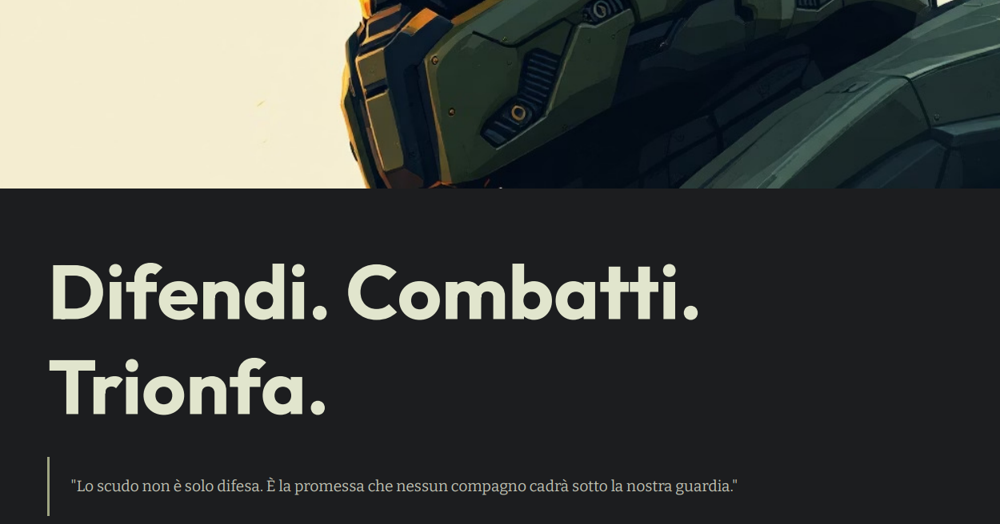
Lontano, dall'Agora, nel Mercato di Bucinor, a poche ore dallo scontro, alcune figure comprano nuovi arsenali. La bancarella "Fartt" offre strani oggetti, fra cui una paperella gialla da vasca da bagno che prende l'attenzione di Drius. "Questa", Drius non perde tempo a premere la paperella che emette un suono irritante: perfetta. Raggiunge lo scontro soddisfattissimo pensando che pure stasera flammerà molti se non con i colpi di fucile, a colpi di paperella (il suono di quella paperella ancora riecheggia su Discord). Alla stessa bancarella, si avvicina questa figura avvolta nel mantello e un oggetto in particolare prende la sua attenzione. L'elmo di Achille. Lontano il passato di gloria su halo 3, i ricordi affiorano e tornano in vita quando tocca il freddo curvo metallo. La figura si toglie il mantello, è Karmic, che ha scelto questo arsenale sicuro che gli darà la giusta motivazione per lo scontro. "Sono 200 mele" dice il proprietario della bancarella. Karmic si gela, i ricordi svaniscono perchè la Gilda Sciabola ad oggi è povera come la merda e non può pagare. Con una azione fortuita, afferra l'elmo e scappa. Dalle grida delle bancarella "Fermateloooo", Karmic risponde correndo "Vincerò e ti pagherò domani, promessoooo".
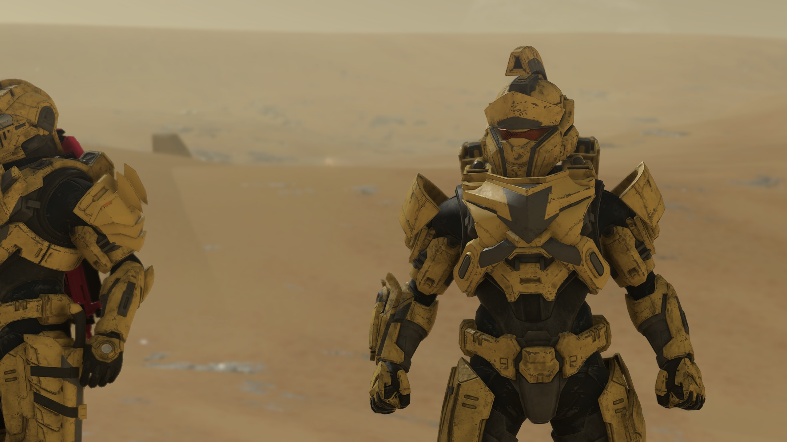
Ore 19:50. La campagna di reclutamento di Copter non è finita. Droppa la sua ultima Hit
"Bastione, la miglior difesa è l'attacco". Un messaggio di battaglia che porterà
se non stasera ma in futuro, nuove reclute Bastione. L'epicità è nell'aria.
Ore 22:30. Inizio dello scontro, Copter guarda Colt che arriva a Bastione e chiede "dove è Puffo?",
la risposta di Colt è netta "Non ti serve quella scartina". Ma Copter
si ricorda bene il messaggio di Colt droppato il giorno precedente "sempre pronto a tradire",
era un bluff o diceva sul serio e sono fregato? Le intenzioni di Cobra purtroppo si basano sul voltafaccia continuo e imprevedibile,
a pochi minuti dallo scontro non gli resta che reclutare Colt. Baudo si unisce a Bastione abbracciando Copter, da anni non combattevano insieme.
Pure Swine si unisce a Bastione ma Skate, suo seguace, disgustato nel venire a sapere che Swine legge quelle riviste spazzature, si unisce a Valore.
Karmic arriva correndo e sudato fradicio con l'elmo di Achille alle porte di Valore. Noble guarda l'elmo "questo è un buon segno".
Glimpse si unisce a Valore (cercando di aiutare la sua scommessa e quella di Ifrid) e lascia a Copter un foglio di carta con un disegno di un pene, disegnato male.
Clavuss esordisce con "Gnamo Gioca", Drius con la bava alla bocca afferra la paperella e Puffo si mette in posizione (con falso sorriso e con il piede fasciato).
Questo scontro, grazie al marketing di Bastione, ha portato in partita tutti gli 8 Leader Principali. Uno small taste di quella che sarà l'ultima Guerra
del Capitolo 5, l'ultimo, con tutte le Gilde in gioco.
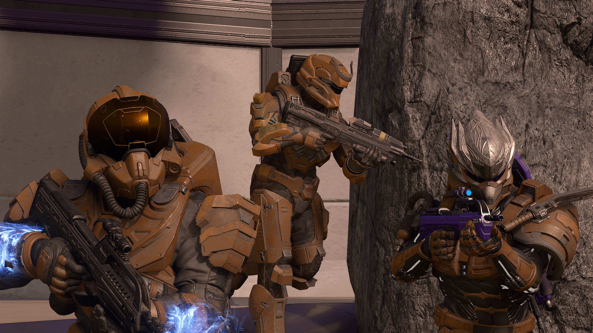
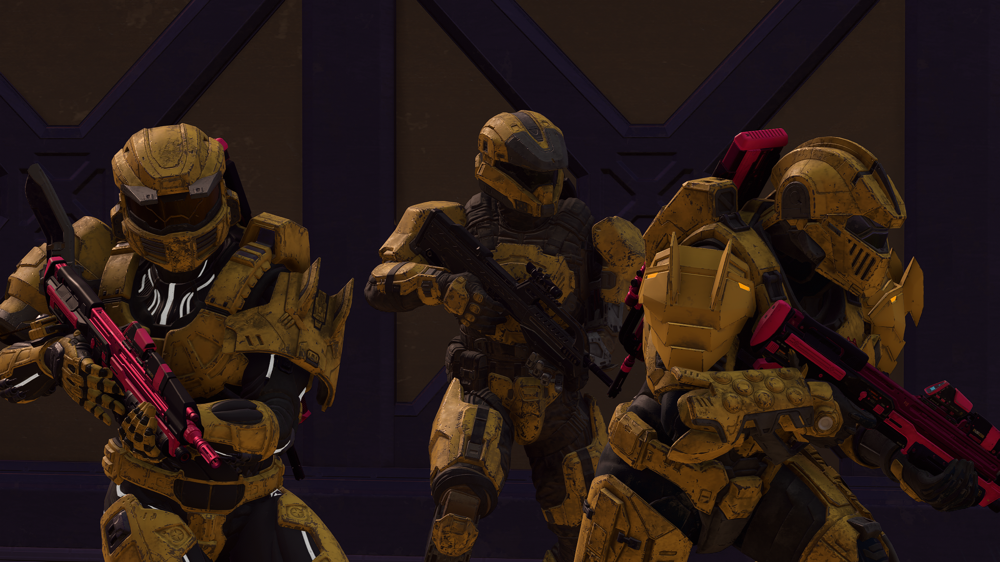
Iniziano gli annunci per le partite, qualche saluto prima dello scontro. Ma i componenti di Valore si accorgono di un fatto insolito. Noble è dislessico.
Clavuss viene chiamato "Santa Clauss", Colt "GlimpseColt", insomma da una parte il carismatico comunicatore di Bastione,
dall'altra parte un Leader che non sa mettere due parole in fila.
Puffo e Karmic si guardano, poi guardano Glimpse e Clavuss preoccupati. Ma Skate è sereno.
Lo scontro si apre con Massacro su Sandtrap, dimora di Valore.
Noble con forza "sempre a coppie e prendete i veicoli", Valore è bollente. Dominio veicoli porta Valore a un +15 sopra Bastione
che si rifugia in una roccaforte di sabbia circondato dal nemico. Tutti i veicoli ronzano intorno a Bastione tranne uno.
Il Wraith, fermo in base Valore, alla guida si trova Clavuss.
Come Link di Zelda che non è capace di saltare,
Clavuss non è capace di usare le frecce direzionali per muoversi (sebbene usate per arrivare al Wraith).
Glimpse alla guida della torretta chiede "che si fa, si va?".
Allora Glimpse scende, mostra a Clavuss le istruzioni di gioco di Halo Infinite, e insieme sfrecciano finalmente verso il nemico.
Karmic respawnna dicendo "ho 30ms di ping", una benedizione, proiettili vengono spediti allo Starlink di Musk
e ricadono in faccia a Bastione riducendolo in sabbia.
La partita sembra finita, ma Bastione con un colpo di reni cooperativo prende tutti i veicoli disponibili. Proprio
come aveva fatto Valore poco fa. Bastione marcia verso un pareggio di punti a velocità supersonica.
Baudo, la furia aerea, Flying WC e Sootz i seguaci fedeli al loro leader prendono spazio nel deserto.
Ma sorgono le prime polemiche dalla distesa di sabbia. "questa mappa è sbilanciata",
"se prendi i veicoli vinci". Grida che vengono silenziate da Valore, la battaglia finisce.
Lo scontro prosegue con una partita sketch, dove Copter cerca relax e forse una vittoria fortuita.
Castello di Peach, tutti contro tutti, ancora una volta dopo Cobra vs Pericolo, si ripropone ai giocatori.
Colt non è convinto di questa modalità, prova a contraddire la scelta di Copter
ma quest'ultimo lo tace dicendo "gioca e non tradire".
Copter brandisce la prima arma, urla e preme sul grilletto. Ma è una "arma che spara opinioni"
letteralmente non fa niente. Si ritrova sotto il fuoco nemico e viene spazzato via da colpi non definiti.
Pure Swine riceve una arma inutile ma non demorde, la getta nel vuoto e ne raccoglie una altra. Niente, altra arma inutile.
Non demorde e ne raccoglie una altra. Passeggia come un contadino in un orto a raccogliere erbacce mentre gli altri vedendo la sua disperazione
lo lasciano in pace nella sua pazzia per trovare "una arma che faccia qualcosa". Perfino Skate è dispiaciuto per Swine.
Sebbene una contesa sfida fra Baudo e Puffo. Puffo trova una arma definitiva. Come la definirebbe Penny un tempo "arma che pisciava missili".
Puffo vince Peach Castle, guardando stavolta Colt dall'alto.
Si torna ad un massacro standard. Mappa di Halo Reach. Stavolta con una nuova richiesta "Niente Veicoli".
La sfida si decide solo con la forza bruta delle armi e le skill da corridori (JoeMoo avrebbe dominato).
Siamo alla terza partita e Drius non ha smesso di premere la paperella ad ogni punto che ottiene,
"quack", e completa le sue frasi con un "quack".
Infra partite Drius ha letteralmente flammato qualsiasi giocatore che poteva flammare con questa paperella.
Drius è al settimo cielo, dormirà con la paperella stanotte, qualsiasi risultato.
Queste irritazioni sono forti e sfociano in altre polemiche: "Camperoniiiiii". Le grida frustrate di Bastione
percorrono la mappa in lungo e largo. Ancora una volta, polemiche infondate.
Non solo è stato chiesto di rimuovere i veicoli portando giocatori a percorrere lentamente lunghi tragitti,
ma ci sono letteralmente teletrasporti che connettono orizzontalmente la mappa permettendo di spuntare alle spalle
del nemico o guadagnare campo in edifici strategici.
A questo punto, pure Swine è irritato. Insolito. Il suo atteggiamento giocoso dignità-less non fa capire
quanto sia serio oppure no. Ma stavolta si fa sentire.
Ultima partita. Dominata da errori tecnici, equilibrio ed epicità.
Scelta ricade su Controllo Totale. Un grande ricordo invade la lobby di giocatori:
The Great LAN (scontro non del Campionato ma evento del 2024). Dove naque proprio in questa modalità l'offesa "pensa solo alle kills"
per Colt e le grida di Baudo "forzaaaa" per spingere alla vittoria. La partita inizia sulla mappa Commando,
ma la richiesta di "no veicoli" di Copter non viene ascoltata. La partita, una volta conclusa, va a monte.
In questa partita vediamo un Colt sniper che protegge una zona a distanza. Ma pure la realizzazione di Copter su Pino.
Pino è ancora un cadetto e ha bisogno di training (molto training).
Alla presa di un veicolo d'assalto, Copter si mette alla guida e Pino al mitragliatore.
Sfrecciando per raggiungere la zona da controllare, Pino, per ragioni non troppo chiare, lascia la torretta.
Quindi Copter si vede sfrecciare senza armi su quattro ruote verso una zona piena di Valore.
A pochi metri, prima dello scrosciare di proiettili dai fucili di Valore, Copter si ricorda i bei tempi in cui
Copter e Noble su un unico veicolo riuscivano a pareggiare partite oramai perse, a spingere squadre in vasti universi di gioco.
Ma questo ricordo fu sommerso dalla sua ira nel grido "Pino perchè sei scesooooooooo".
La partita viene annullata, viene riproposta senza veicoli, ma si bugga. Problema tecnico.
Si narra che fu la concomitanza della cattura di tutte e tre le zone in contemporanea
a Pino che si è suicidato con il bazooka a far buggare la mappa.
A questo punto Baudo, per venire in aiuto al problema tecnico, propone Gran Paradiso Controllo Totale senza veicoli.
Contro regolamento si, ma perfettamente funzionante.
Sappiamo tutti cosa nasconde Gran Paradiso. Una arma di distruzione di massa chiamata la Coda dello Scorpione.
La partita inizia e Colt crasha. Noble preoccupato per un altro problema tecnico, nella sua dislessia, dice parole a caso.
Valore in confusione. Bastione prende il sopravvendo e ottiene il primo punto.
A Bastione che Colt avesse crashato non gliene poteva fregare di meno.
Puffo e Karmic vedono Noble in difficolta grammaticale e cercano di tradurre cosa vuole ma invano.
Quindi decidono di prende le redini di Valore. "A gruppi di 3 sulle zone". La matematica non
è il loro forte con 3 zone e 7 giocatori.
Ma il piano funziona. Non domina, ma funziona. Infatti, esisterà per tutta
la partita un susseguirsi di attacco e difesa di zone.
Non c'è dominio, semplicemente pura rotazione. Partita equilibratissima e difficilissima.
Perfino Drius ha posato la paperella.
Quest'ultimo, decide di appollaiarsi in cima a Gran Paradiso e cominciare a fare kills dall'alto.
Torna ad essere cicciobrufoloso e Karmic non ci sta.
"Gnamo scendiiiiii basta fare il camper di merda". Dall'altra parte,
Karmic scopre per la seconda volta un valido Mercenario: Clavuss.
Non è la prima volta che lo nota e pondera su come arruolarlo in futuro.
Nel gran finale, Copter oscura il sole saltando dall'alto con la coda di scorpione e prende una zona
pensando di aver eliminato Valore. Ma non aveva considerato gli innumerevoli allenamenti di Glimpse nelle Dangeon
più remote. Dove Glimpse aveva imparato ad essere invisibile al nemico senza avere l'equipaggiamento dell'invisibilità:
semplicemente accucciandosi, scomparendo sul radar, fino a che tutti i giocatori si dimenticano della sua presenza in partita per poi...sbucare alle spalle del nemico.
Glimpse, si alza da un cespuglio circostante, pieno di foglie sui capelli corre alle spalle di Copter.
Glimpse potrebbe dare un singolo cazzotto a Copter per eliminarlo ma decide di umiliarlo.
Brandisce il martello e spazza via Copter e la sua arma infernale. La partita finisce in pareggio.
Noble, nella sua dislessia, decreta Bastione vincitore delle innumerevoli partite Controllo Totale.
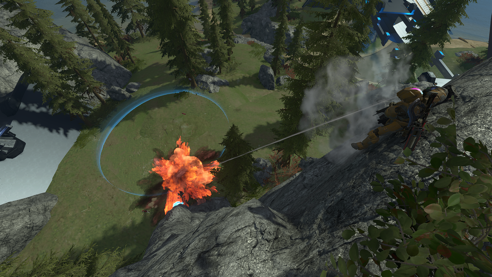
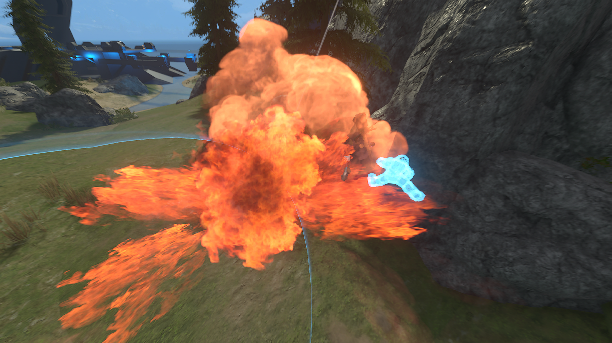
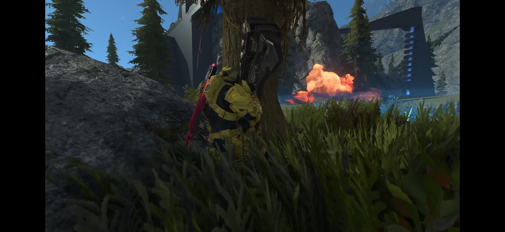
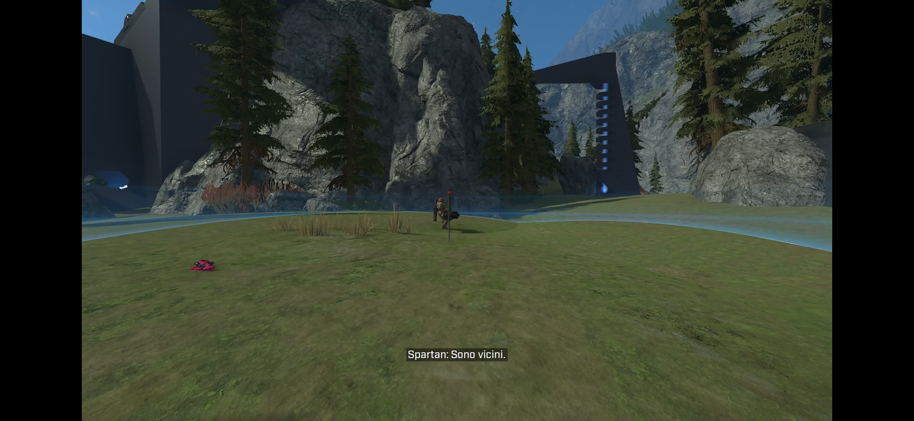
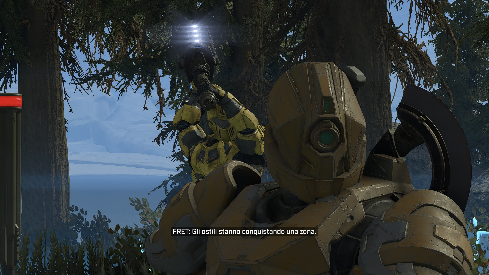
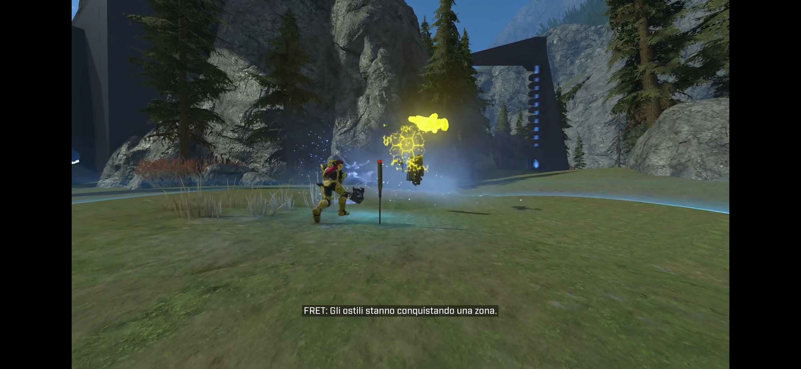
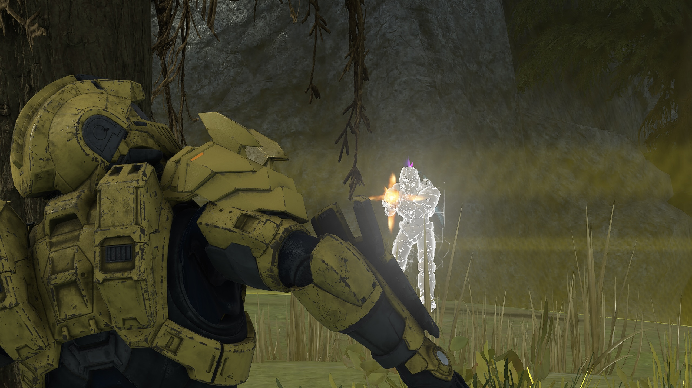
Copter frustrato, ha capito che il solo ritorno non è sufficiente. Ci vuole di più.
I suoi fedelissimi di Bastione non lo abbandoneranno mai, ma non basta. Ci vuole una spinta in più.
Fu proprio Bastione ha vincere l'ultima partita a 8 Gilde del Noble Party Gran Paradiso (Marzo 2025).
Quale fu la formula vincente? Copter, si ritira nelle sue stanze militari per pensare.
Bastione è una grossa fortezza robusta e pesante. Lenta a partire come un diesel, sta solo prendendo la rincorsa.
Valore ha dominanto sulla Guerra. Ma è veramente stato Noble e la sua dislessia?
Oppure è stata la fortuita composizione della Gilda da Leaders e Mercenari?
Ci sono stati troppi problemi tecnici che hanno annebbiato la gilda Bastione, stremata, dalla quale Valore ne ha preso forza. Cosa riserverà il torneo?
Altrove, Ifrid esce dal centro scommesse pieno d'oro. Drius dorme felice con la paperella. Baudo porta riflessioni ad Aquila per i prossimi scontri. Puffo torna a ricamare a maglia.
Karmic paga il suo debito al mercante per l'elmo di Achille e torna dagli Sciabola. Swine chiede scusa a Skate per la rivista.
Pino vuole essere più forte e si unisce a Glimpse in una Dangeon. Colt brama nell'ombra.
Sootz e WC, silenzioni si ri-organizzano per la prossima Guerra. Gli altri Mercenari, leggono il risultato e riflettono sul da farsi.
✍ Torna a Inizio Pagina.

27 Novembre 2025. La seconda parte di The Great LAN porta in arena nuovi e vecchi giocatori. Il Signor Colt, The Best Spartan, odiato e amato da molti (ma soprattutto odiato) guida la gilda Cobra. Si trova di fronte Puffo, uno degli ultimi arrivati su BOXALMATCH, leader di Pericolo. Pescato da un girone di partite classificate, e si unisce a questo Campionato (senza il suo consenso). Una sfida che atterra su tutti i giornali nei peggiori meandri della Forgia, facendo aderire pure gratuitamente molti Mercenari. Si narra che girava una taglia sulla testa di Colt e qualche Mercenario ha preso occasione di unirsi a Pericolo gratutitamente. Pericolo ha un Mercenario di grande lealtà che risponde alla chiamata (nonostante costui abbia esasperamente ripetuto "basta giocare ad Halo ti prego"), si parla di Bomber Sandyokhan. Un amico di lunga data che non prende sotto gamba questo Campionato. A Pericolo si unisce pure Tigrozzo, speranzoso di guadagnarsi la taglia sulla testa di Colt. Vediamo pure Flying WC in Pericolo, senza motivo di vendetta o altro, ma con tanta voglia di prendere a pugni la gente.
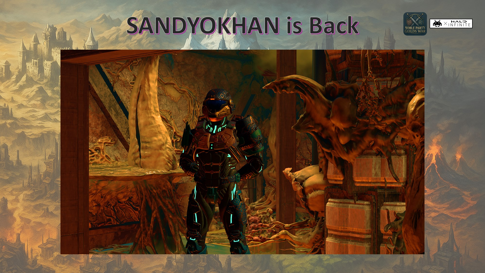
Dall'altra parte, Mercenari con motivazioni misteriose si uniscono a Cobra. Ifrid, una delle più antiche (e una delle tante) nemesi del signor Colt, si unisce a Cobra nonostante abbia visto l'annuncio sulla taglia. Scoprimmo poi a fine Guerra che Ifrid era un assiduo frequentatore di un rinomato centro di scommesse, e secondo i suoi calcoli (ancora ignoti), doveva unirsi a Cobra per sperare di guadagnare più della taglia. Ancora più oscuro il piano di Glimpse. Nonostante un credente della gilda Cobra, sappiamo tutti quanto è attaccato al denaro. L'annuncio della taglia e la soffiata del rinomato centro scommesse non lo hanno fermato all'unirsi a Cobra: perchè?
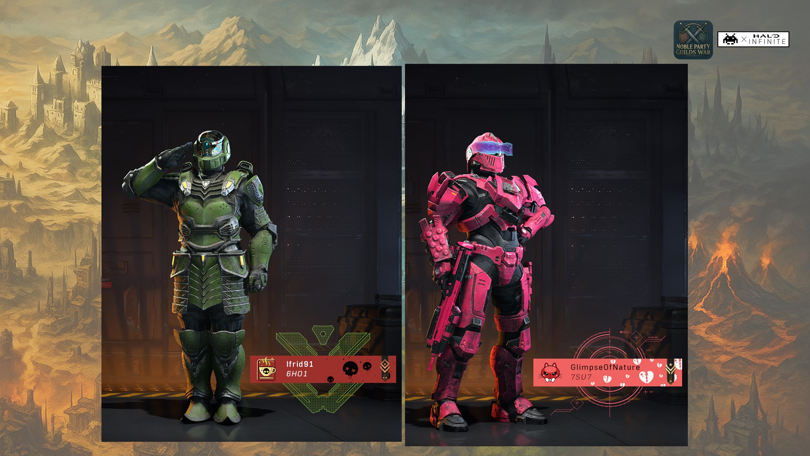
Nuovi Mercenari si uniscono a questa guerra. Mercenari di lunga data, non interessati a ste cagate delle scommesse o dei soldi. Vengono per divertirsi e stare insieme. Skate, con i suoi orari dove la luce solare deve essere assente, si unisce a Cobra. La sua presenza per Cobra sarà indispensabile, ma pure quella di Clavuss che esordisce "io sto con te Colt". Un messaggio chiaro che ci ricorda il suo motto "Pena poco e gioca" per andare a letto presto che domani si lavora (spoiler alert: per questa guerra non andò a letto presto).
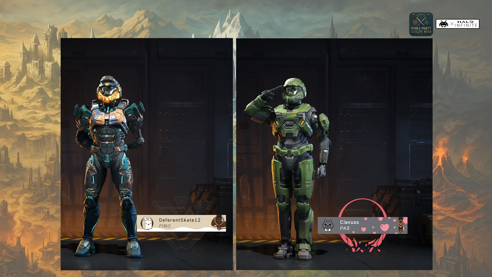
La Guerra parte, e sarà completamente invasa dalle offese a Colt.
Come Larry Bird, Puffo di Pericolo gioca sulla variabile psicologica e cerca di affondare l'animo di Cobra.
Stranamente....perfino tutti i componenti di Cobra offendono Colt, dandogli dell'incapace.
Ma molti non sapevano che Colt e le offese sono come Bane e l'oscurità:
"Oh, quindi pensate che le offese possano farmi qualcosa. Avete appena scoperto come si offende scartine;
io sono nato fra le offese, sono stato modellato da esse. Io non ho visto un complimento fino a quando non ho cominciato a lavorare"
(e il complimento è stato "bravo che hai fatto benzina al furgone")
Questa frase rafforza il morale di Colt nella prima partita, ma Pericolo firma la prima vittoria.
Puffo decide spavaldamente di dare a Colt qualcosa di più facile per vincere e decide una partita Sketch Tutti contro tutti.
A questo punto i mercenari di pericolo guardano Puffo dicendo "ma che cazzo fai?".
Sandyokhan chiede ripetute volte "ma che vuol dire le armi sparano colpi casuali?".
Puffo non lo ascolta, ascolta solo il suo ego di aver vinto la prima partita e lo porta alla disfatta davanti allo sguardo di Peach e del suo Castello.
Con La terza partita, Cobra vuole dimostrare che "non sa fare solo le kills".
Una offesa usata ripetutivamente contro Colt quando ricevette il premio The Best Spartan ma che ancora non lo scalfisce.
Si uniscono alla battaglia Noble di Valore, e Drius di Valchiria in Pericolo. Rambaudo di Aquila, e Karmic di Sciabola con l'immagine del cicciobrufolo Drius
non gli resta che unirsi a Cobra.
Alla scelta della partita con obbiettivo "Re della Collina", Swine che non ha partecipato alla Guerra si sveglia nel bel mezzo della notte urlando "No quella nooooo".
La tanto odiata modalità di Swine e Colt viene proprio scelta da quest'ultimo per dimostrare le use abilità Warcraft.
Cobra non si da per vinto, regge la partita fino alla fine, ma Pericolo ha la meglio.
A poco è servito il potere speciale di Glimpse con una costante presenza invisibile a contendere collina.
Forse ancora non maturo l’ultra instinct sbloccato da Ifrid che, con un “ahhh ma guarda”, passa ai 120fps nella sua macchina infernale (PC Desktop con lucine).
Le offese divampano, "vedi sai solo fare le kills" "cosa scegli ste modalità a obbiettivo che non ti riescono".
E qui che Pericolo fece il suo secondo ed ultimo errore. "Beh allora ne scegliamo una altra con obbiettivo che ne dici".
La scelta ricade su "Cattura la Bandiera Singola".
In questa partita c'è stato quello che si chiama "tipping point": un momento in cui qualcosa di significante ha cambiato le sorti dello scontro.
Con la bandiera quasi in base avversaria per essere catturata, Pericolo cerca di ripristinarla, ma dal cielo, piomba Clavuss. E con lui, una scarica di piombo e granate.
"Il cielo si oscurò da li in poi fu buio per Pericolo". Uno a zero, due a zero, tre a zero. Cobra, la partita perfetta.
Nonostante una ora di offese da parte di Pericolo e di Cobra stesso contro Colt, una Guerra finita in pareggio dimostrando che gli attacchi psicologici non hanno effetto contro Cobra.
Pericolo, una Gilda da temere ha imparato una lezione da questa guerra. E Cobra, una Gilda composta da Mercenari che hanno strane motivazioni ha tenuto testa allo scontro.
✍ Torna a Inizio Pagina.


23 Ottobre 2025. Giornata Invernale e silenziosa, ma dal sonoro silenzio un boato di battaglia.
È Sootz.
Ha voglia di combattere e la sua voglia di sangue viene subito accolta dalla tenebrosa Gilda Ade
con il suo controverso Leader Swine.
Valore, guidata da Noble, viene chiamato a combattere. Recluta un famoso Mercenario, Glimpse. Famoso, quanto costoso.
Guerra di Squadre Duos. Rapide ed Efficaci.
Si comincia in Abbiocco, Italia, dove Swine dimostra un incontrastata Leadership su Sootz.
Valore cade in confusione, ma Glimpse si sta solo scaldando per vincere (ed eventualmente sabotare haha).
Valore ha scelto il campo di battaglia, ha pure applicato le armi della Gilda, ed ha perso.
Ade, orgogliosissimo, invita a banchetto Valore nelle sue terre dove applica le armi di Ade e spera di far impazzire se non vergognare il nemico
di una doppia sconfitta. Un Bluff.
Valore schiva tutte le trappole, Glimpse è bollente. E Valore vince per un soffio. Esattamente 3 secondi.
In queste partite Sootz ha dato prova che l'evento del 2024, lo ha forgiato in un Mercenario di tutto rispetto
sebbene la sua lunga assenza e sa ascoltare il suo leader Swine.
Ma non basta.
Ade recluta Glimpse all'insaputa di Noble pagandolo una fortuna. Ma Noble, ha avuto la stessa idea comprandosi la fiducia di Sootz.
Nonostante questo scambio di Mercenari, Glimpse viene a sapere che Noble ha pagato una cifra molto più alta di quanto ricevuto da Swine.
Il rancore di Glimpse si fa sentire in partita non dando il massimo. Sootz, alla guida del Gravemind, domina una Partita Sketch e non si ferma lì.
Prende le redini di una seconda partita Sketch facendo esplodere in faccia ad Ade Grunt volanti portatori delle famose granate "appiccicose".
Queste "appiccicose", sono tutt'oggi il terrore di Swine, come il coccodrillo per capitan uncino.
✍ Torna a Inizio Pagina.

8 Ottobre 2025. Con l'inizio del Campionato, c'è voglia di giocare, di sperimentare, di mettersi alla prova.
The Great LAN, un ricordo fantastico diventa il centro delle prossime Guerre. Vede protagonisti giocatori storici.
In questa Guerra, Sciabola guidati da Karmic sfida Ade guidati da Swine. I fratelli di Halo 3 messi a confronto.
Non sono soli, Mercenari di lunga data vengono reclutati.
E la guerra si apre con la più alta sfida di sempre: il Mio Campione.
Sciabola si trova con un Mercenario insolito ma fiducioso, Pino's Carrot. Il Mercenario non finisce la frase
"Bei tempi sul Reach..." che Karmic lo spinge a calci nell'arena chiedendo la vittoria dopo aver speso tutti questi soldi per reclutarlo.
Ad affrontare Pino, Swine, fra fragorose risate, ci ha già pensato. Non ha scelto un Mercenario qualunque. Ha scelto Tigrozzo.
Gamer storico di Halo 3, con patente di guida per soli Elephants, adesso, si ritrova solo in Arena. 1v1. Sudore, Stress, guardandosi alle spalle uno Swine fiducioso "vincerai".
5 punti per vincere. Il tutto inizia in parità. Le partite vanno avanti dove Tigrozzo e Pino si uccidono perfettamente a vicenda.
Lo stress aumenta come pure l'impazienza per vincere di Pino. Sarà questa a fargli perdere la testa.
In una mappa da 1m2, Pino decide di afferrare il fucile di precisione per far fuori il suo avversario.
"Se lo becco, un colpo e muore" fu la sua giustificazione. La furia di Karmic e le sue grida "Ma che cazzo ti metti a fare il cecchino???"
oramai avevano invaso l'arena. Ma non bastò a far cambiare idea a Pino.
Dall'altra parte, Tigrozzo, impassibile (forse per il troppo stress) decise di restare fedele al suo fucile d'assalto. E alla fine, sciolse nel piombo Pino.
La Guerra era appena cominciata. Ma nella mente di Karmic era già finita.
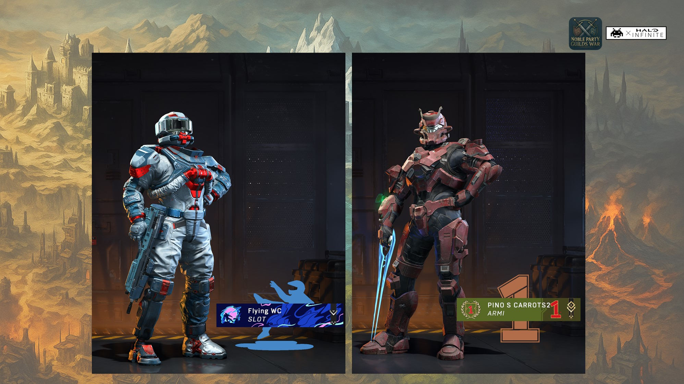
Il secondo scontro vede un team Sciabola pieno di grinta furiosa ma disorientato. Ade prende il vantaggio della situazione impugnando ogni arma disponibile sulla mappa ripetutamente.
La mappa, Salvezza scelta da Sciabola, fu la loro Perdizione.
Terza partita, gli Sciabola sono stremati. Per non ripetere di lasciare tutte le armi più forti al nemico, in un atto di follia, Karmic prende il bazooka e si lancia nel vuoto, autodistruggendosi.
Ancora una volta la disfatta per Sciabola. Troppo dolore dal Il Mio Campione, troppa sofferenza di aver perso nel proprio terreno, ma nel silenzio post partita, Sciabola si riorganizza.
Un ultimo massacro, una ultima carica su Lattice. Una mappa per partite classificate dove Sciabola e Ade sono concentratissimi.
Sciabola vede la luce in fondo al tunnel, conquista il fucile di precisione più volte e con combo di squadra arriva alla vittoria.
✍ Torna a Inizio Pagina.

6 Ottobre 2025. Il Campionato si apre proprio con la LAN, un richiamo alle origini di un lontano 2014 in quanto è
proprio Rambaudo con Aquila a sfidare Drius con Valchiria. Una sfida fra gamers moderni (cicciobrufolosi) e gamers passati.
Non sono soli. La curiosità di questo Campionato porta altri leader di Gilde a fare da spettatori e unirsi.
Fra i quali Karmic di Sciabola, Noble di Valore, Puffo di Pericolo e Swine di Ade. E tanti Mercenari sono stati comprati.
Un inizio Guerra proprio da gamers moderni. Drius porta subito in tavola una delle sfide più ardue per Rambaudo: massacro cecchini e pompa.
Per anni Rambaudo si è allenato solitario nelle varie forge per migliorare la sua precisione.
Non sono affatto stati invani, ma non ha considerato che le sue sole capacità non bastano per vincere una guerra, servono pure quelle dei Mercenari.
Una disfatta. Drius gioca al piattello sui mercenari di Baudo e seppellisce il leader Noble sotto proiettili a distanza mentre mangia fonzies ridendo a squarcia gola.
I mercenari di Valchiria sono disgustati dal loro leader, ma la somma di danaro che hanno ricevuto è stata troppo elevata per essere rifiutata.
Karmic di Sciabola, che ha sciolto Aquila a colpi di pompa, non regge il cicciobrufolame di Drius e decide di prendere una pausa partita.
Ad ogni modo, ci vuole ben altro per togliere la determinazione di Rambaudo.
Rambaudo prende le redini della seconda partita portando tutti quanti in un abbandonato Jurassic Park.
Swine e Puffo entrano in partita.
Puffo e Rambaudo creano azioni combinate che lasciano Drius finalmente senza fonzies fra le mani.
Swine, nonostante unito a Valchiria, ride della loro disfatta. Inoltre, per Swine, non basta la sua invisibilità per non farsi vedere dal nemico.
Terza partita e quarta partita, i giocatori sono a questo punto tutti concentrati.
Drius abbandona risate e altre patatine per diventare un vero leader.
Siamo a Sanctuary dove un massacro con escalation fino a mazzate con un teschio mette in difficoltà tutti i team.
Non è una passeggiata per nessuno, ma alla fine Valchiria ha la meglio.
Ultima partita vede uno scambio di mercenari e leaders. Rambaudo si fida di Swine, e Puffo da una possibilità a Drius (non il contrario).
Rambaudo sceglie il posto: Boardwalk. I ricordi di un Reach incredibile infiammano Baudo.
Un mercenario si distingue con pugni incredibili, è Flying WC.
Ifrid, altro mercenario leggendario, non ha la meglio in questo paesaggio cittadino: preferisce campi aperti con veicoli pesanti.
Fuoco incrociato, apnea d'azione, nessuna pausa.
L'ultima partita vede Valchiria vincitrice per 1 punto. Una sfida incredibile. Si conclude la LAN.
✍ Torna a Inizio Pagina.


Prima di giocare ricordati di leggere il Regolamento.

Gilda Ade, Gilda Aquila, Gilda Bastione, Gilda Cobra, Gilda Pericolo, Gilda Sciabola, Gilda Valchiria, Gilda Valore.

In questo luogo, i Mercenari attendono. Qui nascono alleanze, si stringono patti e i Leader scelgono chi marcerà con loro verso la prossima Guerra. Scopri i Mercenari su Agorà.

I vincitori di questo Campionato e informazioni sul punteggio sono su Awards.

Ispeziona i Punteggi del Campionato Scores.